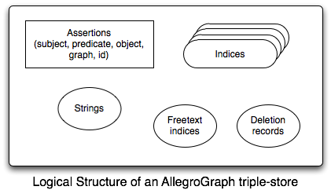
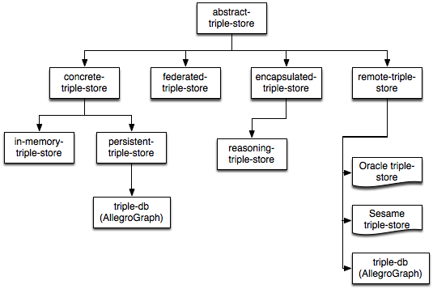
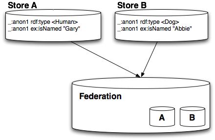
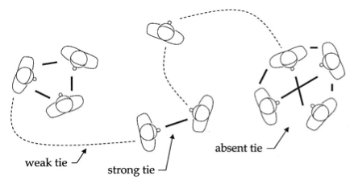

This is the reference guide for AllegroGraph 6.4.2. See the server installation and Lisp Quick Start for an overview. An introduction to AllegroGraph covering all of its many features at a high-level is in the AllegroGraph Introduction.
Note that Allegro CL has case-sensitive executables (such as mlisp) and case-insensitive executables (such as alisp). The case-insensitive executables are not compatible with AllegroGraph and must not be used.
Conceptual Triple-Store Structure
AllegroGraph is a graph database that makes an excellent RDF triple-store. This is a conceptual diagram of the data AllegroGraph manages:

- The bulk of an AllegroGraph triple-store is composed of assertions called triples. For historical reasons, each triple has five fields:
- subject (s)
- predicate (p)
- object (o)
- graph (g)
- triple-id (i)
All of s, p, o, and g are strings of arbitrary size. String data is associated with Unique Part Identifiers (UPIs) and managed by the string dictionary.
To speed queries, AllegroGraph creates indices which contain the assertions plus additional information (see below for more details).
AllegroGraph can also perform freetext searching in the assertions using its freetext indices (see the section on freetext indexing for details).
and Finally, AllegroGraph keeps track of deleted triples
Each assertion can be viewed as an edge p between graph nodes s and o with additional data g or as the statement "subject predicate object (in the context of graph)".
Triple-data generally comes into AllegroGraph as strings either from pure RDF/XML or as the more verbose but simpler N-Triple format. Once the triples are in AllegroGraph, it is possible to manipulate them, perform logical inference, and execute extremely fast queries.
The string dictionary manages efficient storage and fast lookup of the strings in the triple-store. We call the process of hashing a string into its UPI and storing it in the string dictionary interning.
General Information about Symbols Naming Lisp Functionality
Unless otherwise noted, symbols defined in this document are exported from the db.agraph package (nicknamed triple-store). The db.agraph.user package (nicknamed triple-store-user) is intended to be a convenient package in which to write simple AllegroGraph code. The db.agraph.user package uses the following packages:
- db.agraph
- sparql
- prolog
- excl
- common-lisp
When an application creates its own packages, it is recommended that they use the same packages as db.agraph.user (unless there is some specific name conflict to be avoided). Such application packages could thus be defined with a defpackage form like:
(defpackage :my-agraph-package (:use :db.agraph :sparql :prolog :cl :excl)
[other options]) or these forms could be evaluated after the package is created:
(use-package :db.agraph (find-package :my-agraph-package))
(use-package :sparql (find-package :my-agraph-package))
(use-package :prolog (find-package :my-agraph-package))
(use-package :cl (find-package :my-agraph-package))
(use-package :excl(find-package :my-agraph-package)) Again, if one or more of the packages used by db.agraph.user should be excluded because of actual or potential name conflicts, they should not be used and symbols in them will need to be package qualified in application code. All this is analogous to the common-lisp and common-lisp-user packages. Symbols in this document are not, in general, package-qualified.
Basic Triple-Store Operations
Managing a triple-store
These functions are used to create, delete, and examine triple-stores. For convenience, many operations act by default on the current triple-store which is kept in a special variable named *db*. The with-triple-store macro makes it easy to call other code with a particular store marked current. 1
Operations on a triple-store take place within a transaction. A transaction is started when a triple store is created or opened. A transaction is finished and a new transaction started with commit-triple-store or rollback-triple-store.
The default triple-store instance. API functions that take a db keyword argument will use this value by default.
Note that the *db* value should not be shared among multiple processes because add, rollback and commit events from independent processes will be executed on the same connection with unexpected results. Since *db* is the default value for many functions that have a :db keyword, this problem can easily arise in a multi-process application. To avoid it, each process should make its own connection to the database by using open-triple-store. As of v6.4.0, *db* will be bound to nil in each new thread to help avoid accidental sharing.
The default port to use when attaching to an AllegroGraph server.
This is the port where the AllegroGraph server listens for connections from clients. It is used to start a session by triple-store functions like create-triple-store, open-triple-store, and so on. The server's port can be set explicitly in the configuration file or found by looking at the file the server creates when it starts. The location of this file is specified using the PortFile directive. For more details see the server configuration guide.
List the catalogs on the local AllegroGraph server running on port.
This function is deprecated, please refer to catalog-names instead.
Returns a list of strings, naming triple-stores in a given catalog.
As in catalog-names, you can use the triple-store-class argument to specify the kind of store that should be listed. Like open-triple-store and create-triple-store, triple-store-names takes additional keyword arguments that vary depending on this class name. For example, querying catalogs containing remote-triple-stores may require specifying a username and password. See open-triple-store or create-triple-store for additional details.
Close the triple-store db. Returns nil.
:db- the triple-store to close (defaults to *db*). If the triple store being closed iseqto *db*, then *db* is set tonil.:if-closed- controls the behavior when thedbprovided is closed, or (without:dbargument) when *db* isnil: Ifif-closedis:errorthen an error will be signaled in this situation. If it is:ignore(the default) thenclose-triple-storewill return without signaling an error.If
:commitis true, and the store is open, then commit-triple-store will be called before the store is closed. This defaults tonil- If
:ensure-not-lingeringis true, then ensure-not-lingering will be called after the store is closed.
To conserve resources, makes the database instance and its child processes exit if the instance is unused (nobody has the corresponding triple store open). This function returns nothing.
Normally unused database instances linger for InstanceTimeout seconds to speed up subsequent open operations.
You can use the triple-store-class argument to specify the kind of store you are trying to check. Like open-triple-store and create-triple-store, ensure-not-lingering takes additional keyword arguments that vary depending on this class. For example, checking a remote-triple-store may require specifying a username and password. See open-triple-store or create-triple-store for additional details. Also, see the ensure-not-lingering keyword argument to close-triple-store.
db defaults to *db*.
Copy triples from source to target-db.
copy-triples adds each triple in source to the target-db and ensures that any strings in these triples are also interned in the target-db.
source can be a triple-store, a cursor that yields triples, a list or array of triples, or a single triple. If the source-db can be determined from source (e.g., if source is a triple-store or cursor), then source-db is ignored. Otherwise, the triples are assumed to exist in source-db, which defaults to *db*.
target-db should be an open and writable triple-store.
This function creates a new repository (also called a triple store) with the given name and begins a new transaction. name must be a string. The following characters cannot be used in name:
\ / ~ : Space $ { } ( ) < > * + [ ] | create-triple-store takes numerous keyword arguments (not all of which appear in the argument list, which does have an &allow-other-keys). The allowed arguments vary depending on the class of triple-store being created. For example, a remote-triple-store requires :server, :port, and :user and :password (unless anonymous access is allowed) whereas an instance of triple-db does not. :user, (See Lisp Quick Start for an example of creating a remote triple store and other examples creating and opening triple stores.)
The possible arguments include (but are not limited to (note some described arguments do not appear in the argument list but are allowed because additional keyword arguments are allowed):
:if-exists- controls what to do if the triple-store already exists. The default value,:supersede, will cause create-triple-store to attempt to delete the old triple store and create a new one;:errorcauses create-triple-store to signal an error. If the triple-store is opened by another connection, then :supersede will fail because the store cannot be deleted.:catalog- the catalog to use in the server's configuration file. If left unspecified, the root catalog will be used. Users may not create repositories in the system catalog.:server- the server for a remote-triple-store. The default is "127.0.0.1" (which is the local machine).:port- the port to use to access the AllegroGraph server. The default is the value of default-ag-http-port:user- the username to use when accessing the server (anonymous access, if supported, does not require a user value):password- the password to use when accessing the server (anonymous access, if supported, does not require a password):scheme- the protocol to use to access the server. May be :http or :https. The default is :http.:triple-store-class- the kind of triple-store to create. If left unspecified, then triple-db will be used.:params- If supplied, the value must be an alist of catalog configuration directives and values (both represented as strings). The catalog directives are documented in the Catalog directives section of the Server Configuration and Control document. Any catalog directive can be specified. The catalog defaults will be used for directives that are not specified by this argument. For example, suppose you want the new repository to have a string table size of 128 MB and uselzostring compression (rather than the default no compression), then you would specify the following value(create-triple-store ... :params '(("StringTableSize" . "128m") ("StringTableCompression" . "lzo"))):with-indices- a list of index flavors that this store will use. If left unspecified, the store will use the standard indices of :gospi, :gposi, :gspoi, :ospgi, :posgi, :spogi, and :i.:https-verification- the value should be a list of keywords and value pairs, as follows: :method allows control over the SSL protocol handshake process; can be: :sslv23 (the default), :sslv2, :sslv3, :sslv3+, :tlsv1; :certificate names a file which contains one or more PEM-encoded certificates. :key should be a string or pathname naming a file containing the private RSA key corresponding the the public key in the certificate. The file must be in PEM format. :certificate-password, if specified, should be a string. :verify: nil means that no automatic verification will occur, :optional means that the server's certificate (if supplied) will be automatically verified during SSL handshake, :required means that the server's certificate will be automatically verified during SSL handshake. :maxdepth must be an integer (which defaults to 10) which indicates the maximum allowable depth of the certificate verification chain; :ca-file specifies the name of a file containing a series of trusted PEM-encoded Intermediate CA or Root CA certificates that will be used during peer certificate verification; :ca-directory specifies the name of a directory containing a series of trusted Intermediate CA or Root CA certificate files that will be used during peer certificate verification; :ciphers should be a string which specifies an OpenSSL cipher list. these values are passed as arguments to the function socket:make-ssl-client-stream. Here is an example:(create-triple-store "clienttest" :triple-store-class 'remote-triple-store :port 10398 :server "localhost" :scheme :https :https-verification '(;; Server must identify to the client and ;; must pass certificate ;; verification. Other sensible option is ;; :optional; :nil suppresses verification ;; altogether and should never be used. :verify :required ;; The CA certificate used to sign the server's ;; certificate. :ca-file "/path/to/ca.cert" ;; The certificate and key file to authenticate ;; this client with. :certificate "/path/to/test.cert"))
Create-triple-store returns a triple-store object and sets the value of the variable *db* to that object.
The name of the triple-store db (read-only).
This is set when the triple-store is created or opened.
db. This is the graph that will be assigned to any triples added to db unless a different graph is specified.
Delete an existing triple store. Returns t if the deletion was successful and nil if it was not.
The db-or-name argument can be either a triple store instance or the name of a triple store. If it is an instance, then the triple store associated with the instance will be closed if it is open and then it will be deleted (assuming that it is not open by any other processes). If db-or-name is eq to *db*, then *db* will be set to nil once the triple-store is deleted.
The :if-does-not-exist keyword argument specifies what to do if the triple-store does not exist. The default value, :error, causes delete-triple-store to signal an error. The value :ignore will cause delete-triple-store to do nothing and return nil.
You can use the triple-store-class argument to specify the kind of store you are trying to delete. Like open-triple-store and create-triple-store, delete-triple-store takes additional keyword arguments that vary depending on this class. For example, deleting a remote-triple-store may require specifying a username and password. See open-triple-store or create-triple-store for additional details.
Close any current triple-store and create a new empty one.
:apply-reasoner-p- If true (the default), then the new triple-store will use RDFS++ reasoning. If nil, then the triple-store will have no reasoning enabled.
The new triple-store will be bound to *db* and is also returned by make-tutorial-store.
This function opens an existing triple store with the given designator and begins a new transaction.
The designator can be a string naming a store, a string naming a catalog and store (separated by colon or slash), an existing triple-store instance, or a triple-store specification. For example:
;; open the store named 'example-store' in the root catalog
(open-triple-store "example-store")
;; open the store named 'data' in the catalog 'test'
(open-triple-store "test:data")
;; open the store named 'data' in the catalog 'test'
(open-triple-store "test/data")
;; the above two forms are is equivalent to using the
;; :catalog keyword argument:
(open-triple-store "data" :catalog "test")
;; create a federation of the triple stores named 'a' and 'b'
(open-triple-store "<a>+<b>") open-triple-store takes numerous keyword arguments. The allowed arguments vary depending on the class of triple-store being opened. For example, a remote-triple-store requires a :server, :user and :password (unless anonymous access is allowed) whereas a local triple-db does not.
For remote-triple-stores, :user, :password, :port, and :server can be specified with the individual arguments.
The possible arguments include (but are not limited to):
:catalog- the catalog to use in the server's configuration file. The catalog may also be specified as part of the requireddesignatorargument, with the catalog name and store name separated by a slash or a colon. If the catalog is not specified as part of thedesignatorand this argument is left unspecified, the root catalog will be used.:server- the server for a remote-triple-store. The default is "127.0.0.1" (which is the local machine).:port- the port to use to find the AllegroGraph server. The default is the value of default-ag-http-port.:user- the username to use when accessing the server (anonymous access, if supported, does not require a user value):password- the password to use when accessing the server (anonymous access, if supported, does not require a password):scheme- the protocol to use to access the server. May be :http or :https. The default is :http.:triple-store-class- the kind of triple-store to open. If left unspecified, thendesignatorwill be treated as a triple-store specification and the triple store class will be determined based on the specification.:read-only- if true, then the triple-store will be opened read-only.:https-verification- See the description of this argument in the documentation for create-triple-store.
Returns a triple store object and sets the value of the variable *db* to that object. If the named triple store is already open, open-triple-store returns a new object connected to the same store.
See Lisp Quick Start for an example of creating and opening triple stores.
This function undoes any local changes to db and synchronizes with the most up-to-date server version. rollback-triple-store ends the current transaction and begins a new one.
:db- the triple-store to rollback; defaults to the current value of *db*.
Returns the number of triples in a triple store. The :db keyword argument specifies the triple store to use, either by name or a triple store object. It defaults to the value of *db*.
Note that reasoning triple-stores do not report accurate triple-counts (doing so might take an inordinate amount of time!). The count returned will be a count of the triples in the ground store.
Returns true if the triple-store with the given name exists.
You can use the triple-store-class argument to specify the kind of store you are trying to check. Like open-triple-store and create-triple-store, triple-store-exists-p takes additional keyword arguments that vary depending on this class. For example, checking a remote-triple-store may require specifying a username and password. See open-triple-store or create-triple-store for additional details.
Binds both var and *db* to the triple-store designated by store. The following keyword arguments can also be used:
errorp - controls whether or not
with-triple-storesignals an error if the specified store cannot be found.read-only-p - if specified then with-triple-store will signal an error if the specified triple-store is writable and read-only-p is nil or if the store is read-only and read-only-p is t.
- state - can be :open, :closed or nil. If :open or :closed, an error will be signaled unless the triple-store is in the same state.
Prepare a store so that subsequent operations will be faster.
For example, bring as much of a disk-based store as possible into RAM.
Evaluate body with var bound to the results of calling open-triple-store on store-arguments. *db* is also bound to the newly opened store. The store will be closed after body executes. store-arguments can be an expression or a list of arguments that will be passed to open-triple-store. Example uses include:
(with-open-triple-store (xyz (ground-triple-store *db*))
...) and
(with-open-triple-store (abc "test" :triple-store-class 'remote-triple-store)
...) Adding Triples
You can import data into your triple-store using the client API (such as the Lisp functions below) or the command-line program agload.
Triples stored in files using the N-Triples 2 , RDF/XML 3 , and other formats can be loaded into the triple-store with the following functions.
Checking that UPIs are in the string table
AllegroGraph ensures that the UPIs in a triple being added are already interned in the triple-store's string table. Unless the UPI is in the string table, associated triples can not be serialized. This check does somewhat slow down adding triples. You can suppress the check by wrapping the code adding the triples in the following macro:
Execute body without validating that hashed UPIs are present in the string table.
This effects only db which defaults to *db*.
For example, this code will signal an error:
(add-triple !rdf:x !rdf:y (let ((*db* nil)) (upi !rdf:notHere))) because !rdf:notHere is not in the string-table. This code, however, will add the triple regardless:
(while-not-validating-that-upis-are-in-string-table ()
(add-triple !rdf:x !rdf:y (let ((*db* nil)) (upi !rdf:notHere)))) Note that adds wrapped in this macro are slightly faster but more dangerous since it may be impossible to re-serialize the data if it contains hashed UPIs that are not interned in the string table.
Bulk loading and commit-triple-store
All of AllegroGraph bulk load functions take a :commit parameter that controls when the data being loaded is actually committed. This parameter can be:
nil- never commit,t- commit once all of the data has been imported,- a whole number - commit whenever more than this number of triples have been added. If
commitis a number, then commit-triple-store will also be called at the end of the load.
Note also that if you are loading many small files, you will find that it is more efficient to use the method specialized on lists and not iterate through the the list of files yourself:
;; pathnames is a list of files
;; let load-ntriples do the work of iterating over them
(load-ntriples pathnames)
;; Much slower!!
;; probably _NOT_ what you want to do
(dolist (pathname pathnames)
(load-ntriples pathname)) The Bulk Loading Functions
The following subsections list functions which load data from files or from strings.
Loading Triples
Add triples from source (in N-Triples format) to the triple store.
Returns (as multiple values) the count of triples loaded and the UPI of the graph into which the triples were loaded.
source- can be a stream, a pathname to an N-Triples file, a file URI, an HTTP URI or a string that can be coerced into a pathname.sourcecan also be a list of any of these things. In this case, each item in the list will be imported in turn. When adding statements to a remote-triple-store, a URI source argument will be fetched directly by the server. All other source types are retrieved and delivered to the server via the client interface.In the case where a list of sources is being loaded and the
graphargument is:source, each source in the list will be associated with the URI specifying that source, and that will be used as the graph of the triples loaded from that source. In this case, the second return value will benil.:db- specifies the triple-store into which triples will be loaded. This defaults to the value of *db*.:graph- the graph into which the triples fromsourcewill be placed. It defaults tonilwhich is interpreted asdb's default graph. If supplied, it can be:a string representing a URIref, or a UPI or future-part encoding a URIref, which adds the triples in
sourceto a graph named by that URIthe keyword
:source, in which case thesourceargument will be added as a URI and the loaded triples added to a graph named by that URI. This has the effect of associating the file or URL ofsourcewith the new triples.
The following keyword parameters can be used to control the loading process:
:verbose- specifies whether or not progress information is printed as triples are loaded. It defaults tonil.:preserve-strings- determine whether or not to save the strings of a triple's object field when the object can be encoded directly into the triple. If true (the default) then the strings will be saved. If false, then only the encoded values will be preserved (this may prevent exact round-trips if data is coerced during the encoding process).:commit- controls whether and how often commit-triple-store is called while loading. This can benilfor no commit,tfor commit at the end of the load or a whole number to commit whenever more than that number of triples have been added and again at the end of the load. Default is nil.:relax-syntax- For N-Triples and N-Quad files, this flag tells AllegroGraph to ignore certain syntax. In particular:- Blank node names may use underscore (_) and dash (-) characters.
- Literals may be used in the Graph position (for N-Quads).
- URIs are not required to include a colon (:).
:default-attributes- specifies the attributes that will be associated with every triple being loaded. (Because in this file format attributes cannot be specified for individual triples, all triples loaded will have these attributes.) See the Triple Attributes document for more information on attributes.:continue-on-error-p- determine how the parser should behave if it encounters an error parsing or adding a triple. It can be one of:nil- meaning to raise the error normally,t- meaning to ignore the error and continue parsing with the next line in the source,a function of four arguments: a parsing helper data structure, the line in the source where the problem was encountered, the condition that caused the error and the arguments (if any) to that condition.
This is a non-standard parser extension and should only be used when necessary.
You can use continue-on-error-p to print all of the problem lines in a file using something like
(load-ntriples
"source"
:continue-on-errorp
(lambda (helper source-line condition &rest args)
(declare (ignore helper args))
(format t "~&Error at line ~:6d - ~a" source-line condition)))
Add the triples in string (in N-Triples format) to the triple store.
See load-ntriples for details on the parameters.
Add triples from the named Turtle source to the triple-store. The additional arguments are:
:db- specifies the triple-store into which triples will be loaded; defaults to the value of db.:base-uri- this defaults to the name of the file from which the triples are loaded. It is used to resolve relative URI references during parsing. To use no base-uri, use the empty string "".:graph- the graph to which the triples fromsourcewill be placed. It defaults tonilwhich is interpreted asdb's default graph. If supplied, it can be:a string representing a URIref, or a UPI or future-part encoding a URIref, which adds the triples in
sourceto a graph named by that URIthe keyword
:source, in which case thesourceargument will be added as a URI and the loaded triples added to a graph named by that URI. This has the effect of associating the file or URL ofsourcewith the new triples.
:default-attributes- specifies the attributes that will be associated with every triple being loaded. (Because in this file format attributes cannot be specified for individual triples, all triples loaded will have these attributes.) See the Triple Attributes document for more information on attributes.
Treat string as a Turtle data source and add it to the triple-store.
See load-turtle for details.
Add triples from an RDF/XML file to a triple-store. The arguments are (some do not appear in the argument list but are accepted because &allow-other-keys is specified):
source: a string or pathname identifying an RDF/XML file, or a stream.:db- specifies the triple-store into which triples will be loaded; defaults to the value of *db*.:base-uri- this defaults to the name of the file from which the triples are loaded. It is used to resolve relative URI references during parsing. To use no base-uri, use the empty string "".:graph- the graph to which the triples fromsourcewill be placed. It defaults tonilwhich is interpreted asdb's default graph. If supplied, it can be:a string representing a URIref, or a UPI or future-part encoding a URIref, which adds the triples in
sourceto a graph named by that URIthe keyword
:source, in which case thesourceargument will be added as a URI and the loaded triples added to a graph named by that URI. This has the effect of associating the file or URL ofsourcewith the new triples.
:resolve-external-references- if true, the external references insourcewill be followed. The default isnil.
Treat string as an RDF/XML data source and add it to the triple-store. For example:
(load-rdf/xml-from-string
"<?xml version=\"1.0\"?>
<rdf:RDF xmlns:rdf=\"http://www.w3.org/1999/02/22-rdf-syntax-ns#\"
xmlns:ex=\"http://example.org/stuff/1.0/\">
<rdf:Description rdf:about=\"http://example.org/item01\">
<ex:prop rdf:parseType=\"Literal\"
xmlns:a=\"http://example.org/a#\"><a:Box required=\"true\">
<a:widget size=\"10\" />
<a:grommit id=\"23\" /></a:Box>
</ex:prop>
</rdf:Description>
</rdf:RDF>
") See load-rdf/xml for details on the parser and the other arguments to this function.
Loading Quads
These functions load quads (triples with a graph optionally specified). Formats which support graphs include N-Quad, TriX, and TriG.
Add triples from source (in N-Quads format) to the triple store.
Returns (as multiple values) the count of triples loaded and the UPI of the graph into which quads missing the graph field were loaded. (load-nquads is following load-ntriples here). If all nquads have a graph field specified, the second return value has no meaning, but the graph field is optional in nquads so some (or all) may be missing and the second return value is then relevant. See load-ntriples for more details on the second return value, particularly when the value of the graph argument is :source and some nquads do not have a graph specified.
source- can be a stream, a pathname to an N-Quads file, a file URI, an HTTP URI or a string that can be coerced into a pathname.sourcecan also be a list of any of these things. In this case, each item in the list will be imported in turn. When adding statements to a remote-triple-store, a URI source argument will be fetched directly by the server. All other source types are retrieved and delivered to the server via the client interface.In the case where a list of sources is being loaded and the
graphargument is:source, each source in the list will be associated with the URI specifying that source, which will be used as the graph for nquads which do not have the graph specified. In this case, the second return value will benil.:db- specifies the triple-store into which nquads will be loaded. This defaults to the value of *db*.:graph- for any nquads which do not have a graph specified (the graph is optional in a nquad), this argument specifies the graph to which they are loaded. The argument defaults tonilwhich is interpreted asdb's default graph. This argument does not affect nquads which do have a graph specified. If supplied, it can be:a string representing a URIref, or a UPI or future-part encoding a URIref, which adds the triples in
sourceto a graph named by that URIthe keyword
:source, in which case thesourceargument will be added as a URI and the loaded nquads which do not have the graph specified will be added to a graph named by that URI. This has the effect of associating the file or URL ofsourcewith the incoming graphless nquads.
The following keyword parameters can be used to control the loading process:
:verbose- specifies whether or not progress information is printed as triples are loaded. It defaults tonil.:preserve-strings- determine whether or not to save the strings of a triple's object field when the object can be encoded directly into the triple. If true (the default) then the strings will be saved. If false, then only the encoded values will be preserved (this may prevent exact round-trips if data is coerced during the encoding process).:commit- controls whether and how often commit-triple-store is called while loading. This can benilfor no commit,tfor commit at the end of the load or a whole number to commit whenever more than that number of triples have been added and again at the end of the load. Default is nil.:relax-syntax- For N-Triples and N-Quad files, this flag tells AllegroGraph to ignore certain syntax. In particular:- Blank node names may use underscore (_) and dash (-) characters.
- Literals may be used in the Graph position (for N-Quads).
- URIs are not required to include a colon (:).
:default-attributes- specifies the attributes that will be associated with every triple being loaded. (Because in this file format attributes cannot be specified for individual triples, all triples loaded will have these attributes.) See the Triple Attributes document for more information on attributes.:continue-on-error-p- determine how the parser should behave if it encounters an error parsing or adding a triple. It can be one of:nil- meaning to raise the error normally,t- meaning to ignore the error and continue parsing with the next line in the source,a function of four arguments: a parsing helper data structure, the line in the source where the problem was encountered, the condition that caused the error and the arguments (if any) to that condition.
This is a non-standard parser extension and should only be used when necessary.
You can use continue-on-error-p to print all of the problem lines in a file using something like
(load-nquads
"source"
:continue-on-errorp
(lambda (helper source-line condition &rest args)
(declare (ignore helper args))
(format t "~&Error at line ~:6d - ~a" source-line condition)))
Add the triples in string (in N-Quads format) to the triple store.
Returns (as multiple values) the count of nquads loaded and the UPI of the graph into which the quads were loaded (for those quads which do not have the graph specified).
See load-nquads for details on the parameters.
Load a TriX document into the triple store named by db.
source- a string or pathname identifying a file, or a stream.:db- specifies the triple-store into which triples will be loaded; defaults to the value of *db*.:verbose- if true, information about the load progress will be printed to*standard-output*.:default-graph- a future-part or UPI that identifies a graph, ornil. If it is non-null, any graphs in the TriX document that are equal to the given URI will be treated as the default graph indb.:commit- controls whether and how often commit-triple-store is called while loading. This can benilfor no commit,tfor commit at the end of the load or a whole number to commit whenever more than this number of triples have been added. Default is nil.:default-attributes- specifies the attributes that will be associated with every triple being loaded. (Because in this file format attributes cannot be specified for individual triples, all triples loaded will have these attributes.) See the Triple Attributes document for more information on attributes.
default-graph can also be the symbol :source, in which case namestring is called on the source and treated as a URI.
We have implemented a few extensions to TriX to allow it to represent richer data:
Graphs can be named by
<id>, not just<uri>. (A future revision might also permit literals.)The default graph can be denoted in two ways: by providing
<default/>as the name for the graph; or by providing a graph URI as an argument toload-trix.- In the interest of generality, the predicate position of a triple is not privileged: it can be a literal or blank node (just like the subject and object), not just a URI.
Load a string containing data in TriX format into db
string- a string containing TriX data:db- specifies the triple-store into which triples will be loaded; defaults to the value of *db*.:verbose- if true, information about the load progress will be printed to*standard-output*.:default-graph- a future-part or UPI that identifies a graph, ornil. If it is non-null, any graphs in the TriX document that are equal to the given URI will be treated as the default graph indb.:commit- controls whether and how often commit-triple-store is called while loading. This can benilfor no commit,tfor commit at the end of the load or a whole number to commit whenever more than this number of triples have been added.:default-attributes- specifies the attributes that will be associated with every triple being loaded. (Because in this file format attributes cannot be specified for individual triples, all triples loaded will have these attributes.) See the Triple Attributes document for more information on attributes.
See load-trix for more details.
Add triples from the Trig source to the triple-store. source can be a filename or a stream.
The additional arguments are:
:db- specifies the triple-store into which triples will be loaded; defaults to the value of db.:base-uri- this defaults to the name of the file from which the triples are loaded. It is used to resolve relative URI references during parsing. To use no base-uri, use the empty string "".:graph- the graph into which the triples fromsourcewill be placed. It defaults tonilwhich is interpreted asdb's default graph. If supplied, it can be:a string representing a URIref, or a UPI or future-part encoding a URIref, which adds the triples in
sourceto a graph named by that URIthe keyword
:source, in which case thesourceargument will be added as a URI and the loaded triples added to a graph named by that URI. This has the effect of associating the file or URL ofsourcewith the new triples.
:commit- controls whether and how often commit-triple-store is called while loading. This can benilfor no commit,tfor commit at the end of the load or a whole number to commit whenever more than that number of triples have been added and again at the end of the load.:default-attributes- specifies the attributes that will be associated with every triple being loaded. (Because in this file format attributes cannot be specified for individual triples, all triples loaded will have these attributes.) See the Triple Attributes document for more information on attributes.
Loading Quads with Attributes
NQX format is similar to N-Quad format except each quad may in addition have attributes specified.
Add triples from source in NQX format to the repository. NQX format is N-Quad format plus optional attributes for each triple. Returns (as multiple values) the count of triples loaded and the UPI of the graph into which the triples were loaded.
source- can be a stream, a pathname to an NQX file, a file URI, an HTTP URI or a string that can be coerced into a pathname.sourcecan also be a list of any of these things. In this case, each item in the list will be imported in turn. When adding statements to a remote-triple-store, a URIsourceargument will be fetched directly by the server. All othersourcetypes are retrieved and delivered to the server via the client interface.In the case where a list of sources is being loaded and the
graphargument is:source, each source in the list will be associated with the URI specifying that source, and that will be used as the graph of the triples loaded from that source. In this case, the second return value will benil.:db- specifies the repository into which triples will be loaded. This defaults to the value of *db*.:graph- the graph to which the triples fromsourcewill be placed. It defaults tonilwhich is interpreted asdb's default graph. If supplied, it can be:a string representing a URIref, or a UPI or future-part encoding a URIref, which adds the triples in
sourceto a graph named by that URIthe keyword
:source, in which case thesourceargument will be added as a URI and the loaded triples added to a graph named by that URI. This has the effect of associating the file or URL ofsourcewith the new triples.
The following keyword parameters can be used to control the loading process:
:verbose- specifies whether or not progress information is printed as triples are loaded. It defaults tonil.:preserve-strings- determine whether or not to save the strings of a triple's object field when the object can be encoded directly into the triple. If true (the default) then the strings will be saved. If false, then only the encoded values will be preserved (this may prevent exact round-trips if data is coerced during the encoding process).:commit- controls whether and how often commit-triple-store is called while loading. This can benilfor no commit,tfor commit at the end of the load or a whole number to commit whenever more than that number of triples have been added and again at the end of the load. Default is nil.:relax-syntax- For N-Triples and N-Quad files, this flag tells AllegroGraph to ignore certain syntax. In particular:- Blank node names may use underscore (_) and dash (-) characters.
- Literals may be used in the Graph position (for N-Quads).
- URIs are not required to include a colon (:).
:default-attributes- specifies the attributes that will be associated with every triple that does not have attributes specified in the file. See the Triple Attributes document for more information on attributes.:continue-on-error-p- determine how the parser should behave if it encounters an error parsing or adding a triple. It can be one of:nil- meaning to raise the error normally,t- meaning to ignore the error and continue parsing with the next line in the source,a function of four arguments: a parsing helper data structure, the line in the source where the problem was encountered, the condition that caused the error and the arguments (if any) to that condition.
This is a non-standard parser extension and should only be used when necessary.
You can use continue-on-error-p to print all of the problem lines in a file using something like
(load-nqx
"source"
:continue-on-errorp
(lambda (helper source-line condition &rest args)
(declare (ignore helper args))
(format t "~&Error at line ~:6d - ~a" source-line condition)))
Add the triples in string (in NQX format) to the triple store.
See load-nqx for details on the parameters.
Loading other data formats
If you need to load a format that AllegroGraph does not yet support, we suggest you use the excellent free tool rapper from http://librdf.org/raptor/rapper.html to create an N-Triples file that AllegroGraph can load. This format is the most efficient for loading large amounts of data. See the AllegroGraph and rapper page for more information.
Adding Programmatically
You can also add triples to a triple-store programatically with the function add-triple. The three required arguments, representing the subject, predicate, and object of the triple to be added can be expressed either as:
strings in the N-Triples syntax for URI references and literals;
UPIs such as are returned by the functions intern-resource, intern-literal, and new-blank-node;
Encoded-UPIs created with functions like value->upi; or
future-parts created using the !-reader..
Add a triple to the db
The added triple will have the given subject, predicate and object.
:db- the triple-store into which to add the triple; this defaults to *db*.:g- the graph for the new triple. If not specified, then the triple will be added to the default-graph (see default-graph-upi).:preserve-strings- controls whether typed-literals will have only their encoded value added to the store or whether an additional hashed version of the triple will also be added. The defaults tonil. For example, if I evaluate:(add-triple !ex:gary !ex:age !"46"^^xsd:byte)
then only a single triple will be added to the store. If I instead
(add-triple !ex:gary !ex:age !"46"^^xsd:byte :preserve-strings t) then there will be two triples added: one whose object is the encoded value 46 and the other whose object is a hashed UPI which points to the string "46"^^<http://www.w3.org/2001/XMLSchema#byte>.
:attributes - if supplied, this must be an alist of name and value pairs. Each name and value must be a string. Each name must refer to a previously defined attribute. An error will be signaled if any name refers to an undefined attribute or if any value does not conform to the named attribute's constraints. add-triple returns the triple-id of the new triple.
Triple Manipulation
Triple parts: Resources, Literals, UPIs and more
Each triple has five parts (!), a subject, a predicate, an object, a graph and a (unique, AllegroGraph assigned) ID. In RDF, the subject must be a "resource", i.e., a URI or a blank node. The predicate must be a URI. The object may be a URI, a blank node or a "literal". Literals are represented as strings with an optional type indicated by a URI or with a (human) language tag such as en or jp.
4 Blank nodes are anonymous parts whose identity is only meaningful within a given triple-store.
Resources, literals and blank nodes are represented as strings in RDF/XML or N-Triple syntax. AllegroGraph stores these strings in a string dictionary and hashes them to compute a Unique Part Identifier (UPI) for each string. A UPI is a length 12 octet array. One byte of the array is used to identify its type (e.g., is it a resource, a literal, or a blank node). The other 11-bytes are used to either store a hash of the string or to store an encoding of the UPIs contents (see type mapping below for more information about encoded UPIs).
From Strings to Parts
Resources and literals can be denoted with plain Lisp strings in the syntax used in N-Triples files. However this isn't entirely convenient since the N-Triples syntax for literals requires quotation marks which then need to be escaped when writing a Lisp string. For instance the literal whose value is "foo" must be written in N-Triples syntax as "\"foo\"". Similarly -- though not quite as irksome -- URIs must be written enclosed in angle brackets. The string "http://www.franz.com/simple#lastName", passed as an argument to add-triple will be interpreted as a literal, not as the resource indicated by the URI. To refer to the resource in N-Triples syntax you must write "<http://www.franz.com/simple#lastName>". Literals with datatypes or language codes are even more cumbersome to write as strings, requiring both escaped quotation marks and other syntax.
To make it easier to produce correctly formatted N-Triple strings we provide two functions resource and literal. (The ! reader macro, discussed below, can also be used to produce future-parts and UPIs suitable to use as arguments for most of AllegroGraph's API.):
Create a new future-part with the provided values.
string- the string out of which to create the part.:language- If provided,languageshould be a valid RDF language tag.:datatype- If provided, thedatatypemust be a resource. I.e., it can be a string representation of a URI (e.g., "http://foo.com/") or a future-part specifying a resource (e.g., !<http://foo.com>). If it does not specify a resource, a condition of type invalid-datatype-for-literal-error is signaled. An overview of RDF datatypes can be found in the W3C's RDF concepts guide.
Only one of datatype and language can be used at any one time. If both are supplied, a condition of type datatype-and-language-specified-error will be signaled.
Return the provided string as a future-part naming a resource.
If namespace is provided, then string will be treated as a fragment and the future-part returned will be the URIref whose prefix is the string to which namespace maps and whose fragment is string. I.e., if the namespace prefix rdf maps to <http://www.w3.org/1999/02/22-rdf-syntax-ns#>, then the parts created by
(resource "Car" "rdf") and
(resource "http://www.w3.org/1999/02/22-rdf-syntax-ns#Car") will be the same.
Some examples (we will describe and explain the ! notation below):
> (resource "http://www.franz.com/")
!<http://www.franz.com/>
> (literal "Peter")
!"Peter"
> (literal "10" :datatype
"http://www.example.com/datatypes#Integer")
!"10"^^<http://www.example.com/datatypes#Integer>
> (literal "Lisp" :language "EN")
!"Lisp"@en Another issue with using Lisp strings to denote literals and resources is that the strings must, at some point, be translated to the UPIs used internally by the triple-store. This means that if you are going to add a large number of triples containing the same resource or literal and you pass the resource or literal value as a string, add-triple will have to repeatedly convert the string into its UPI.
To prevent this repeated computation, you can use functions like intern-resource or intern-literal to compute the UPI of a string outside of the add-triple loop. The function new-blank-node (or the macro with-blank-nodes) can be used to produce the UPI of a new anonymous node for use as the subject or object of a triple. You can also use encoded ids in place of blank nodes. See Encoded ids for more information
Returns true if upi is a blank node and nil otherwise. For example:
> (blank-node-p (new-blank-node))
t
> (blank-node-p (literal "hello"))
nil Compute the UPI of uri, make sure that it is stored in the string dictionary, and return the UPI.
:db- specifies the triple-store into whichuriwill be interned. This defaults to the value of *db*.:upi- if supplied, then thisupiwill be used to store theuri's UPI; otherwise, a new UPI will be created using make-upi.:namespace- Ifnamespaceis provided, thenuriwill be treated as a fragment and the UPI returned will encode the URIref whose prefix is the string to whichnamespacemaps and whose fragment isuri.
Interned strings are guaranteed to be persistent as long as both of the following are true:
commit-triple-store is called
At least one live triple references the UPI.
See also resource.
Compute the UPI of value treating it as an untyped literal, possibly with a language tag. Ensure that the literal is in the store's string dictionary and return the UPI.
:db- specifies the triple-store into which theuriwill be interned. This defaults to the value of *db*.:upi- if supplied, then thisupiwill be used to store theuri's UPI; otherwise, a new UPI will be created using make-upi.:language- if supplied, then this language will be associated with the literalvalue. See rfc-3066 for details on language tags.:datatype- If supplied, thedatatypemust be a resource. I.e., it can be a string representation of a URI (e.g., "http://foo.com/") or a future-part specifying a resource (e.g., !<http://foo.com>). If it does not specify a resource, a condition of type invalid-datatype-for-literal-error is signaled. An overview of RDF datatypes can be found in the W3C's RDF concepts guide.
Only one of datatype and language can be used at any one time. If both are supplied, a condition of type datatype-and-language-specified-error will be signaled.
Interned strings are guaranteed to be persistent as long as both of the following are true:
commit-triple-store is called
- At least one live triple references the UPI.
db and return the UPI. If a upi is not passed in with the :upi parameter, then a new UPI structure will be created. db defaults to *db*.
This convenience macro binds one or more variables to new blank nodes within the body of the form. For example:
(with-blank-nodes (b1 b2)
(add-triple b1 !rdf:type !ex:Person)
(add-triple b1 !ex:firstName "Gary")
(add-triple b2 !rdf:type !ex:Dog)
(add-triple b2 !ex:firstName "Abbey")
(add-triple b2 !ex:petOf b1)) The following example demonstrates the use of these functions. We use intern-resource to avoid repeatedly translating the URIs used as predicates into UPIs and then use new-blank-node to create a blank node representing each employee and intern-literal to translate the strings in the list employee-data into UPIs. (We could also use literal to convert the strings but using intern-literal is more efficient.)
(defun add-employees (company employee-data)
(let ((first-name (intern-resource "http://www.franz.com/simple#firstName"))
(last-name (intern-resource "http://www.franz.com/simple#lastName"))
(salary (intern-resource "http://www.franz.com/simple#salary"))
(employs (intern-resource "http://www.franz.com/simple#employs"))
(employed-by (intern-resource "http://www.franz.com/simple#employed-by")))
(loop for (first last sal) in employee-data do
(let ((employee (new-blank-node)))
(add-triple company employs employee)
(add-triple employee employed-by company)
(add-triple employee first-name (intern-literal first))
(add-triple employee last-name (intern-literal last))
(add-triple
employee salary
(intern-literal sal :datatype "http://www.franz.com/types#dollars")))))) Note that the difference between resource and intern-resource is that the former only computes the future-part of a string whereas the latter both does this computation and ensures that the string and its UPI are present in the triple-store's string dictionary. intern-resource requires that a database be open while resource does not.
Encoded ids
Encoded ids, described in detail in Encoded ids, are analogous to blank nodes but have certain advantages, such as they can be located using their URI rather than through another node that connects to them (you can only get a handle on a blank node by finding another node which points to it).
Sets up an encoding for prefix, which must be a string, using format, which should be a template (also a string) indicating with brackets, braces, etc. the allowable suffixes. The characters + and * are not allowed in the template string (so, e.g., the string "[0-9]+" is illegal and will fail).
Returns two values: the index of this encoding (a positive integer) and t or nil. t is returned if the encoded-id definition is registered or if the template is modified. nil is returned if the prefix is already registered and the template is unchanged. (This allows the same registration form to be evaluated more than once.) You can redefine the template by calling register-encoded-id-prefix with the same prefix and the new template. But an error will be signaled if you do that after triples have been created using an encoded-id from that prefix.
The number of distinct strings that the template may match must be less than or equal to 2^60. If the intention is to use next-encoded-upi-for-prefix in a multimaster replication cluster (see Multimaster replication), then the pattern must match 2^60 strings and we recommend using the "plain" format to achieve this goal. The value "plain" will produce integer values between 0 (inclusive) and 2^60 (exclusive), thus fulfilling the requirement. Note that the size of the range may change in later releases. Any such change will be noted in the Release Notes.
When not used for those purposes, templates that generate fewer strings are permitted.
See Encoded IDs for further information.
Examples:
;; These first examples use templates that will cause calls
;; to next-encoded-upi-for-prefix to fail if the repository is
;; or becomes a multi-master cluster instance.
(register-encoded-id-prefix
"http://www.franz.com/managers"
"[0-9]{3}-[a-z]{3}-[0-9]{2}") ;; not a suitable value for
;; calls to next-encoded-upi-for-prefix
;; in a multi-master cluster instance
RETURNS
3 ;; you will likely see a different value
t
;; If you run the same form again:
(register-encoded-id-prefix
"http://www.franz.com/managers"
"[0-9]{3}-[a-z]{3}-[0-9]{2}") ;; not a suitable value for
;; calls to next-encoded-upi-for-prefix
;; in a multi-master cluster instance
RETURNS
3 ;; same value as before
nil ;; meaning no action was taken
;; If you modify the template (you can only do this when no stored
;; triple uses en encoded-id from the prefix):
(register-encoded-id-prefix
"http://www.franz.com/managers"
"[0-9]{3}-[a-z]{3}-[0-9]{4}") ;; last value is 4 rather than 2
;; not a suitable value for
;; calls to next-encoded-upi-for-prefix
;; in a multi-master cluster instance
RETURNS
3 ;; same value as before
t ;; meaning made the change
;; These examples will allow calls to next-encoded-upi-for-prefix
;; in multi-master cluster instances since the templates
;; generate 2^60 distinct strings.
(register-encoded-id-prefix
"http://www.franz.com/managers"
"plain") ;; Calls to next-encoded-upi-for-prefix
;; will work in multi-master cluster instances
RETURNS
3 ;; you will likely see a different value
t
;; Another example that has the correct range, since the string
;; has 15 elements and 16 choices for each element resulting in
;; (2^4)^15 = 2^60 possibilities.
(register-encoded-id-prefix
"http://www.franz.com/managers"
"[a-p]{15}") ;; Calls to next-encoded-upi-for-prefix
;; will work in multi-master cluster instances
RETURNS
4 ;; you will likely see a different value Returns upi after modifying it to be the next id for the specified encoded-id prefix. The system maintains an internal order of encoded-ids for a prefix. (This order may not be the obvious one, but it will run over all possible ids for a prefix.) upi should be a upi and will be modified. If you do not want to modify an existing upi, create a new one with (make-upi). Do not use this function if you have created an id for prefix directly using the @@ encoding as doing so may create duplicate ids (which you may think are distinct).
db defaults to *db*.
Example:
triple-store-user(59): (register-encoded-id-prefix
"http://www.franz.com/department"
"[0-9]{4}-[a-z]{3}-[0-9]{2}")
5
t
triple-store-user(60): (setq d1
(next-encoded-upi-for-prefix
"http://www.franz.com/department"
(make-upi)))
{http://www.franz.com/department@@0000-aaa-00}
triple-store-user(61): (setq bu (make-upi))
#(49 2 238 3 16 0 0 0 161 210 ...)
triple-store-user(62): (setq d2
(next-encoded-upi-for-prefix
"http://www.franz.com/department" bu))
{http://www.franz.com/department@@0000-aaa-01}
triple-store-user(63): bu ;; bu is modified
{http://www.franz.com/department@@0000-aaa-01}
triple-store-user(64): d2
{http://www.franz.com/department@@0000-aaa-01}
triple-store-user(65): (setq d3
(next-encoded-upi-for-prefix
"http://www.franz.com/department" bu))
{http://www.franz.com/department@@0000-aaa-02}
triple-store-user(66): bu ;; bu is modified
{http://www.franz.com/department@@0000-aaa-02}
triple-store-user(67): d2 ;; so is d2.
{http://www.franz.com/department@@0000-aaa-02} Gets the list of encoded ids (as returned by collect-encoded-id-prefixes) and applies fn to each element of that list. Since each list element is itself a list of three elements, fn must be or name a function that accepts three arguments.
Example:
(defun foo (&rest args)
(dolist (i args)
(print i)))
(map-encoded-id-prefixes 'foo)
"http://www.franz.com/employees"
"[0-9]{3}-[a-z]{3}-[0-9]{2}"
2
"http://www.franz.com/managers"
"[0-9]{4}-[a-z]{3}-[0-9]{2}"
3
nil Working with Triples
The functions subject, predicate, object, graph, and triple-id provide access to the part UPIs of triples returned by the cursor functions cursor-row and cursor-next-row or collected by get-triples-list.
Get the graph UPI of a triple.
Use (setf graph) to change the UPI. If the upi argument is supplied, then the triple's graph will be copied into it. If it is not supplied then a new UPI will be created.
Get the object UPI of a triple.
Use (setf object) to change the UPI. If the upi argument is supplied, then the triple's object will be copied into it. If it is not supplied then a new UPI will be created.
Get the predicate UPI of a triple.
Use (setf predicate) to change the UPI. If the upi argument is supplied, then the triple's predicate will be copied into it. If it is not supplied then a new UPI will be created.
Get the subject UPI of a triple.
Use (setf subject) to change the UPI. If the upi argument is supplied, then the triple's subject will be copied into it. If it is not supplied then a new UPI will be created.
triple-id of triple
Working with UPIs
You can also create UPIs and triples programmatically; determine the type-code of a UPI, and compare them. You may want to make your own copy of a triple or UPI when using a cursor since AllegroGraph does not save triples automatically (see, e.g., iterate-cursor for more details).
If using encoded UPIs, then the functions upi->value and value->upi will be essential. upi->number will return the number associated with UPIs with a numeric component. You can also check the type of a UPI with either upi-type-code or upi-typep (see type-code->type-name and its inverse type-name->type-code for additional information.)
Copy a triple.
triple- the triple to copynew- (optional) If supplied, then this must be a triple and the copy oftriplewill be placed into it. Otherwise, a new triple will be created.
This function is useful if you want to keep a reference to a triple obtained from a cursor returned by query functions such as get-triples since the cursor reuses the triple data structure for efficiency reasons.
Create a copy of a UPI.
upi- the UPI to copy.
triple1 and triple2 and returns true if they have the same contents and triple-id and false otherwise. See triple-spog= if you need to compare triples regardless of their IDs.
Decodes UPI and returns the value, the type-code and any extra information as multiple values.
upi- the UPI to decode:db- specifies the triple-store from which the UPI originates.:complete?- controls whether the returned value is required to be a complete representation of the UPI. Currently it only affects dates and date-times for which the non-complete representation is a rational while the complete representation is a cons whose car is the same rational and whose cdr is a generalized boolean that's true if and only if the date or date-time has a timezone specified. Complete representations round-trip in the sense of:(upi= (value->upi (upi->value upi :complete? t) (upi-type-code upi)) upi).
The value, type-code, and extra information are interpreted as follows:
value - a string, rational, float, symbol, or cons representing the contents of the UPI. UPIs representing numeric types are converted into an object of the appropriate lisp type (integer, rational or float). Dates and date-times are by default converted into a single integer or rational respectively, standing for the number of seconds since January 1, 1900 GMT. See the
:complete?parameter on how to recover the timezone information. For a default graph upi, value is :default-graph. For a blank node, value is the blank node's integer representation (each unique blank node in a store gets a different number). Everything else is converted to a string.type-code - an integer corresponding to one of the defined UPI types (see supported-types for more information). You can use type-code->type-name to see the English name of the type.
extra - There are three disjoint sets of literals in RDF:
- "simple literals" -- a string.
- literals with datatypes
- literals with language annotations.
A literal cannot have both a language and a datatype; if a literal has type-name :literal-typed (i.e., its type-code is 2), then the extra value is a datatype URI; if its type-code is 3, then extra will be the language code. For some UPIs, including default graphs and blank nodes, the extra is an integer reserved for use by AllegroGraph.
Examples:
> (upi->value (value->upi 22 :byte))
22
18
nil
> (upi->value (upi (literal "hello" :language "en")))
"hello"
3
"en" Note that upi->value will signal an error if called on geospatial UPIs. Use upi->values instead.
See value->upi for additional information.
Returns the numeric value encoded by upi.
The interpretation of this number varies with the UPI's type code.
- For numeric UPIs, the number is their value.
- For date, time, and date-time UPIs, the number is the extended universal time (time zone information is lost).
- For triple ID type UPIs, the number is the triple ID.
- For subscript UPIs, the number is the subscript value.
- For encoded IDs, the number is the encoded ID value as an integer (note that you will need the
dbin order to convert this into the string format for the ID). - For blank nodes and other gensyms, the number is the UPI's value.
- For boolean UPIs, true will map to 1 and false will map to 0.
- 2D Geospatial UPIs break with convention and return the lon. This is to accomodate the bugbear of backwards compatibility.
Other UPI types signal an error
type-code of a UPI. This is a one-byte tag that describes how the rest of the bytes in the UPI should be interpreted. Some UPIs are hashed and their representation is stored in a string-table. Other UPIs encode their representation directly (see upi->value and value->upi for additional details).
Returns true if upi has type-code type-code.
upi- a UPItype-code- either a numeric UPI type-code or a keyword representing a type-code. See type-code->type-name and type-name->type-code for more information on type-codes and their translations.
upi-1 and upi-2 bytewise and return true if upi-1 is less than upi-2.
upi-1 and upi-2 bytewise and return true if upi-1 is less or equal than upi-2.
thing appears to be a UPI. Recall that every UPI is a octet array 12 bytes in length but not every length 12 octet array is a UPI. It is possible, therefore, that upip will return true even if thing is not a UPI.
Returns a UPI that encodes value using type encode-as.
encode-as can be a type-code or a type-name (see supported-types and type-name->type-code for details. If a upi keyword argument is not supplied, then a new UPI will be created. See upi->value for information on retrieving the original value back from an encoded UPI.
The allowable value for value varies depending on the type into which it is being encoded. If the type is numeric, then value may be either a string representing a number in XSD format or a number. If the type is a date, time or dateTime, then value may be a string representing an XSD value of the appropriate type, or a number in extended universal time (this number will be assumed to have its timezone in GMT), or a cons whose car is a number representing an extended universal time and whose cdr is either t, nil, or an integer representing the timezone offset in minutes from GMT. If the cdr is nil, then the date or time will have no timezone information; if it is t, then the date or time will be in GMT. Here are some examples:
> (part->string (value->upi 2 :byte))
"2"^^<http://www.w3.org/2001/XMLSchema#byte>
> (part->string (value->upi "23.5e2" :double-float))
"2.35E3"^^<http://www.w3.org/2001/XMLSchema#double>
> (part->string (value->upi (get-universal-time) :time))
"18:36:54"^^<http://www.w3.org/2001/XMLSchema#time>
> (part->string (value->upi (cons (get-universal-time) -300) :time))
"13:37:08-05:00"^^<http://www.w3.org/2001/XMLSchema#time>
> (part->string (value->upi (cons (get-universal-time) nil) :date-time))
"2015-03-31T18:39:08"^^<http://www.w3.org/2001/XMLSchema#dateTime> Note the lack of timezone in the final example.
Note that value->upi can not create hashed UPIs (i.e., UPIs whose value must be stored in the string dictionary. To create these, use intern-resource and intern-literal.
Comparing parts of triples
triple is the same as part using part= for comparison. The part may be a UPI, a string (in N-Triples syntax) that can be converted to a UPI, or a future-part. See graph-upi= if you know that you will be comparing UPIs.
triple is the same as part using part= for comparison. The part may be a UPI, a string (in N-Triples syntax) that can be converted to a UPI, or a future-part. See object-upi= if you know that you will be comparing UPIs.
triple is the same as part using part= for comparison. The part may be a UPI, a string (in N-Triples syntax) that can be converted to a UPI, or a future-part. See predicate-upi= if you know that you will be comparing UPIs.
triple is the same as part using part= for comparison. The part may be a UPI, a string (in N-Triples syntax) that can be converted to a UPI, or a future-part. See subject-upi= if you know that you will be comparing UPIs.
triple is the same as upi using upi= for comparison. The upi must be a UPI. See graph-part= if you need to compare future-parts or convert strings into UPIs.
triple is the same as upi using upi= for comparison. The upi must be a UPI. See object-part= if you need to compare future-parts or convert strings into UPIs.
triple is the same as upi using upi= for comparison. The upi must be a UPI. See predicate-part= if you need to compare future-parts or convert strings into UPIs.
triple is the same as upi using upi= for comparison. The upi must be a UPI. See subject-part= if you need to compare future-parts or convert strings into UPIs.
Future-Parts and UPIs
Future-parts (which are discussed in detail in their own section) can take the place of UPIs in many of the functions above. For efficiencies sake, functions like upi= assume that they are called with actual UPIs. AllegroGraph provides more general functions for the UPI only variants when it makes sense to do so. For example, future-part= works only with future-parts whereas part= works equally well with any combination of UPIs, future-parts or even strings.
Return whatever is extra in the string of the future-part. The meaning of extra depends on the type of the part:
- resource - the prefix (if applicable)
- literal-typed - the datatype
- literal-language - the language
- other - the value will always be
nil
See future-part-type and future-part-value if you need to access the part's other parts.
Return the value of the future-part. The meaning of value depends on the type of the part:
- resource - the namespace (if any)
- literal-typed - the literal without the datatype
- literal-language - the literal without the language
- other - the value will always be
nil
See future-part-type and future-part-extra if you need to access the others parts (no pun intended) of the part.
Create a 'future' part that will intern itself in new triple stores as necessary.
:type- one of:node,:literal,:literal/langor:literal-typed.:valueand:extra- the contents of the part. Their meaning changes depending ontype. Iftypeis::node-valueis the string representation of the URIref and extra must benil.:literal-valueis the string contents of the literal andextramust be nil.:literal/lang-valueis the string contents of the literal andextraspecifies the language.:literal-typed- value is the string contents of the literal andextraspecifies the datatype.
Returns the UPI associated with part.
part may be a UPI or a future-part. If part is a future-part that uses namespaces, then calling upi will resolve the namespace mapping. An error will be signaled if upi is called and there is no namespace mapping defined. You can use the errorp keyword parameter to disable the error and return nil instead.
An error will also be signaled if upi is called on something other than a UPI or a future-part.
Triple Attributes
Triple attributes are name/value pairs of strings that can be attached to triples. They can be used to filter queries so that only triples whose attributes match the filter are returned. Usage examples include only permitting users with the proper clearance to see particular triples.
Triple attributes are discussed in the document Triple Attributes.
Attributes may be added to triples when the triples are loaded from a file (see Data Loading) or added with functions like add-triple. Attributes must be defined before a triple with that attribute can be loaded. Attributes are defined with the following function:
Establishes or updates a triple attribute definition.
Attributes must be defined before they can be used. Defining an attribute establishes the name of an attribute and any constraints that should be placed on its use.
db defaults to *db*. name is a string naming the attribute. allowed-values must be a list of string values that this attribute is allowed to take on. If the list is empty/nil, then this attribute will allow any string value. If true, then the specified order of the allowed-values is significant. If 'false' or left unspecified then the order is not significant. Ordered attributes can be compared to one another. See the triple attributes reference guide for more information. Specifies the minimum number of attributes of this type that must provided for each added triple. The default is 0. Optionally specifies the maximum number of attributes of this type that may be provided for each added triple. The default when ordered is true is 1. When ordered is false, the default is 1,152,921,504,606,846,975.
A static attribute filter (or simply static filter) specifies whether a triple is or is not visible based on its attributes. See the Static Filters section of the Triple Attributes document. The following function reads and with setf sets the static filter.
Returns the current static attribute filter for the triple store.
db defaults to *db*.
Set the static attribute filter with a form like the following:
(setf (static-attribute-filter :db *db*)
"(and
(attribute>= user.access-level triple.access-level)
(attribute-contains-one-of user.department triple.department))")
Saving and Getting Metadata
The following functions allow you to get, set, load and save metadata associated with a database. Metadata includes attribute definitions and static filter definitions.
Returns a subset of the store's metadata. Currently it returns the attribute definitions and static filter definition. The value may be saved or passed later to set-metadata; it must not be modified.
db defaults to *db*.
Merge the metadata in the metadata argument into the current metadata for the database. It is not currently permitted to change an attribute definition and doing so will result in an error. The metadata value must have come from an earlier call to get-metadata. After calling this function a commit-triple-store must be done to make the changes persistent.
db defaults to *db*. A string containing the metadata
filename and merges it into the existing metadata by calling set-metadata. An attempt to change the definition of an attribute will signal an error. A commit-triple-store needs to be done after this to make the changes persistent.
filename. The if-exists argument is passed to the open function to determine how to handle the case where the file already exists.
Querying Triples
You can get triples out of a triple-store as a list or a cursor. The list structure is convenient but unwieldy if your query returns millions of triples (since every triple must be returned before you will see any of them). A cursor is like a database cursor from the RDBMS-world. It lets you traverse through the results of your query one step at a time.
Cursors
Cursors supply the functions cursor-next and cursor-row for basic forward iteration. For convenience we include cursor-next-row which advances the cursor and returns the next row immediately. Cursors reuse the triple data-structure as they move through the result set so if you want to accumulate triples, make sure to use the copy-triple function.
The function discard-cursor closes a cursor. You should close cursors when you are done with them so that the resources they use can be released. Code which leaves unneeded cursors open can cause program failure because of resource exhaustion. (Such code is said to leak cursors.)
Once a cursor has been closed, trying to access it may cause program failures which are difficult to diagnose. Use care not to attempt to access closed cursors.
The macro with-query-environment ensures all cursors opened during the execution of its body are closed when the body completes.
Moves cursor forward to the next record in the collection.
Returns t if there was another row on which to move and nil if the cursor is exhausted. I.e., if cursor-next returns t, then cursor-row will return a record.
Note that cursor-row and cursor-next are lower-level cursor manipulation routines. You may be better served by using collect-cursor, count-cursor, map-cursor and iterate-cursor.
Returns the next record from the cursor. Data structures holding the record might be reused, so if you want to hold onto, for example, a triple for use after you advance the cursor, use the function copy-triple to make a copy of the value returned by cursor-next-row
Note that cursor-row, cursor-next and cursor-next-row are lower-level cursor manipulation routines. You may be better served by using collect-cursor, count-cursor, iterate-cursor and map-cursor.
Returns the record that cursor is currently pointing at.
If the cursor is exhausted, then cursor-row returns nil.
Note that cursor-row and cursor-next are lower-level cursor manipulation routines. You may be better served by using collect-cursor, count-cursor, map-cursor and iterate-cursor.
There are several natural cursor idioms, the following functions handle many of them. We suggest building your own functions using these as building blocks since there may be internal optimizations made possible only through these. 5
Iterate over cursor and collect a list of its rows.
The :retain keyword argument controls whether or not cursor will be discarded at the end of iteration. If it is false (which is the default) then the cursor will be discarded.
The :transform keyword can be used to modify the rows as they are collected. Rows may be re-used so the caller must ensure that copies are made if necessary. As an example, consider the difference between
(collect-cursor (get-triples)) and
(collect-cursor (get-triples) :transform #'copy-triple) Because the rows are re-used, the former will return a list of the same triple repeated as many times as there are triples in the store. The later will return a list of all of the triples in the store (which is probably what you intend!).
Note that the idiom above is so common that collect-triples is already defined.
Returns the number of triples remaining in a cursor and also exhausts cursor in the process.
The cursor will be discarded unless retain is true.
Iterate over the triples in cursor binding var to each triple. Use the :count keyword with a fixnum value to limit the maximum number of triples that iterate-cursor visits. The binding to var is the same eq triple in each iteration. Make sure to use copy-triple if you are retaining any of the triples that you visit.
The macro creates a block nil around its expansion. If iteration finishes normally by satisfying the count or by exhausting the cursor, iterate-cursor returns the number of triples visited.
Unless retain evaluates to true, iterate-cursor will call discard-cursor before returning if the cursor is exhausted. I.e., if you use count so that not all of the rows in the cursor are processed, then it will not be discarded.
Iterate over the triples in cursor while applying the function fn to each one. Use the count keyword to limit the maximum number of triples that map-cursor visits. In each iteration fn is applied to the current triple and to the list of arguments in args.
map-cursor reuses a single triple as it iterates so make sure to use copy-triple if you want to retain any of the triples you visit.
The function returns the number of triples visited.
Collect the triples from cursor into a list.
Uses collect-cursor with a transform of copy-triple to return a fresh list of the triples in cursor. collect-triples assumes that cursor iterates over triples. Returns the list.
cursor. It is illegal to call any function on the cursor after it's discarded, but repeated discard-cursor calls are allowed.
There are also functions which take a cursor as input and return a new cursor with additional or modified behavior. These include transform cursors and peekable cursors.
Transform cursors
Return a cursor that applies transform to each row of inner before it is returned.
Transform is a function of one argument (the inner cursor's row) and should return a single value (the transformed row). The transform function can perform arbitrary computation and mutation on the row but cannot assume that it will get the same (eq) row on each call.
The optional variables argument provides a means to set the new cursor's variables.
Peekable cursors
Peekable cursors allow peeking at the cursor-next-row. Peeking means seeing the value but not changing the state of the cursor. These functions create and get a value from a peekable cursor:
peekable-cursor out of cursor. row-creator-function is a function of no arguments that creates a new instance of whatever cursor yields. row-copier-function is a function of on e argument that returns a copy of whatever cursor yields.
thing (a cursor, a db or a list of triples) into a peekable-cursor. If thing is a cursor or list then it must it yield / contain triples.
cursor-next-row would return without advancing the cursor.
There are many other functions that either query a triple-store directly or return information about a triple-store. For example, count-query determines the number of matches to a query very quickly (because it doesn't bother to iterate over them) and pprint-subject lets you easily explore more about particular resources.
Return the number of triples in db matching the query. db defaults to *db*.
The keyword arguments s, p, o, g, s-end, p-end, o-end and g-end are used as in get-triples.
Note that the count includes deleted triples, encoded triples and unencoded triples. Finally, no filter can be used with a count query.
Return an estimated count of the number of triples in db matching the query. db defaults to *db*.
The keyword arguments s, p, o, g, s-end, p-end, o-end and g-end are used as in get-triples.
Note that the estimated count may include deleted triples.
Searches in db for a triple matching the search pattern specified by s, p, o and g (perhaps restricting the search to encoded triples only if return-non-encoded-triples is nil, or to non-encoded triples only if return-encoded-triples is nil). filter, if supplied, should be a predicate of one parameter, a triple. If the filter function returns nil on a possible match, that match is skipped. Searching is stopped when a match (which passes the filter, if supplied) is found.
If a match is found and triple is supplied (it must be of type triple), the match is copied to triple and triple is returned. If triple is not supplied, a new triple is created (as if with make-triple), the match is copied onto the new triple and the new triple is returned.
If no match is found, nil is returned.
db defaults to *db*.
Locate the triple whose triple-id is id and return it. Return nil if there is no triple associated with id. The keyword argument db can be used to specify the triple-store in which to search. It defaults to the current triple-store, *db*. get-triple-by-id allocates a new triple (using make-triple). You can prevent this by passing in your own triple using the keyword argument :triple. The data in the triple you pass in will by overwritten.
Note that this function can return a triple and then later (after you've done a commit or rollback) return nil because another user removed it. These removals are transactional, which means the behavior can change (from returning a triple to returning nil) only after a commit or a rollback.
Query a triple store for triples matching the given subject, predicate, object, and graph. These can be specified either as UPIs, future-parts, strings in N-Triple format, or the wildcard nil. Returns a cursor object that can be used with cursor-row, cursor-next-row and other cursor functions.
The following example finds every triple that starts with !ub:Kevin.
> (add-triple !ub:Kevin !ub:isa !"programmer")
8523645
> !ub:Kevin
!<http://www.w3.org/1999/02/22-rdf-syntax-ns#Kevin>
> (get-triples :s !ub:Kevin)
#<row-cursor #<triple-record-file @ #x13c1a87a> 2019 [1 - 2018] @
#x14942bba>
> (print-triples *)
<http://www.w3.org/1999/02/22-rdf-syntax-ns#Kevin>
<http://www.w3.org/1999/02/22-rdf-syntax-ns#isa>
"programmer" . The function get-triples takes the following arguments:
s,p,o,g- specify the query pattern. Usenilas a wildcard. Each of these can be a UPI, a future-part, or a string that can be converted into a part. These can also take on the value :minimum if a corresponding?-endparameter is specified. If :minimum is used, then the range query will run from the smallest value up to the ending value.s-end,p-end,o-end,g-end- Allows for range queries over encoded triples (triples whose parts are encoded UPIs). Each?-endparameter may only be used in conjunction with its corresponding starting value parameter. Each of these can be a UPI, a future-part, or a string that can be converted into a part. These can also take on the value :maximum if a corresponding starting parameter is specified. If :maximum is used, then the range query will run from the starting value up to the maximum value in the triple-store.The
:dbkeyword argument specifies the triple store to query and defaults to the value of *db*.filter - if supplied, the
filtershould be a predicate of one parameter, a triple. If the filter function returnsnil, then the triple will not be included in the result set.return-encoded-triples - If true, then get-triples returns triples with encoded parts; i.e., triples that use directly encoded UPIs rather than strings stored in the dictionary. The default value is true.
return-non-encoded-triples - if true, then
get-tripleswill return triples all of whose UPIs are stored as strings. This is set to true unless overridden.return-extended-triples - if true, then get-triples will iterate over extended-triples (i.e., triples that contain both SPOG data and attribute data).
The return value is a cursor object. The functions collect-cursor, count-cursor and cursor-next-row can be used to step through the cursor.
If it can be determined that one of the search parameters is not interned in the triple-store, then get-triples will return a null-cursor (i.e., a cursor that has no rows) and a second value of :part-not-found.
Note on tracing: get-triples can be inlined by the compiler, so if you want to trace get-triples calls, you should declare the function notinline. Alternatively, you can trace db.agraph::get-triples-real, the non-exported internal function, which the compiler macro uses.
Query a triple store for triples matching the given subject, predicate, object, and graph, specified either as part IDs (UPIs), future-parts, strings in N-Triples format, or the wildcard nil. Returns a list of matching triples. The get-triples-list function supports a multitude of options:
db- This keyword argument specifies the triple store to query and defaults to the value of *db*.s,p,o,g- controls the actual query pattern. Usenilas a wildcard.s-end,p-end,o-end,g-end- Allows for range queries over encoded triples (triples whose parts are encoded UPIs). Each?-endparameter may only be used in conjunction with its corresponding starting value parameter and only one range may be specified per query.cursor- ifcursoris supplied then AllegroGraph will use it to return more triples rather than building a new cursor (i.e. the other query parameters will be ignored).limit- This keyword argument can be used to place a cap on the maximum number of triples returned. It defaults to the value of the special variable *get-triples-list-limit*. If supplied, then
get-triples-listwill return no more than:limittriples.
If it isnil, thenget-triples-listwill return all of the triples found by the query. Warning: settinglimittonilcan causeget-triples-listto return every triple in the triple-store;
this will take a very long time if the triple-store is large.return-encoded-triples- If true, then get-triples-list returns triples with encoded parts; i.e., triples that use directly encoded UPIs rather than strings stored in the dictionary. The is set to true unless overridden.return-non-encoded-triples- if true, thenget-triples-listwill return triples all of whose UPIs are stored as strings. This is set to true unless overridden.return-extended-triples - if true, then
get-triples-listwill iterate over extended-triples (i.e., triples that contain both SPOG data and attribute data).return-cursor- if true or if a cursor is passed in using thecursorargument, then the cursor used by get-triples-list is returned as the second value. If nil (which is the default), then the cursor thatget-triples-listcreates will be discarded.
Note that most of the arguments to get-triples-list do not make sense when reasoning is turned on. AllegroGraph will signal an error if you try to combine reasoning with other parameters that it cannot use.
If it can be determined that one of the search parameters is not interned in the triple-store, then get-triples-list will return immediately return nil and :part-not-found as multiple values.
get-triples-list will return
a list and a cursor if triples are found.
nil and t as multiple values if all search parameters are interned and no triples are found.
nil and :part-not-found as multiple values if one of the search parameters is not interned in the triple-store.
If nil is returned, the second return value allows you to determine why.
Print information about part down to a maximum depth of maximum-depth using the format format. Triples for which part is an object and their children will be printed. See part->string for information about part printing. See pprint-subject to display information based on objects rather than subjects.
Note that pprint-object is designed to show the actual triples in a store. It uses ground-triple-store to remove one layer of reasoning from db. db defaults to *db*.
Print information about part down to a maximum depth of maximum-depth using the format format. Triples for which part is a subject and their children will be printed. See part->string for information about part printing. See pprint-object to display information based on subjects rather than objects.
Note that pprint-subject is designed to show the actual triples in a store. It uses ground-triple-store to remove one layer of reasoning from db. db defaults to *db*.
s, p and o (and optionally g) can be found in the designated triple-store. If left unspecified, the triple-store designated by *db* will be searched. This is useful when you care only about the presence of a triple and not its contents. If you want to use the triple, then use get-triple instead.
The default number of triples to return from get-triples-list.
If nil, then all triples will be returned. This defaults to nil.
When extended triples (which include attributes) are returned by the various functions for getting triples (like get-triples), the following functions can be used to examine the extended triples. Extended triples are returned when the return-extended-triples keyword argument is true.
Returns the triple attributes from an extended-triple structure.
The format can be one of
:probe - returns true if the extended-triple has any attributes and nil if it does not.
:json - returns a JSON representation of the attributes. The
outputparameter controls where the representation is printed. It can be a stream, a filename,tmeaning to*standard-output*, ornilmeaning to return a string (nilis the default).:alist - returns an association list representing the attributes. Each element of the list will be
(name . value). If anamehas multiple values associated with it, then thenvaluewill be a list.:attributes-bag - returns the raw data structure representing the attributes. This structure is not documented and is subject to change and therefore its use is discouraged. Note that
:attributes-bagis not supported on the remote Lisp client.
Example:
> (setf et (first (get-triples-list :return-extended-triples t :limit 1)))
(#<extended-triple <a b c G> {"rank": "Low", "label": "test 1"}>)
> (extended-triple-attributes et :json)
"{\"rank\": \"Low\", \"label\": \"test 1\"}"
> (extended-triple-attributes et :alist)
(("label" . "test 1") ("rank" . "Low")) And this function will copy an extended triple:
extended-triple
Range Queries
Both get-triples and get-triples-list support fast inclusive range queries using AllegroGraph's encoded data types. Though RDF requires that subjects be resources or blank nodes and predicates by resources, AllegroGraph allows you to store and query for encoded data types in any of a triple's fields. 6 In each case, to execute a range query, you must supply a starting and ending encoded UPI. You can only make a range query on a single field in each query but you can include other fields which act as additional filters. For example:
> (get-triples :o (value->upi "12:01" :time)
:o-end (value->upi "12:59" :time)
:p !ex:startTime) will return a cursor that iterates only all of the triples whose predicate is !ex:startTime and whose object falls on or between 12:01 and 12:59.
7
SPARQL Overview
AllegroGraph includes an implementation of the powerful SPARQL query language. SPARQL is covered both in this reference guide and in the SPARQL reference and tutorial.
Prolog Select Overview
With pure Lisp as the retrieval language, you use a combination of functional and procedural approaches to query the database. With Prolog, you can specify queries in a much more declarative manner. Allegro CL Prolog and AllegroGraph work very well together. The reference guide includes more details and the tutorial provides an introduction to using Prolog and AllegroGraph with many complete examples.
Query analysis
There are tools for seeing what indices would be best to use when answering a query and what indices are actually used (these may not be the same because the optimal indices may not be available). See Query Analysis. The following function does such analysis:
Analyze the index usage for query using technique.
Determine which indices in query language language will access using technique technique.
Currently supports only SPARQL with one of the following techniques:
- executed - execute the query and monitor actual index usage; correct but can be slow.
- [unsupported] static - analyze the query algebraically; fast but can be wrong.
The results are returned as lists of sub-lists where each sub-list looks like:
(:desired (flavor mode) :actual (flavor mode)) where
- flavor - an index flavor
- mode - optimal, suboptimal or full
The first part of the list (:desired) is what AllegroGraph would most like assuming that every index flavor was available. The second part (:actual) is what AllegroGraph actually got given the current triple-store.
If supplied, duration specifies how long to run the analysis. The standard behavior is to run for as long as necessary.
The static technique is not supported in this version of AllegroGraph. It may be reinstated in a future version.
RDFS++ Reasoning Overview
See the Reasoner tutorial for more details on using AllegroGraph's RDFS++ reasoner. It works with get-triples, get-triples-list, SPARQL and the Prolog q functor.
SPOGI Caching
If you are running queries that gather a lot of triples about each particular subject, then AllegroGraph's SPOGI cache can help you to achieve significant performance improvements. Once enabled, the cache operates in the background and saves the triples associated with every subject / predicate pair that it encounters. This means that when you first execute a query like:
> (get-triples-list :s !ex:gary :p !ex:telephoneNumbers) AllegroGraph will scan all of the triples associated with the subject !ex:gary and cache the list of triples for each predicate. If you then execute another query involving !ex:gary, it will return the results almost instantly. The cache tracks changes to your triple-stores and will recompute its results whenever it changes.
Gets the size of the spogi cache. .
The cache size determines the maximum number of subjects that can be help in the cache at once. The value of *default-spogi-cache-size* is used for newly created triple-stores.
You can use (setf spogi-cache-size) to change the size of the cache. For example:
(setf (spogi-cache-size *db*) 10000) Returns true if the spogi cache is enabled for db.
You can use (setf spogi-cache-enabled-p) to turn caching on and off. When using the setf method, you can use a boolean or a whole number. If you use a whole number, it has the same effect as turning caching on and setting the spogi-cache-size to that value. For example:
(setf (spogi-cache-enable *db*) t) ;turn the cache on
(setf (spogi-cache-enable *db*) 5000) ;turn the cache on and set it to 5000 Determines whether the SPOGI-cache is enabled for newly created triple-stores.
By default, this variable will be set to nil so that SPOGI-caching will not be in effect for newly created triple-stores. You will need to experiment with your data and queries to determine whether or not the extra RAM used by the cache is worth the performance improvements.
Sets the default size of the SPOGI-cache for newly created triple-stores.
By default, the SPOGI-cache-size is 100000. Note that caching will not be enabled for new triple-stores unless *default-spogi-cache-enabled* is set to true.
Modifying triples
AllegroGraph stores triples in five parts: subject, predicate, object, graph and ID. (Triple refers to the subject, predicate, and object.) RDF operations ignore the ID but it is still there under the hood. Once a triple has been added it cannot be changed (there is no in-place modification of triples). You make modifications by deleting (see delete-triple) and re-adding (see add-triple) a triple but the new triple will have a different ID from the old one. This is true regardless of the client used to effect the changes.
Note also that if original triple is committed and you evaluate:
(delete-triple id) ;; deleting the original triple
(add-triple s p o :g g) ;; adding the modified triple
(commit-triple-store) or
(add-triple s p o :g g) ;; adding the modified triple
(delete-triple id) ;; deleting the original triple
(commit-triple-store) then every other user will see the original triple until the commit is processed and they rollback and then they will see the new triple. Other users will never see neither triple nor both triples. So from the point of view of other users, the triple will simply be modified.
Note that SPARQL update has no notion of IDs (because it is an RDF language). Even though a SPARQL update may not be explicit about implementing triple modification by deleting and adding, that is what is in fact happening so there is no efficiency gain from using update though the code might be easier to understand.
Again, the new triple will always have a different id regardless of how the "modification" is actually done.
Deleting and purging triples
Triples can be deleted in AllegroGraph. The function delete-triples deletes triples from the triple store, using the same query syntax as get-triples. Once a transaction has committed (see commit-triple-store), there is no way to restore a deleted triple. If you have not committed, then you can rollback (see rollback-triple-store) the transaction to restore any deleted triples and also undo any other changes made since the last commit (including additions).
Deletes the given triple from the triple store. triple-or-triple-id can be a triple object, or the id of a triple as returned by triple-id.
The :db keyword argument specifies the triple store in which the triple should be deleted. It defaults to *db*.
delete-triple returns t if the deletion succeeded, and nil if the triple id was invalid or the triple already deleted.
Note delete-triple requires the i index in order to run efficiently. See add-index for details on how to manage a triple-store's indices.
Delete triples matching the given triple-pattern.
The triple-pattern is specified as in get-triples where each of s, p, o, g, s-end, p-end, o-end and g-end may be specified as part IDs, strings in N-Triples format, or the wildcard nil. Returns the number of triples deleted.
The :db keyword argument specifies the triple store to query and defaults to the value of *db*.
The :filter keyword can be used to limit the triples deleted. If specified it should be a function predicate of one argument, a triple, which returns true if and only if the triple should be deleted.
Deleting Duplicate Triples
Duplicate triples take up disk space and cause queries to take longer. Duplicate triples are discussed in Deleting Duplicate Triples, which tells how to deal with duplicates using the various clients. To remove duplicates from a store using Lisp, run delete-duplicate-triples and commit. You can also arrange to have duplicates removed automatically at commit time, as specified by duplicate-suppression-strategy. You can get a list of duplicates (which will be deleted by delete-duplicate-triples with get-duplicate-triples.
If your store uses any triple-id based reification, note that only the triple with the lowest triple-id will be left alive after running this operation. In releases prior to 4.4, duplicate deletion was done in the background. Now it is only done with the explicit call to delete-duplicate-triples.
Deletes duplicated triples from a store inside the current transaction.
:db- defaults to the value of *db*:mode- specifies how triple equality is determined. It can be:spogor:spoand defaults to:spog.:commit- if true then commit before and after duplicates are deleted. A true value allows this function to process a very large number of deletes efficiently.
Returns a keyword (or nil) specifying whether the store suppresses duplicate triples at commit time. setf may be used to change the strategy value:
(duplicate-suppression-strategy) => nil
(setf (duplicate-suppression-strategy) :spo)
(duplicate-suppression-strategy) => :spo This setting specifies the way AllegroGraph manages duplicates at commit time:
nil- duplicate triples are not suppressed, they are committed as usual.:spo- do not commit any triples whose subject, predicate and object parts are duplicates of other triples.:spog- do not commit any triples whose subject, predicate, object and graph parts are duplicates of other triples.
With a non-nil setting, calling commit-triple-store will prevent any additional duplicate triples from being added to the store at commit time.
Changing this setting does not affect any potential duplicates that may already be present in the store. See delete-duplicate-triples.
Returns a cursor of all duplicate triples visibile in db inside the current transaction.
:db- defaults to the value of *db*:mode- specifies how triple equality is determined. It can be:spogor:spoand defaults to:spog.
Purging Deleted Triples
When triples are deleted, they are not immediately removed from indices because there may be transactions that still refer to the triples. Until all such transactions are committed or rolled back, the triples must stay in the indices. However, when all such transactions are committed or rolled back, the deleted triples become inaccessible and simply waste space in the indices. The following functions allow for purging inaccessible deleted triples from indices. See Purging Deleted Triples for a complete discussion of deleted triple purging. Purging can be resource intensive so there are functions to cancel purging and to control the purge rate. Only Direct Lisp Client users and superusers can purge deleted triples.
Schedules a background operation to purge deleted triples from the specified indices.
db defaults to *db*. indices must be a list of indices to purge, or nil (the default) meaning purge all indices.
Cancels purge deleted triple job for the specified indices.
db defaults to *db*. indices must be a list of indices to cancel purge operations on, or nil (the default) meaning stop purge operations on all indices.
Returns the deleted triple purge operation rate limit (read IOs per second). (setf purge-rate-limit) may be used to change the value, with the change affecting ongoing purge operations. 0 means no limit. Note that the value is reset to 0 when the database instance is started (that is, a set value does not stick when a database instance is shut down). The maximum limit is 4,294,967,295.
db defaults to *db*.
Serializing Triples
There are several methods by which you can create a textual representation of your triple-store:
using print-triples,
using one of the serialization functions like serialize-rdf/xml or serialize-turtle
using the serialization methods in AllegroGraph's SPARQL sub-system.
The print-triples function provides a simple mechanism to output triples to *standard-output* or a stream. It's easy to build an export function on top of it:
(defun export-triples (triples file)
(with-open-file (output file
:direction :output
:if-does-not-exist :create
:if-exists :error)
(print-triples triples
:limit nil :stream output :format :ntriple))) The other techniques provide more control over the output format.
Print a triple returned by cursor-next-row or get-triples-list.
Returns the triple printed unless stream is nil in which case it returns the string representation.
If stream is not nil, then a newline will also be printed.
The keyword argument :format, which defaults to :ntriples, specifies the syntax to be used when printing the triple. It can be one of:
:ntripleor:ntriples- use N-Triples syntax,:nquador:nquads- use N-Quads syntax (i.e., include the graph),:ntriple-asciiorntriples-ascii- N-Triples with non-ASCII and control characters escaped.:nquad-asciiornquads-ascii- N-Quads with non-ASCII and control characters escaped.:long- Synonym for:nquads.:conciseor:terse- use a short or very short human readable but possibly ambiguous representation.
The default for error? is true; if error? is nil, then any UPIs which cannot be printed in humanly readable fashion will instead be printed in hex.
The stream argument can be used to send output to the stream of your choice. If left unspecified, then output will go to standard-output. It can be nil to indicate a string-stream.
triple-container which can be either a triple store object, a list of triples such as is returned by get-triples-list, or a cursor such as is returned by get-triples. If the keyword argument :limit is supplied, then at most that many triples will be printed. The :format keyword argument controls how the triples will be displayed. The values :ntriple or :ntriples specify that they should be printed in N-Triples syntax. The values :nquad or :nquads specify that they should be printed in N-Quad syntax. The value :long is the same a :ntriples. The value :ntriples-ascii is the same as :ntriples, but all non-ascii characters will be escaped in the output. The value :concise means print the triple id, followed by the triple values using prefixes when available (like <1986585: user:1076107471 rdf:type tp:User>). The value :terse means print triples with values only, without prefixes (like <1076107471 type User>). The default is :ntriples. The stream argument can be used to send output to the stream of your choice. If left unspecified, then output will go to standard-output.
Write an N-Triples representation of from to to. from should be a triple store, a list of triples, or a cursor. to should be a stream, a file path to open for writing, t (meaning *standard-output*), or nil (return a string).
if-exists and if-does-not-exist are arguments to the Common Lisp open function which apply when to is a filename.
If base-uri is provided, it is used to generate a “baseURI:” comment at the start of the serialization. This comment is expected by TopBraid Composer.
base-uri can be t, in which case a generated UUID URN is used, or a string, UPI, or future-part naming a URI. It can also be a triple-store instance; in this case, a UUID URN associated with the store is used. For persistent stores this value should remain constant.
The nquads argument causes this function to emit N-Quads instead of N-Triples. It is used by the function serialize-nquads.
In other respects this function behaves like print-triples.
Just like serialize-ntriples but emits quads in N-Quads format.
See serialize-ntriples for more information on the arguments to this function.
Write from, which should be a triple store, a list, or a cursor, to to, which should be a stream, file path, t (print to *standard-output*), or nil (return a string).
If from is a triple-store or a list of triples, and prepare-namespaces-p is t, it is first traversed to build a hash of namespaces to prefixes for all properties in the store. The current set of namespace abbreviations is used as a seed (see display-namespaces).
If you can ensure that every property used in the triple-store has a defined prefix, you can pass nil for prepare-namespaces-p to gain a speed improvement from omitting this phase.
If error-on-invalid-p is t, the serializer will throw an error if it encounters a type or predicate that it cannot abbreviate for RDF/XML. Ordinarily a local namespace declaration is included in such a property element instead.
If from is a cursor, it cannot be traversed multiple times, so prepare-namespaces-p is ignored. If a property is encountered that cannot be abbreviated with the current available prefixes, an error will be signaled or a local namespace declaration generated instead.
Such local namespace declarations are verbose, and so providing a thorough namespace hash is preferred.
If a predicate cannot be abbreviated as an XML QName, your graph cannot be serialized in RDF/XML. An error will be raised in this case.
if-exists and if-does-not-exist are arguments to the Common Lisp open function which apply when to is a filename.
xml-base can be t, in which case a generated UUID xml:base attribute is written into the serialized RDF/XML, or a string, UPI, or future-part naming a URI. It can also be a triple-store instance; in this case, a UUID URN associated with the store is used.
For persistent stores this value should remain constant.
If xml-base is nil, no xml:base attribute will appear in the output.
Note that xml-base values will be escaped, but they will not be checked for validity (i.e., you can successfully provide an invalid URI to this function).
If memoize-abbrev-lookups-p is t, a table is built to store the mappings between resources in the store and string abbreviations. This table will contain as many entries as there are types and properties in the data to be serialized. For some datasets disabling this caching will yield a significant reduction in space usage in exchange for a possible loss of speed.
If indent is non-nil, then it specifies the initial indentation of elements.
If nestp is t, then (subject to the order of triples in the triple store) some nesting of RDF/XML elements will be applied. nestp of nil will cause a flat tree to be produced, where each resource is its own top-level element. You should not rely on this alone for the purposes of processing RDF data with XML tools.
If output-types-p is t, then additional queries will be performed for each resource to decorate the RDF/XML with types. If nil, then rdf:type elements alone will be used.
Because of rounding errors and other conversion issues, the RDF/XML serializer is not guaranteed to round-trip correctly with value-encoded literals (i.e. literals stored as encoded UPIs. See the reference guide section on type mapping for more information on encoded UPIs).
Serialize source according to exchange-of-named-rdf-graphs. Serialization will probably open at least as many files as there are graphs in the source.
Returns the manifest path and the number of graphs saved.
If single-stream-p only a single file is open at any one time. This is slower, but guaranteed not to fail with large numbers of graphs.
Write from to to in Turtle format
From must be a triple-store, a list, or a cursor and to must be a stream, file path, t (print to *standard-output*), or nil (return a string).
:if-existsand:if-does-not-exist- apply whenfromis a filename. They are passed along to theopenfunction are used there.:indent- if non-nil, then this specifies the initial indentation of elements.
If memoize-abbrev-lookups-p is t, a table is built to store the mappings between resources in the store and string abbreviations. This table will contain as many entries as there are types and properties in the data to be serialized. For some datasets disabling this caching will yield a significant reduction in space usage in exchange for a possible loss of speed.
Write source, which should be a triple store, cursor, or list of triples, to to. to must be t (equivalent to *standard-output*), nil (which returns the serialization as a string), a string or pathname, which will be opened for output respecting the if-exists and if-does-not-exist arguments, or a stream.
The resulting output is produced according to the value of constraints. This must be one of the following symbols:
:canonical: each graph appears once in the output. All graphs and triples are sorted lexicographically. All graphs are named, even when a name must be generated.:collated: each graph appears once in the output.:lenient(ornil, the default): graphs can appear multiple times in the output. No sorting occurs. load-trix can consume this, but not all other TriX parsers necessarily can.
The value of the default-graph argument applies when the default graph has to be serialized. If it is nil, the default, the AllegroGraph-specific <default/> element is used. If it is non-null, it should be a URI string or a valid part that will be substituted into the output.
Indexing Triples
AllegroGraph automatically manages a set of indices that it uses to speed queries. See Triples Indices.
The standard indices that AllegroGraph uses are spogi, posgi, ospgi, gspoi, gposi, and gospi. Here are the sort of queries where these different indices are applicable:
spogi get-triples _s_, ---, ---, ---
get-triples _s_, _p_, ---, ---
get-triples _s_, _p_, _o_, ---
posgi get-triples ---, _p_, ---, ---
get-triples ---, _p_, _o_, ---
ospgi get-triples ---, ---, _o_, ---
get-triples _s_, ---, _o_, ---
gspoi get-triples _s_, ---, ---, _g_
get-triples _s_, _p_, ---, _g_
get-triples _s_, _p_, _o_, _g_
gposi get-triples ---, _p_, ---, _g_
get-triples ---, _p_, _o_, _g_
gospi get-triples ---, ---, _o_, _g_
get-triples _s_, ---, _o_, _g_ Having the standard set available means that any query can be answered quickly. There are cases, however, when some of these become unnecesary. For example, if you are not using the graph for any of your triples, then none of the g indices will ever by used in a query and maintaining them will use unnecessary CPU cycles and waste disk space.
You can customize the indices used in a triple-store when it is created (with the with-indices option of create-triple-store). You can also use the following commands to view and modify the triple-store's indices:
Ensure that db indexes triples on flavor. db defaults to *db*. flavor is a symbol (typically a keyword) naming a type of index, like :psogi or :spogi. Indices are described in AllegroGraph Indices. That document describes how to construct the names of index types.
Style must be NIL, 0, 1, or 2.
NIL/0: Use the default chunk style for the index as determined by the Style2Indices configuration parameter (see Server Configuration and Control). 1: Use style 1 chunks. 2: Use style 2 chunks.
Note that the new index will not be available until after commit (see commit-triple-store).
If an index of the specified flavor and style already exists, add-index does nothing. If an index of the specified flavor but different style already exists, then the index will be rebuilt using the specified style at commit time.
Ensure that db does not index triples on flavor. db defaults to *db*.
Note that the index will not be dropped until after commit (see commit-triple-store).
Dropping an index that does not exist has no effect.
Return a list of the index flavors currently active for db. db defaults to *db*.
Use add-index and drop-index to manipuate a store's active indices.
As more triples are added, the index can become less efficient. The system performs index optimization in the background. The optimize-indices function can force this optimization to occur immediately.
Optimize the indices in the db at aggressiveness level.
The parameters are:
level: this must be a non-negative integer ornil:0- Does a single round of optimization with standard parameters.1- Does a single round of optimization with aggressive parameters.2ornil- Writes out in-memory triple data and then performs a single very aggressive index optimization of all chunks.3- Same as2, but will process all chunks regardless of overlap.
wait-p: if true, don't return until the operation is finished.indices: This can be one ofnilor:allto optimize all indices.a single index, e.g.,
:spogi, to optimize just that index.a list of index names, to optimize several indices.
db defaults to *db*.
Note that the function delete-duplicates-during-merge-p is no longer supported (starting in release 4.2.1). The function duplicate-deletion-strategy is no longer supported starting in release 4.4.
Advanced Triple-Store Operations
The !-reader macro and future-parts
When working with the triple-store at the REPL (the lisp listener) it's nice to have a more concise way to refer to resources and literals than with calls to resource, literal or the part interning functions. It's also handy to be able to abbreviate the many long URIs with a common prefix such as http://www.w3.org/2000/01/rdf-schema#. Namespaces and the !-reader macro provide a concise syntax for both resources and literals. (Users of Prolog should note that ! also has meaning in Prolog which conflicts with its use as a reader macro. Using \! in prolog code avoids this problem and works even if the reader macro is not enabled. See Problem with use of ! in Prolog code in the Prolog Tutorial.)
The first thing the !-reader macro allows you to do is write N-Triples strings without quotation marks (except for those required by the N-Triples syntax itself!). Thus instead of writing:
"<http://franz.com/>"
"\"foo\""
"\"foo\"^^<http://www.w3.org/2000/01/rdf-schema#integer>"
"\"foo\"@en" you can simply write:
!<http://franz.com/>
!"foo"
!"foo"^^<http://www.w3.org/2000/01/rdf-schema#integer>
!"foo"@en In addition, the !-reader macro uses namespaces to abbreviate long URIs. Use the register-namespace function to assign an abbreviation to any prefix used in URIs. For instance you can register s as an abbreviation for the URI prefix http://franz.com/simple# like this:
(register-namespace "s" "http://franz.com/simple#") Then you can use that prefix with the !-reader macro to write URIs starting with that prefix:
!s:jans => !<http://franz.com/simple#jans> You have probably noticed that the !-reader macro does not seem to be doing anything:
!"hello" => !"hello" This is because ! is converting the string "hello" into what AllegroGraph calls a future-part and the future-part prints itself using the !-notation. If we describe the future-part, then we will see all of the additional structure:
> (describe !"hello")
!"hello" is a structure of type future-part. It has these slots:
type :literal
value-prefix nil
value-fragment "hello"
extra-prefix nil
extra-fragment nil
value "hello"
extra nil
extra-done-p t
upi #(5 0 0 0 0 0 111 108 108 101 104 7)
triple-db nil Now it's clear that AllegroGraph has parsed the string and performed the computations to determine the part's UPI.
future-parts are called future-parts because they cache some of the information (e.g., the namespace prefix) and wait to resolve until the namespace mappings are available which may be in the future. Before we finish describing resolution, however, here are some examples. First, literals:
!"hello": equivalent to (literal "hello")!"hello"@en: equivalent to (literal "hello" :language "en")!"OK"^^<http://www.w3.org/2000/01/rdf-schema#XMLLiteral>: equivalent to (literal "OK" :datatype "http://www.w3.org/2000/01/rdf-schema#XMLLiteral")!"OK"^^rdfs:XMLLiteral: assuming that we have already registered the string "rdfs" with the namespace URI "http://www.w3.org/2000/01/rdf-schema#", then this is the same part as above.!"Careful"^^<rdfs:XMLLiteral>: this would be equivalent to (literal "Careful" :datatype "rdfs:XMLLiteral") and is probably not what you intend.!"-- wrong --"^^XMLLiteral: this is an error since a type must be either a URI or a QName (Qualified name). I.e., it must either be bracketed with '<' and '>' or it must contain a ':'.
The story for resources is very similar:
!<http://franz.com/products#allegrograph>: equivalent to (resource "http://franz.com/products#allegrograph")!franz:allegrograph: assuming that we have already registered "franz" to map to "http://www.franz.com/products#", then this is the same part as above.!Wrong: this would be the URI "wrong" resolved using the current base URI. Since AllegroGraph does not support base URIs, such a part name is meaningless and will produce an error.!<smells-fishy:allegrograph>: equivalent to (resource "smells-fishy:allegrograph") and probably not what you intend.
Future parts are resolved when it is necessary to determine their UPI. If the part uses a namespace (e.g., is something like !a:b), then the namespace will be resolved first. It is an error to try and determine a part's UPI if the necessary namespace mapping has not been registered. Once the namespace of a part is resolved, then it will not be resolved again (during the current Lisp session). After namespace resolution, a future-part is equivalent to a particular string which can be interned into a triple-store (i.e., stored in the store's string dictionary).
Future-parts make working with AllegroGraph much simpler but they do contain some machinery and can be confusing. Remember that you can always tell what is happening by using the Lisp describe function.
Note that future-parts are not themselves subject to automatic type mapping because type mappings are properties of individual repositories and a future-part is not tied to a particular repository. A future part is subject to type mapping only when it is passed to a specific database operation such as add-triple.
Calling the upi function on a future-part always returns a hashed string literal, which might be a plain literal, a language literal, or a typed literal, but will never be an encoded literal. This is true even if passing that same future-part to add-triple would result in an encoded literal.
Consider the following example. We bind the variable o to the future-part !"123.45"^^xsd:double. Then we add two triples, one just using the o and the other using (upi o). Note the triples are different, as examining them shows:
triple-store-user(115): (let ((o !"123.45"^^xsd:double))
(add-triple !<s> !<p> (upi o))
(add-triple !<s> !<p> o))
5
triple-store-user(116): (mapcar 'object (get-triples-list))
({123.45d0} {123.45}) The order is reversed, but we see the triple constructed from (upi o) is not stored as a double-float.
The following are the functions used for enabling the ! reader macro and for managing namespaces.
:keep-standard-namespaces is true (the default) then the namespace mappings in standard-namespaces will not be removed.
Returns a list of namespace mappings.
filter can be nil or a string. If it is a string, then only namespaces that contain that string will be returned.
Print out all namespace mappings in a human-readable format.
filter can be nil or a string. If it is a string, then only namespaces that contain that string will be returned.
register-namespace that can be used to recreate the original namespaces if needed later. If the optional file argument is provided, output is written to that file. Otherwise the output is sent to *standard-output*.
uriref associated with namespace-prefix or nil if there is no association.
Applies fn to each namespace mapping. Fn must be a function of two arguments: the prefix and the uri.
filter can be nil to map all namespaces; a string to map only namespaces that include that string or a function to map only namespaces for which the function returns true.
Return (as multiple values) part's namespace Prefixed Name and Local Part (see https://en.wikipedia.org/wiki/QName for details).
For example,
(part-to-namespace !rdf:type)
==>
"rdf"
"type" part can be a UPI, a future-part, or string with or without angle-brackets. If no namespace abbreviation can be found for part then part-to-namespace will signal an if error is true or just return the part unchanged if it is
nil.
namespace-prefix and uri-reference, both of which should be strings. If the errorp keyword argument, which defaults to t, is true, then defining a mapping for an existing prefix will signal a continuable namespace-redefinition-error condition.
prefix.
The standard-namespaces is a list of (prefix uri) pairs representing namespace mappings. For example:
'(("rdf" "http://www.w3.org/1999/02/22-rdf-syntax-ns#")
("rdfs" "http://www.w3.org/2000/01/rdf-schema#")
("owl" "http://www.w3.org/2002/07/owl#")) It is used by the function register-standard-namespaces to create standard mappings.
Enables the use of the !-reader macro.
The !-reader makes it easier to type URIs and literals at the Read-Eval-Print-Loop.
enable-!-reader returns the previous definition of the #! in the current readtable.
Note: enable-!-reader modifies the readtable specified. If left unspecified, then enable-!-reader modifies the current *readtable*. There is no disable-!-reader command because Common Lisp does not provide a portable mechanism to cleanly compose and operate with multiple readtables. For information on working with readtables, please consult that Allegro Common Lisp reference.
Note: Because of its global effect, if enable-!-reader is called on the default readtable (*readtable*), then use of the exclamation mark character in other Lisp packages and systems may break. Generally speaking, it is possible to work around these issues. Please contact support for additional help.
Triples and parts are represented by (simple-array (unsigned-byte 8) 56) and (simple-array (unsigned-byte 8) 12) respectively. By default the Lisp printer prints these as vectors of bytes which is not very informative when using AllegroGraph interactively. This function modifies a pprint-dispatch table to print triples and parts interpretively if this can be done in the current environment. Specifically, the value of *db* must be an open triple store, and the vector being printed must print without error in the manner of print-triple or upi->value. If any of these conditions don't hold the vector is printed normally.
If the boolean argument is true, the informative printing is enabled, otherwise disabled. For example:
> (enable-print-decoded t)
t
> (upi !"Dürst"^^xsd:string)
{Dürst}
> (enable-print-decoded nil)
nil
> (upi !"Dürst"^^xsd:string)
#(48 61 125 164 117 231 137 163 64 100 17 2) The :pprint-dispatch argument specifies the dispatch table to modify, by default the value of print-pprint-dispatch. Once enable-print-decoded has been turned on, you can also use the special-variable *print-decoded* to enable fine-grained control of triple and UPI printing. See the AllegroGraph tutorial for more information on the various notations AllegoGraph uses.
Freetext Indexing
spogi. Freetext indices let you quickly map from words and phrases to triples; triple indices let you quickly find triples that match particular patterns. AllegroGraph supports freetext indexing the content of triples. See Freetext Indices for a general discussion.
Freetext indexing is done by creating one or more indices, each of which can be configured to determine which triples, and which fields of those triples, it indexes. Indexed triples can be queried using a simple but robust query language.
Indices are managed using the following functions:
This creates a new index with the given name, which should be a string. The arguments have the following meaning:
predicates- A list of future-parts or UPIs that determine the predicates this index indexes. Default is
(), which means index all predicates. index-fields- A list containing any subset of
(:subject :predicate :object :graph), which determines which fields of the triples are indexed. Default is(:object). index-literals- Determines whether literals are indexed. Can be
t(yes),nil(no), or a list of strings, UPIs or future-parts, each of which specifies either a type for typed-literals or a language (only indexes those literals whose type or language matches any of them). For example: :index-literals(list !<http://www.w3.org/2001/XMLSchema#byte> !"en")will only index literals with XSD type "http://www.w3.org/2001/XMLSchema#byte" or language tag "en". Default ist. index-resources- Whether and how resources are indexed. The default is
nil(don't index them).tmeans index resources fully, and:shortmeans index only the part after the last#or/. minimum-word-size- The minimum size a word must have to be indexed. Default is 3, which is suitable for European languages using the default tokenizer. If you use
:simple-cjkor:japanesetokenizer, set this to 2 or 1. stop-words- A list of strings, which indicates the set of words that should not be indexed. Defaults to a short list of English stop-words.
border-chars- If given, a freetext-charset object specifying characters that can appear at word boundaries. How this is used depends on the tokenizer; see
tokenizerbelow. The function freetext-charset creates freetext-charsets. inner-chars- If given, a freetext-charset object specifying characters that can appear within a word (but may not be at its boundaries). How this is used depends on the tokenizer; see
tokenizerbelow. The function freetext-charset creates freetext-charsets. word-filters- A list of string, naming filters that should be applied to words before they are indexed and before they are searched for, allowing terms to be normalized. Currently "stem.english", "drop-accents" and "soundex" are supported.
tokenizer- A keyword to name the tokenization scheme. Currently,
:default,:japaneseand:simple-cjkare supported. If unspecified, the the default tokenizer is used, which is sufficient for European languages. With the default tokenizer, each word begins with one ofborder-chars, followed by zero or moreinner-chars, and ends with one ofborder-chars. The:simple-cjktokenizer can be used to tokenize Chinese, Japanese or Korean text. This tokenizer first separates the text into sequences of CJK characters and sequences of other characters. For CJK parts, each bigram of characters is taken as a word; that is, if you have "XYZ" where X, Y and Z are CJK characters, then "XY" and "YZ" are indexed as words. The remaining non-CJK parts are tokenized withborder-charsandinner-chars, as with the default tokenizer. Finally, the:japanesetokenizer uses a Japanese morphological analyzer to tokenize the Japanese sentences. Using an internal dictionary, it can extract Japanese words more precisely than thesimple-cjktokenizer. Theborder-charsandinner-charsare ignored.
Modify an existing freetext index. When not given, the configuration arguments retain their old value for this index. See create-freetext-index for the meaning of the settings.
If re-index-p is true, the index will be rebuilt, and existing triples will be re-indexed. If it is nil, the new settings will only be used for triples added afterwards.
Creates and returns a freetext-charset that consists of items given to chars. chars must be a list of the following type of items:
- character - the character itself.
- (start-character end-character) - a range of characters (inclusive). The range is calculated based on Unicode codepoints (that is
(code-char char)). The code of start-character must be less than or equal to the code of end-character for this choice to have any effect. :alpha- Characters that satisfy alpha-char-p.:digit- Characters that satisfy digit-char-p.:alphanumeric- Characters that satisfy alphanumericp.
If base is given, it must be a freetext-charset object (such as created by this function). Characters in base are included in the resulting charset.
Here are some examples:
(freetext-charset '(#a (#x #z) :digit))
;; (char-code #a) is 97, (char-code #x) is 120, and
;; (char-code #z) is 122. So characters with codes
;; 97, 120, 121, 122, and all that satisfy digit-char-p.
(freetext-charset '(#a (#z #x) :digit))
;; Because (char-code #z) is greater than (char-code #x),
;; the (#x #z) has no effect, so this is character with
;; code 97 and all that satisfy digit-char-p.
(freetext-charset (list :alpha :digit))
(freetext-charset '(:alpha) (freetext-charset '(:digit)))
;; The last two examples result in the same charsets, all
;; characters that satisfy alpha-char-p or digit-char-p. The following functions are index field accessors, which, given the name of an index (as a string), return a configuration setting for that index.
These are functions for querying the freetext indices:
Returns a cursor that iterates over the triples that match the expression. The index argument can be given to search only a single index. When not given, all available indices are used. The sorted-p argument, which defaults to nil, can be given a truth value to cause the results to come back sorted by relevance (most relevant triples first).
(iterate-cursor (triple (freetext-get-triples '(match "amsterd*")))
(print triple)) If return-extended-triples is true, then the cursor will iterate over extended-triples rather than plain ones.
Returns all the unique subjects in triples whose objects contain expression. This is a useful function in prolog queries.
(select (?person)
(lisp ?list
(freetext-get-unique-subjects '(and "collection" "people")))
(member ?person ?list)
(q- ?person !rdfs:subClassOf !c:AsianCitizenOrSubject)) Freetext Error Conditions
The following are classes of conditions signaled when an error occurs.
Data-type and Predicate Mapping
Most triple-stores work internally only with strings. AllegroGraph, however, can store a wide range of datatypes directly in its triples. This ability not only allows for huge reductions in triple-store size but also lets AllegroGraph execute range queries remarkably quickly. Use the supported-types function to see a list of datatypes that AllegroGraph can encode directly. The datatypes are specified as keywords or integers (with the integers being used internally). You can translate in either direction using type-code->type-name and type-name->type-code. You can add encoded-triples (i.e., triples some of whose parts are encoded UPIs rather than references to strings) directly using add-triple or by setting up mappings between particular predicates or specific datatypes and then using one of the bulk loading functions. In the former case, you use value->upi and in the later, you use datatype-mappings and predicate-mappings.
For example, here is how to specify that the datatype xsd:double maps to an AllegroGraph :double-float and the predicate <http://www.example.com/predicate#age> maps to an :unsigned-byte
> (setf (datatype-mapping
"http://www.w3.org/2001/XMSchema#double") :double-float)
:double-float
> (setf (predicate-mapping
"http://www.example.com/predicate#age") :unsigned-byte)
:unsigned-byte When you add a triple (either via add-triple, SPARQL UPDATE or one of the bulk load functions), AllegroGraph will examine it to see if it satisfies any type mappings. If it does, then an encoded-triple will be added to the triple-store instead of one using string literals. If necessary, you can tell AllegroGraph to preserve strings but this is not recommended because of the space and time performance penalties.
Returns a list of the automatically mapped datatypes.
The list is a list of pairs where the first entry in each pair is the short type-name and the second entry is the XSD-type as a future-part. For example:
(:unsigned-int !<http://www.w3.org/2001/XMLSchema#unsignedInt>) These constants can be used to specify a UPI's type-code. See upi->value and value->upi for more details.
The types +long-88+ and +unsigned-long-88+ are similar to the standard RDF long integer types but extend the range to 88 bits.
Returns the type encoding for part, an XML-Schema type designator. This can be a string, a UPI or a future-part. For example:
> (datatype-mapping "<http://www.w3.org/2001/XMLSchema#unsignedByte>")
!xs:unsignedByte The scope of the mapping is the db (which defaults to
*db*). Use (setf datatype-mapping) to add an association between a datatype and an encoded UPI type
Returns a list of type names that can be used in value->upi to encode a string into an encoded UPI. To see the corresponding type code for a name, use the type-name->type-code function.
See the section on type mapping for more information.
Returns the type encoding for part. Part should be the URIref of a predicate. For example:
> (predicate-mapping !<http://www.example.org/property/height>)
!xs:double The scope of the mapping is the db (which defaults to *db*). Use (setf predicate-mapping) to create a mapping between a URIref of a predicate and one of AllegroGraph's supported-types.
> (setf (predicate-mapping !<http://www.example.org/property/height>)
:double-float)
:double-float Returns a list of all available type names. Use encoded-types to restrict the result to only those types that produce encoded UPIs. To see the corresponding type code for a name, use the type-name->type-code function.
See the section on type mapping for more information.
code. See type-name->type-code.
Returns the type code associated with the name. See type-code->type-name and supported-types. The name can be one of the supported-types or one of:
- :blank-node
- :resource
- :literal
- :literal-language
- :literal-short
- :literal-typed
The function returns nil if there is no type-code corresponding to name.
Decodes UPI and returns the value, the type-code and any extra information as multiple values.
upi- the UPI to decode:db- specifies the triple-store from which the UPI originates.:complete?- controls whether the returned value is required to be a complete representation of the UPI. Currently it only affects dates and date-times for which the non-complete representation is a rational while the complete representation is a cons whose car is the same rational and whose cdr is a generalized boolean that's true if and only if the date or date-time has a timezone specified. Complete representations round-trip in the sense of:(upi= (value->upi (upi->value upi :complete? t) (upi-type-code upi)) upi).
The value, type-code, and extra information are interpreted as follows:
value - a string, rational, float, symbol, or cons representing the contents of the UPI. UPIs representing numeric types are converted into an object of the appropriate lisp type (integer, rational or float). Dates and date-times are by default converted into a single integer or rational respectively, standing for the number of seconds since January 1, 1900 GMT. See the
:complete?parameter on how to recover the timezone information. For a default graph upi, value is :default-graph. For a blank node, value is the blank node's integer representation (each unique blank node in a store gets a different number). Everything else is converted to a string.type-code - an integer corresponding to one of the defined UPI types (see supported-types for more information). You can use type-code->type-name to see the English name of the type.
extra - There are three disjoint sets of literals in RDF:
- "simple literals" -- a string.
- literals with datatypes
- literals with language annotations.
A literal cannot have both a language and a datatype; if a literal has type-name :literal-typed (i.e., its type-code is 2), then the extra value is a datatype URI; if its type-code is 3, then extra will be the language code. For some UPIs, including default graphs and blank nodes, the extra is an integer reserved for use by AllegroGraph.
Examples:
> (upi->value (value->upi 22 :byte))
22
18
nil
> (upi->value (upi (literal "hello" :language "en")))
"hello"
3
"en" Note that upi->value will signal an error if called on geospatial UPIs. Use upi->values instead.
See value->upi for additional information.
Returns a UPI that encodes value using type encode-as.
encode-as can be a type-code or a type-name (see supported-types and type-name->type-code for details. If a upi keyword argument is not supplied, then a new UPI will be created. See upi->value for information on retrieving the original value back from an encoded UPI.
The allowable value for value varies depending on the type into which it is being encoded. If the type is numeric, then value may be either a string representing a number in XSD format or a number. If the type is a date, time or dateTime, then value may be a string representing an XSD value of the appropriate type, or a number in extended universal time (this number will be assumed to have its timezone in GMT), or a cons whose car is a number representing an extended universal time and whose cdr is either t, nil, or an integer representing the timezone offset in minutes from GMT. If the cdr is nil, then the date or time will have no timezone information; if it is t, then the date or time will be in GMT. Here are some examples:
> (part->string (value->upi 2 :byte))
"2"^^<http://www.w3.org/2001/XMLSchema#byte>
> (part->string (value->upi "23.5e2" :double-float))
"2.35E3"^^<http://www.w3.org/2001/XMLSchema#double>
> (part->string (value->upi (get-universal-time) :time))
"18:36:54"^^<http://www.w3.org/2001/XMLSchema#time>
> (part->string (value->upi (cons (get-universal-time) -300) :time))
"13:37:08-05:00"^^<http://www.w3.org/2001/XMLSchema#time>
> (part->string (value->upi (cons (get-universal-time) nil) :date-time))
"2015-03-31T18:39:08"^^<http://www.w3.org/2001/XMLSchema#dateTime> Note the lack of timezone in the final example.
Note that value->upi can not create hashed UPIs (i.e., UPIs whose value must be stored in the string dictionary. To create these, use intern-resource and intern-literal.
Remove all type mappings from the triple store db.
Remove type mappings added with datatype-mapping and predicate-mapping from the triple-store db. If db is not specified, it defaults to the value of *db*.
keep-automatic-type-mappings controls whether or not the automatically mapped types stay mapped or if they are also cleared. This defaults to true. Use automatically-mapped-types to see which types are mapped automatically.
Return a list of the datatype and predicate mappings of db.
- :db - defaults to *db*.
Each item in the list returned consists of a list of three elements:
- the URIref used for the mapping (predicate or datatype)
- the type-code of the mapping
- a keyword that indicates if the mapping is a
:datatypeor:predicatemapping.
Applies fn to each datatype and predicate mapping of db.
- :db - defaults to *db*.
fn should be a function of three arguments. For each mapping, it will called with
- the URIref used for the mapping (predicate or datatype)
- the type-code of the mapping (if simple) or the mapping identifier (if geospatial)
- a keyword that indicates if the mapping is a
:datatypeor:predicatemapping.
(See collect-all-type-mappings if you just want a list of the mappings.).
Print the type mappings of db to *standard-output*.
If not specified, db defaults to *db*.
Federation
Managing Massive Data - Federation
The block diagram we saw above is abstract: it can be implemented in many different ways. AllegroGraph 6.4.2 uses the same programming API to connect to local triple-stores (either on-disk or in-memory), remote-triple-stores and federated triple-stores. A federated store collects multiple triple-stores of any kind into a single virtual store that can be manipulated as if it were a simple local-store. Federation provides three big benefits:
- it scales well,
- it makes triple-stores more manageable, and
- it makes data archive extremely simple.
A high-level description of these benefits is provided in the AllegroGraph introduction. This guide focuses on the classes that are used to build a federation.
AllegroGraph's internal architecture
Internally, an open AllegroGraph triple-store is an instance of one of the classes depicted below. Most of the time, you won't need to be concerned with this class implementation because AllegroGraph will manage it transparently. We're depicting them here because they also serve to illustrate many of AllegroGraph's capabilities.

Let's look at each of these in turn.
An Abstract-triple-store defines the main interfaces a triple-store must implement. This class has four main subclasses:
concrete-triple-stores manage actual triples whereas the other three function as wrappers between real triples and the store. These can be instances of triple-db or in-memory-triple-store.
federated-triple-stores provide mechanisms to group and structure arbitrary collections of other triple-stores.
Encapsulated-triple-stores let us add new behaviors to existing stores in a controlled and easily optimized fashion. The best example of an encapsulated-store is a reasoning-triple-store which endow triple-stores with RDFS++, rule based or other reasoning engines. Other encapsulated-store examples are graph-filtered-triple-store and ground-only-triple-store.
Finally, a remote-triple-store lets AllegroGraph use triple-stores being served by other processes either locally or anywhere on the network. These triple-stores can be other AllegroGraph stores or connections to Oracle and Sesame ones. 8
By combining these four classes, you can build a triple-store composed of leaf stores from anywhere, implementing differing reasoning rules, from entirely different architectures and treat them as if they comprise a single unified store living on your desktop.
Managing triple-stores
name which federates each of the triple-stores listed in stores. This also sets *db* to the value of the federated store.
Create a new encapsulated-triple-store wrapping db and and return it.
The new store will be named name and will be of type wrapper-class (which must be a subclass of encapsulated-triple-store. The additional wrapper-initargs are passed along to the newly created store.
Create an encapsulated triple-store that allows only triples in specified graphs to be seen.
The encapsulated triple-store
db- the store to be encapsulated. The default is taken from*db*.name- a unique name for the new store. The default is to prefix the name of the inner store withgraph-filtered-and add a gensym suffix.graphs- A non-empty list of triple part specifiers. Only the triples in the graphs specified by this list are visible in the encapsulated store.cached-wrapper-key- If this argument isnil, the call creates a new instance of a filtering wrapper. If the argument ist, a new key is generated from the list of graphs. This key will be equalp to any other key generated from the same set of graphs. If the argument is any other non-nil value, it is used as a key in an equalp hash-table; if a previously created wrapper is found, the previous instance is returned. If no entry is found, a new wrapper is created and saved in the table. The default value is taken from the variable*cached-wrapper-key*. The initial value of this variable isnil.
Removes one layer of encapsulation from an encapsulated-triple-store and returns the triple-store that was encapsulated.
If store is not encapsulated, then this returns store unchanged. See encapsulate-triple-store for details.
This function returns a triple store that does not contain any inferred triples.
If the given triple store is not a reasoning store, then it is returned unchanged.
If the triple store is a reasoning encapsulation, then the inner triple store is returned.
In some cases, the function returns a new encapsulated store instance that represents the desired intent.
Triple-store classes
An in-memory-triple-store implements the AllegroGraph API for a triple-store contained entirely in memory.
Note that in-memory-triple-stores work well only for small triple-stores, do not implement fast range-queries and may be missing full support for other AllegroGraph features.
remote-triple-store acts as a local proxy for a triple-store located in another AllegroGraph process. This process can be on the same machine or somewhere out on the network. A connection to a remote-triple-store requires a port, username and password and accepts an optional scheme.
The default triple-store class used by AllegroGraph in calls to create-triple-store, open-triple-store and so on.
triple-db implements the full AllegroGraph API and represents a triple-store accessed directly on a server. They should be compared with remote-triple-stores which function via client API.
Note AllegroGraph's federated triple-stores help solve problems associated with the management and understanding of massive datasets -- AllegroGraph does not keep track of where those datasets live or how to access them. You are responsible for finding each leaf triple-store and configuring them as best suits your particular problem space. You are also responsible for ensuring that leaf triple-stores remain open for as long as the federation is in use. Franz will continue to enhance AllegroGraph's federation support and the persistence of complex relationships between triple-stores. Please be sure you are using the most recent release of AllegroGraph and to contact us (support@franz.com) if you have any questions or issues.
Modifying data in federated triple-stores
With a few exceptions that will be mentioned below, AllegroGraph treats federated triple-stores as if they were read-only. The primary reason for this is that AllegroGraph cannot know which of the leaf triple-stores you wish to modify. You can still make modifications to a federated triple-store, but to do so you must select one of the leaf stores and modify it.
Federation, triple-ids, default-graphs and blank nodes
Federation adds a new ambiguity to triples, the default-graph and blank node identifiers: from which leaf store did they come? To see the sort of problem that can arise, imagine that we federate two small stores into one as in the figure below:

Now let's try a simple query: What is the rdf:type of the thing whose ex:isNamed is <Gary>? To answer this, we would first ask for the triples whose predicate is ex:isNamed and whose object is <Gary> and find this:
_:anon1 ex:isNamed "Gary" then we would ask for the triples whose subject is _:anon1 and whose predicate is rdf:type. If the federation could not tell blank nodes from different stores apart, then it would give us back two answers:
_anon1 rdf:type <Human>
_anon1 rdf:type <Dog> and that would be wrong!
To prevent this, AllegroGraph keeps track of the originating triple-store for each blank node, triple-id and default-graph UPI. If you look at any of these UPIs or triples in its raw form (i.e., if enable-print-decoded is nil), then you will see that some of the bytes in these data-structures encode the triple-store's ID.
Franz is still exploring the semantics surrounding some of these issues (for example, sometimes if may make more sense to allow multiple leaf stores to use the same default-graph UPI) and will continue to improve federation support by making it more flexible without giving up its speed or ease of use.
Simple Reification
Suppose I have triple t that states s p o and I want to further claim that I believe it. I'd like to say:
- name:Gary believes t
This ability to talk about an assertion is called reification. In RDF, reifying a triple requires creating a new blank node (_:anon) so that we can say
- name:Gary believes _:anon
and then making (at least) four assertions:
- _:anon is rdf:type rdfs:Statement,
- _:anon has rdfs:subject s,
- _:anon has rdfs:predicate p , and
- _:anon has rdf:object o
This is a lot of work when all we really want is to say something about an assertion. Because AllegroGraph provides both persistent triple-ids and encoded UPIs, we can reify another triple by saying simply:
- name:Gary believes [the triple-id of t]
In Java, the code for this would look like:
AllegroGraph ag;
Triple t;
...
ag.addStatement("<name:Gary>", "<some:believes>",
ag.createEncodedLiteral(t.queryAGId(), "triple-id")); and in Lisp, we would use value->upi with a type-code of +triple-id-tag+.
Query environments
Execute body (which is assumed to include queries) and cleanup any lingering cursors.
If not written carefully, query code (e.g., code that uses get-triples) can fail to discard the cursors it creates. These undiscarded cursors will eventually be garbage collected and the resources they use will be freed but these leaks can interfere with AllegroGraph's performance and should be avoided.
The with-query-environment macro wraps body with additional bookkeeping code that will ensure that all cursors are properly discarded (cf. with-open-file). It is used internally by both the SPARQL and Prolog query engines.
The parameters are:
db- If supplied, binds*db*todbfor in the body of the macro.warn-on-leaked-cursors- If false, then no warning messages will be logged when cursors are leaked. Note that the cursors will still be discarded but the action will occur silently.
These parameters are for internal use and should not be used by client code:
use-upi-maps-p- (deprecated) Controls whether or not UPI-maps will be used while running the query. This is only relevant for the Prolog query engine.default-base- Used only by the SPARQL query engine.check-cursors-discarded?- (for internal use only)init-string-table?- If true, a call toready-query-environment-string-tablewill occur prior to body evaluation.
Note that query-environments do not nest. I.e., if multiple with-query-environment forms are used, the cleanup will only occur when the outermost one exits.
SPARQL Query Language
Parse a SPARQL query string into an s-expression.
This function is useful for three reasons: validation and inspection of queries, manual manipulation of query expressions without text processing, and performing parsing at a more convenient time than during query execution.
You do not need an open triple-store in order to parse a query. Any parse errors will signal a sparql-parse-error.
The optional arguments provide BASE and PREFIX arguments to the parser without inserting them textually into the query.
default-base- A string to use as the BASE for the SPARQL query.
default-prefixes- A
dictionaryorhash-tablemapping string prefixes to their namespace expansions, or a list of two element lists where each sublist contains the prefix and its expansion. For example:(("rdf" "http://www.w3.org/1999/02/22-rdf-syntax-ns#") ("rdfs" "http://www.w3.org/2000/01/rdf-schema#") ("owl" "http://www.w3.org/2002/07/owl#") ("xsd" "http://www.w3.org/2001/XMLSchema#") ("xs" "http://www.w3.org/2001/XMLSchema#") ("fn" "http://www.w3.org/2005/xpath-functions#") ("err" "http://www.w3.org/2005/xqt-errors#"))
This list uses the same format as db.agraph:standard-namespaces.
parse-sparql returns the s-expression representation of the query string.
run-sparql takes a SPARQL query or update command as input and returns bindings or new triples as output.
SELECT, ASK and UPDATE query results will be presented according to the value provided for results-format, whilst the RDF output of DESCRIBE and CONSTRUCT will be serialized according to rdf-format. Both of these arguments take keyword values.
If the format is programmatic (that is, it is intended to return values rather than print a representation; :arrays is an example) then any results will be returned as the first value, and nothing will be printed on output-stream.
- The
querycan be a string, which will be parsed byparse-sparql, an s-expression as produced byparse-sparql, or a query plan generated by a previous call torun-sparql. The s-expression syntax is described in greater detail in the reference. If you expect to run a query many times, you can avoid some parser overhead by parsing or planning your query once and callingrun-sparqlwith the parsed representation.If
queryis a string, thendefault-baseanddefault-prefixesare provided to parse-sparql to use when parsing the query. The former specifies aBASEwhen none is provided and the later specifies a set of namespace abbreviations to use when parsing. Parser errors signaled within parse-sparql will be propagated onwards byrun-sparql. default-baseA string to use as the BASE for the SPARQL query (only used whenqueryis a string).default-prefixesAhash-tablemapping string prefixes to their expansions or a list of two element lists where each sublist contains the prefix and its namespace expansion (only used whenqueryis a string; see parse-sparql for details).Results or new triples will be serialized to
output-stream. If a programmatic format is chosen for output, the stream is irrelevant. An error will be signaled ifoutput-streamis not a stream,t(for output to*standard-output*), ornil(for output to a string) or a pathname. If a pathname is specified, then theif-existsandif-does-not-existparameters will be as used to create an output stream.If
fromorfrom-namedare provided, they override the corresponding values specified in the query string itself. AsFROMandFROM NAMEDtogether define a dataset, and the SPARQL Protocol specification states that a dataset specified in the protocol (in this case, the programmatic API) overrides that in the query, if eitherfromorfrom-namedare non-nilthen any dataset specifications in the query are ignored. You can specify that the contents of the query are to be partially overridden by providingtas the value of one of these arguments. This is interpreted as 'use the contents of the query'.fromandfrom-namedshould be lists of URIs: future-parts, UPIs, or strings.If the
limitparameter is specified and the query string also contains a LIMIT, then the minimum of the two will be used.If the
offsetparameter is specified and the query string also contains an OFFSET, then the sum of the two will be used.The
using-named-graph-uriandusing-graph-uriparameters are used similarly to thefromandfrom-namedparameters except that they are relevant only to SPARQL UPDATE commands.The
remove-graph-uriandinsert-graph-uriparameters are also used only in SPARQL update. The first specifies a graph or list of graphs from which each triple to be deleted should be removed whereas the second specifies a graph or list of graphs into which each triple to be inserted should be added.default-dataset-behaviorcontrols how the query engine builds the dataset environment ifFROMorFROM NAMEDare not provided. Valid options are:all(ignore graphs; include all triples) and:default(include only the store's default graph).default-graph-urisallows you to specify a list of resources which, when encountered in the SPARQL dataset specification, are to be treated as the default graph of the store. Each resource can be a resource UPI, resource future-part, or a URI string. For example, specifying '("http://example.com/default") will cause a query featuringFROM <http://example.com/default> FROM <http://example.com/baz>with-variablesshould be an alist of variable names and values. The variable names can be strings (which will be interned in the package in which the query is parsed) or symbols (which should be interned in the package in which the query is to be, or was, parsed). The variable names can include or omit a leading '?'. Note that a query literal in code might be parsed at compile time. Using strings is the most reliable method for naming variables.db(*db*by default) specifies the triple store against which queries should run.destination-db(dbby default) specifies the triple store against which Update modifications should take place. This is primarily of use whendbis a read-only wrapper around a writable store, such as when reasoning has been applied.If
verbosepis non-nil, status information is written to*sparql-log-stream*(*standard-output*by default).basic-authorizationis used when making SPARQL SERVICE calls. It must be a cons cell whosecaris the user name and whosecdris the password. For example: `("test" . "password").load-functionmust benilor a function with signature(uri db type). If it is a function, it is called once for eachFROMandFROM NAMEDparameter making up the dataset of the query. The execution of the query commences once each parameter has been processed. Thetypeargument is either:fromor:from-named, and theuriargument is a part (ordinarily afuture-part) naming a URI. The default value is taken from*dataset-load-function*. You can use this hook function to implement loading of RDF before the query is executed.If
cancel-query-on-warnings-pis true, then any warning found during query planning will immediately cancel the query. Setting this to true can help in query debugging.hostcan be used to specify the URL of a SPARQL endpoint. Ifhostis given, then AllegroGraph will send the query to the endpoint, retrieve any results and emit them in the format specified byresults-formatorrdf-formatas appropriate.timeoutshould be the number of seconds after which the query will be canceled. A value of nil means no timeout. Note that a query timeout does not interrupt the query immediately. Rather, the executing query will periodically check for timeouts and cancel itself. This allows for any query resources to be properly reclaimed.The
enginekeyword specifies which query engine to use. Allowable values keyword symbols returned by valid-query-engines. Note that depending on the version of AllegroGraph, there may be only a single engine available.`user-attributes-prefix-permission-p' must be given a true value in order to run a Sparql query including "prefix franzOption_userAttributes" otherwise an error is signalled.
to execute against the union of the contents of the named graph <http://example.com/baz> and the store's default graph, as determined by (default-graph-upi db).
Before the query is executed, the variables named after symbols will be bound to the provided values.
This allows you to use variables in your query which are externally imposed, or generated by other queries. The format expected by with-variables is the same as that used for each element of the list returned by the :alists results-format.
The values returned by run-sparql are dependent on the verb used. The first value is typically disregarded in the case of results being written to output-stream. If output-stream is nil, the first value will be the results collected into a string (similar to the way in which cl:format operates).
The second value is the query verb: one of :select, :ask, :construct, :describe, or :update.
The third value, for SELECT queries only, is a list of variables. This list can be used as a key into the values returned by the :arrays and lists results formats, amongst other things.
The fourth value will be a query-information structure which contains additional information AllegroGraph gathered while executing the query.
Individual results formats are permitted to return additional values.
The following parameters are used internally by AllegroGraph and should not be used: parsed-package, primary?, parent-executor, uuid, and service-db.
Note that the following arguments are deprecated and should no longer be used: permitted-verbs, extendedp and planner.
The function sparql.algebra:sparql->algebra was part of SPARQL 1.0 and is no longer supported. Contact support@franz.com if you have code which used this function.
Prolog Select
Prolog tutorial and general Allegro Prolog documentation
There is a tutorial on using Prolog with AllegroGraph here. The manual for the Allegro CL Prolog implementation is here. A note on the differences between using SPARQL and using Prolog for queries can be found here in the SPARQL Reference.
Prolog Notation
There are some special conventions for documenting Prolog predicates, which is the name given to operators in Prolog (they are also called functors). This is because a Prolog predicate call (in Lisp syntax) looks like a regular Lisp function call; the symbol naming the predicate being the first element of the list and the remaining elements being arguments. But arguments to a Prolog predicate call can either be supplied as input to the call, or unsupplied (that is specified as a variable rather than a value) so that the clause might return possible values for that argument as a result by unifying some data to it, or may be a tree of nodes containing both ground data and Prolog variables. See the Prolog Tutorial for an example using append.
That fact leads to the following notational convention: A predicate argument that is an input to the predicate and which must be supplied is marked in the documentaiton with a +. A predicate argument that is returned by the predicate and which must not be supplied is marked with a -. An argument that can be either is marked with ±. (Prolog documentation generally used ? for this, but in Lisp-based Prologs that character is used as the first character of a symbol that is a Prolog variable; overloading it to indicate an input-output argument would be very confusing.) Within this convention append would be notated as
(append ±left ±right ±result)But a predicate like
part= which simply checks whether two parts are the same UPI and which requires two actual future-part or UPI arguments, would be documented (part= +part1 +part2)
Be aware that sometimes names ending in a /N, where N is a number, will appear in Prolog documentation and in the debugger: for example parent/2. This is the predicate/arity syntax. The portion of that notation that is the predicate name, parent in this example, is the same as the Lisp symbol naming the predicate. The non-negative integer after the slash is the arity, which is the number of arguments to the predicate. Two predicates with the same predicate name but different arities are completely different predicates. In an example in the tutorial, the predicate parent/1 has no relation to the parent/2 predicate which it calls.
!-reader and Prolog
Users of Prolog should note that the bang character ! (also called an exclamation point) can be established as a reader macro in AllegroGraph -- see The !-reader and future-parts -- and also has a special meaning in Prolog which conflicts with its use as a reader macro. Using \! in Prolog code avoids this conflict and works even if the reader macro is not enabled. See Problem with use of ! in Prolog code in the Prolog Tutorial.
The q, q-, and qd predicates
The main interface to Prolog is the predicate q- (for simple query). The q- predicate is analogous to get-triples. There are many versions of the predicate but the simplest one has three arguments (for subject, predicate and object). You can supply any combination of these arguments and the predicate will succeed for each possible match in the triple-store, unifying its logic variables to each result in turn. The example below assumes that enable-print-decoded is active.
> (?- (q- ?x !rdf:type ?z))
?x = {http://example/ok#ViewDerivedObject}
?z = {owl:Class}
;; type Enter
?x = {http://example/ok#UserActions}
?z = {owl:Class}
;; type period ( . )
The ?- Lisp macro provides a kind of read-eval-print loop suitable for making interative Prolog queries. After a solution to the query is printed, typing 'ENTER' will continue to try to find another solution, or you can stop the iteration by typing a period (' . ').
The three variants of the q- query predicate support AllegroGraph range queries; see below..
Query the triple-store. If the store is a simple store, then q is the same as q-. If the store is an encapsulated-triple-store (for example, a reasoning-triple-store) then q and q- will differ. Unify s, p, and o with the triples in the store.
The third argument may be of the form (-o +o-min +o-max) to specify a range of values for the object component of the triples. Range queries are always bypass any reasoning wrappers on the store.
Unify s, p, o, and g with the triples in the store.
The third argument may be of the form (-o +o1 +o2) to specify a range of values for the object component of the triples. Range queries always bypass any reasoning wrappers on the store.
The fourth argument may be of the form (-g +g1 +g2) to specify a range of values for the graph component of the triples. Only one of the object or graph positions may specify a range.
The fourth argument may also be of the form (-g (:member +g1 +g2 ...)) or (-g (:member . +glist)) to specify a finite set of allowed graph values.
Unify s, p, o, g, and id with the triples in the store.
Unify s, p, o, g, id and triple.
Query a triple-store's ground store. If the store is not a reasoning store, then q- is equivalent to q Unify s, p, and o with the triples in the store.
The third argument may be of the form (-o +o1 +o2) to specify a range of values for the object component of the triples. Range queries always bypass any reasoning wrappers on the store.
Execute a range query for triples whose object is between o-min and o-max. Unify s and p.
Unify s, p, o, and g with the triples in the store. See (q ?s ?p ?o ?g) for a detailed description of the arguments
Execute a range query for triples whose graph is between g-min and g-max. Unify s, p, and o.
Unify s, p, o, g, id and triple.
Query the triple store specified by the first argument. The remaining arguments specify s, p, o, and/or g` components as in q and q-.
The first argument must be a symbol that names a store defined in a :named-store planner option or it must be a Prolog expression that evaluates to a triple store. The symbol *db* can appear as a name; in that case the qd form is equivalent to a q form with the same triple parts. Unify s, p, and o with the triples in the store.
The fourth argument may be of the form (-o +o1 +o2) to specify a range of values for the object component of the triples. Range queries always bypass any reasoning wrappers on the store.
Unify s, p, o, and g with the triples in the store. See (q ?s ?p ?o ?g) for a detailed description of the arguments
Unify s, p, o, g, and id with the triples in the store.
Unify s, p, o, g, id and triple.
The Select Macros
You can combine multiple q clauses into a query using one of the family of select macros. These evaluate a list of Prolog clauses and then do something with the solutions found
9 . There are three dimensions in which this family of macros differ:
distinct - if the macro has
distinctin its name, then each unique solution is only returned once, i.e., it will only occur in the result set once or only be used as a callback once.translation - If the macro has a
0(zero) in its name, then it will return solutions whose UPIs are not translated. Otherwise, it will look up the UPIs in the string dictionary and return those strings. Operations likeselect0can therefore be much faster thanselectand are more natural if the UPI will be used in a subsequent query.callbacks - If the macro has
callbackin its name, then you must provide a callback function that will accept a solution and do something with it. The callback function argument is evaluated and may be either a function of one argument or the name of such a function.
Each macro takes as its first argument a template. Often the template is a single variable or a simple list of variables. But the template may in general be a tree composed of Lisp data and Prolog variables.
The select macros will find each solution to the list of supplied Prolog clauses. It will then build up a fresh instance of the template tree with each Prolog variable in the tree replaced by the variable in the solution. For example:
> (select ((:name ?name) (:age ?age))
(q- ?x !ex:isA !ex:person)
(q- ?x !ex:hasName ?name)
(q- ?x !ex:hasAge ?age)) would return a list of results like
(((:name "Gary") (:age 12))
((:name "Xaviar") (:age 56))
...
) Select planner options described below can also be used to control the behavior of the select expression and the format of the result. If planner options are used for this purpose, it is recommended to use the basic select macro instead of the variants. Using a variant with a conflicting option may yield unexpected results.
You can find other examples of using select in the Using Prolog with AllegroGraph tutorial.
Evaluate the Prolog clauses and return a list of all solutions. Each solution is a copy of the template (which is a tree) where each Prolog variable is replaced by its string or numeric value. See select0 if you want UPIs rather than Lisp values.
The code generated by all the variants of this macro always binds *db*. Consequently, any modification of this variable in the body clauses will disappear when control exist the code.
clauses and return a list of all solutions. Solutions consist fresh copies of the template (which is a tree) where each Prolog variable in the tree is replaced by its UPI value in the solution. If you are interested in part-names rather than raw UPIs, see select.
callback once for each solution. Solutions consist of a fresh copy of the template with each var replaced by the string or numeric value of the Prolog variable in the solution. The callback argument is evaluated. See select0/callback if you are want UPIs rather than Lisp values.
callback once for each solution. Each solution is a copy of the template with each Prolog variable replaced by its UPI. The callback argument is evaluated. See select/callback if you want strings rather than UPIs.
clauses and return a list of all distinct solutions. Each solution is a copy of the template where each Prolog variable in the tree is replaced by its string or numeric value See select0-distinct if you want UPIs rather than Lisp values.
clauses and return a list of all distinct solutions. Each solution is a copy of the template (which is a tree) where each Prolog variable is replaced by its UPI value. See select-distinct if you want strings rather than UPIs,
callback once for each distinct solution. Each solution is a fresh copy of the template with each var replaced by the string or numeric value of the Prolog variable in the solution. The callback argument is evaluated. See select0-distinct/callback if you want UPIs rather than Lisp values.
callback once for each distinct solution. Each solution is a fresh copy of the template with each var replaced by the UPI value of the Prolog variable in the solution. The callback argument is evaluated. See select-distinct/callback if you want strings rather than UPIs.
Prolog and range queries
You can make range queries using the same prolog q predicates as you do to make non-range queries. We support range queries on either the object or the graph fields (but not on both simultaneously in the same q call). What follows is a list of all the 9 possibilities for q. Each argument in the call may be a UPI literal, a Prolog variable (possibly anonymous) or nil. We use a - prefix on a token to indicate that it is a placeholder and it cannot be used as a variable; a + prefix to indicate that the token must be supplied and a ? to indicate that the token is either.
Suppose, for example, that we use AllegroGraph to record the velocities during a mythical 1000-km trip:
;;;;;;;;;;;;;;;;;;;; A 1000 KM trip.
(in-package :triple-store-user)
(create-triple-store "My1000KmTrip" :if-exists :supersede)
(register-namespace "t" "http://www.me.disorg#"
:errorp nil)
;; add triples describing a 1000-km trip
(loop with km = 0 ; distance in km
with time = 0 ; time in seconds
as kmh = (random 80.0) ; velocity in km/hr
do (add-triple !t:me
!t:distance
(value->upi km :double-float)
:g (value->upi time :unsigned-long))
(add-triple !t:me
!t:velocity
(value->upi kmh :double-float)
:g (value->upi time :unsigned-long))
(incf km (/ kmh 60))
(incf time 60)
count 1 ; Number of data points, which is
; also the duration in minutes.
while (< km 1000)) We can then use the following select query to find triples that represent the 1-minute periods where average speed is 75..80 km/h and the distance at which it occurred.
(loop for (time speed distance)
in (sort (select (?time ?v ?distance)
(lisp ?v75 (value->upi 75 :double-float))
(lisp ?v80 (value->upi 80 :double-float))
(q- !t:me !t:velocity (?v ?v75 ?v80) ?time)
(q- !t:me !t:distance ?distance ?time))
#< :key 'first)
do (format t "~7d ~5f ~5f~%" (/ time 60) speed distance)) This last form could be written more succinctly using the ?? syntax explained in the tutorial:
(loop for (time speed distance)
in (sort (select (?time ?v ?distance)
(q- !t:me
!t:velocity
(?v (?? (value->upi 75 :double-float))
(?? (value->upi 80 :double-float)))
?time)
(q- !t:me !t:distance ?distance ?time))
'< :key 'first)
do (format t "~7d ~5f ~5f~%" (/ time 60) speed distance)) Prolog unification
The datatypes used by AllegroGraph for UPIs and future-parts -- respectively (simple-array (unsigned-byte 8) (12)) and an instance of structure-object -- would not normally be unifyable under Prolog semantics which is basically the same as Common Lisp equal; thus two UPIs or future-parts would unify only if they were eq. But when AllegroGraph is loaded into Lisp, Prolog's concept of unification is modified to follow these rules:
Non-eq UPIs that are equivalent (byte-for-byte the same) will unify.
Non-eq future-parts that resolve to the same UPI will unify.
A UPI and a future-part that resolves to that UPI will will unify with each other.
This enhancement does not change the capabilities of Prolog queries in AllegroGraph, but allows simpler, less-verbose coding that looks a little more declarative and less procedural. For example, the following
(select (?manager ?employee)
(member ?employee (!acme:joe !acme:jill !acme:jim !acme:jerry))
(q ?employee !acme:hasManager ?manager)
(member ?manager (!acme:bill !acme:bob !acme:betty !acme:benjamin))) would not work as intended before this change because ?manager would be unified with a UPI, and a UPI would not unify the future-parts in the last clause. The last clause would have had to be coded as something like
(member ?manager1 (!acme:bill !acme:bob !acme:betty !acme:benjamin))
(part= ?manager manager1)
Other AllegroGraph Prolog predicates
subject with the subject field of triple.
predicate with the predicate field of triple.
object with the object field of triple.
graph with the graph field of triple.
triple-id with the triple-id field of triple.
part1 is part= to part2. Each of part1 and part2 should be UPIs, future-parts or strings in N-Triples format that can be converted into resources or literals.
Select Query Planner
AllegroGraph's Prolog query language (select) includes an optimizer that speeds up complex queries via:
- clause re-ordering,
- clause transformations and simplifications,
- generation and use of UPI maps.
As part of the transformation process, the query-optimizer works with AllegroGraph's dynamic RDFS++ reasoner to perform some inferences at query planning-time (rather than repeatedly during query run-time).
The optimizer works automatically and in most situations you do not need to do anything special to make use of it: simply ask your Prolog query and let the optimizer run. Query optimization is a black art, however, so sometimes you may want to see what is happening inside AllegroGraph. Furthermore, there are some additional, non-automatic tuning options that you may want to consider.
AllegroGraph's query optimizer and dynamic-reasoner are both areas of active research and development. We value your feedback on both the positives and the negatives so that we can continue to make AllegroGraph the best RDF graph database for your projects.
Note that there is a problem in the query optimizer's handling of uncommitted triples and RDFS reasoning. In certain cases involving uncommitted triples, the optimizer will produce incorrect plans that may return fewer results than expected. The two possible work-arounds are to either call commit-triple-store before executing the query or to add the clause (:use-maps nil) to the query plan. This problem will be corrected in the near future.
Query plan options
Query plan options can be used to control the planning and transformation process. You can specify these options by including keyword clauses in the body of your query. A keyword clause is a two item list consisting of the option (a keyword) and its value. For example, this query uses the :display-plan option so that the generated plan will be printed to *standard-output*:
(select0 (?x)
(:display-plan t)
(q ?x !ub:memberOf !<http://www.Department0.University0.edu>)
(q ?x !rdf:type !ub:Person)) There are four kinds of plan options: store management, introspection, planner control, and result manipulation. The current list of options is:
- Store Management
X :graph-filterquery-plan-option
Specifies a graph-filtered-triple-store that will be used as the default store to be queried.
The format of the option is
(:graph-filter g1 g2 ...)wheregiare Lisp expressions that evaluate to triple parts. The expressions are evaluated in the lexical context of theselectexpression.At most one occurrence of this option is allowed in each
selectexpression. An occurrence of this option rebinds the value of*db*for the entireselectexpression. The order of :reasoner and :graph-filter options is significant.X :reasonerquery-plan-optionSpecifies that a reasoning store will be used as the default store to be queried.
The format of the option is
(:reasoner [function] reasoner-keyword-args...). If the function name is ommitted. use apply-rdfs++-reasoner. The remainder of the option is used as the argument list of the call to the reasoner function.An occurrence of this option rebinds the value of
*db*for the entireselectexpression. The order of:reasonerand:graph-filteroptions is significant.X :named-storequery-plan-optionSpecifies a named triple-store. The name may be used as the store argument of
qdclauses in the body of theselectexpression. When aqdclauses specifies a named store, the clause is recognized by the select planner.The format of the option is
(:named-store name store-expression)wherenamemust be a symbol that is not the symbol*db*and cannot be interpreted as a Prolog variable, andstore-expressionis a Lisp expression that evaluates to a triple store. The expression is evaluated once when theselectexpression is evaluated.This option may occur multiple times. If a name is specified more than once, only the rightmost definition is seen by the body clauses. The ordering of
:named-storeoptions is significant, and the ordering with respect to:graph-filterand:reasoneroptions is also significant.
- Introspection
X :display-planquery-plan-optionprints a representation of the transformed query to
*standard-output*.X :plan-onlyquery-plan-optioncreate the query plan but do not actually run it.X :verbosequery-plan-optionprint details of the estimation process to*standard-output*. - Planner Control
X :remove-redundant-type-filtersquery-plan-optionindicate whether or not to remove
rdf:typeclauses that seem to be redundant from the query. A type clause might be redundant because it can be inferred from other clauses (e.g., via domain or range information).X :reorderquery-plan-optionindicate whether or not to perform clause re-ordering.X :use-mapsquery-plan-optionindicate whether or not to useUPI maps.X :use-plannerquery-plan-optionindicate whether or not to use the query planner.X :use-transformsquery-plan-optionindicate whether or not to transform clauses into putatively simpler forms. - Result Manipulation
X :count-onlyquery-plan-optionignore the result template and return only the count of results.X :distinctquery-plan-optionreturn only distinct results (this can be achieved by using select-distinct and its kin).X :limitquery-plan-optionReturn at most
limitresults. If:distinctis also true, the at mostlimitdistinct results are returned.
More options may be added in the future. See below for details on how you can determine which options exist and their current settings.
Query Planner Examples
The following example queries are taken from the LUBM Benchmark. We will cover several examples showing the different sorts of transformations that the query planner performs.
Type Filter Removal and Transformations
Q3 asks for all of the publications of a particular professor:
(select0 (?x)
(:display-plan t)
(q ?x !ub:publicationAuthor !u0d0:AssistantProfessor0)
(q ?x !rdf:type !ub:Publication)) We use the :display-plan option so that we can see how AllegroGraph interprets the query. Note that the rdfs:domain of !ub:publicationAuthor is !ub:Publication so the second clause is redundant and can be removed.
10 Secondly, !ub:publicationAuthor does not participate in any RDFS++ reasoning for this store. Thus the planner transforms the q clause into an internal q/upis- one:
;; Return 1 variables: ?x
;; estimate: 256 results per binding
(q/upis- ?x {publicationAuthor} {AssistantProfessor0}) The q/upis- functor performs certain extra though minor optimizations over and above the more generic q-.
Clause Reordering and More Transformations
Query 2 asks for a listing of students who take a course from their advisors:
(select0 (?x ?y ?z)
(:verbose t)
(:display-plan t)
(q ?x !ub:advisor ?y)
(q ?x !ub:takesCourse ?z)
(q ?y !ub:teacherOf ?z)
(q ?x !rdf:type !ub:Student)
(q ?y !rdf:type !ub:Faculty)
(q ?z !rdf:type !ub:Course)) Note that we've used the :verbose query plan option to display additional information during the query process. The information display below is unlikely to match what you see since it is dependent on the inner workings of the planner and the particular store being used. Here is the information from the planning process.
;; Compute estimate: nil {advisor} nil nil : 204,997
;; Compute estimate: nil {takesCourse} nil nil : 1,433,856
;; Compute estimate: nil {teacherOf} nil nil : 108,288
;; Compute estimate: nil {type} {ResearchAssistant} nil : 36,608
;; Compute estimate: nil {type} {GraduateStudent} nil : 126,208
;; Compute estimate: nil {type} {UndergraduateStudent} nil : 393,984
;; Compute estimate: nil {type} {Student} nil : 256
;; Choose q ?y {teacherOf} ?z: approximately 108,288 bindings for ?y, ?z.
;; Compute estimate: nil {advisor} 108288 nil : 9
;; Compute estimate: nil {takesCourse} 108288 nil : 14
;; Compute estimate: nil {type} {ResearchAssistant} nil : 36,608
;; Compute estimate: nil {type} {GraduateStudent} nil : 126,208
;; Compute estimate: nil {type} {UndergraduateStudent} nil : 393,984
;; Compute estimate: nil {type} {Student} nil : 256
;; Choose q ?x {advisor} ?y: approximately 9 bindings for ?x.
;; Compute estimate: 8.177778 {takesCourse} 108288 nil : 1
;; Compute estimate: 8.177778 {type} {ResearchAssistant} nil : 1
;; Compute estimate: 8.177778 {type} {GraduateStudent} nil : 1
;; Compute estimate: 8.177778 {type} {UndergraduateStudent} nil : 1
;; Compute estimate: 8.177778 {type} {Student} nil : 1
;; Choose q ?x {takesCourse} ?z.
;; Compute estimate: 1 {type} {ResearchAssistant} nil : 1
;; Compute estimate: 1 {type} {GraduateStudent} nil : 1
;; Compute estimate: 1 {type} {UndergraduateStudent} nil : 1
;; Compute estimate: 1 {type} {Student} nil : 1
;; Choose q ?x {type} {Student}. And now the generated plan:
;; Return 3 variables: ?x, ?y, ?z
(db.agraph::find-or-create-map #:?map13983 {advisor} :object :subject)
(db.agraph::find-or-create-map #:?map13984 {takesCourse} :object
:subject)
(db.agraph::find-or-create-map #:?map13985 (?? +rdf-type-uri+) :object
:subject)
!
;; estimate: 108,288 results per binding
(q/upis- ?y {teacherOf} ?z)
;; estimate: 9 results per binding
(db.agraph::q-upi-table #:?map13983 ?y ?x)
;; estimate: 1 results per binding
(db.agraph::q-upi-table #:?map13984 ?z ?x)
;; estimate: 4 results per binding
(lispp*
(let ((reasoner (reasoner *db*)))
(declare (ignorable reasoner))
(or (db.agraph.upi-maps:upi-pair-present-p #:?map13985
{UndergraduateStudent} ?x)
(db.agraph.upi-maps:upi-pair-present-p #:?map13985
{GraduateStudent} ?x)
(db.agraph.upi-maps:upi-pair-present-p #:?map13985
{ResearchAssistant} ?x)
(db.agraph.upi-maps:upi-pair-present-p #:?map13985 {Student}
?x)))) The compute estimates shows how the query planner is attempting to reorder the clauses more favorably. The planner currently uses a simple greedy heuristic but this will change as the planner evolves. Once the ordering is determined, the transformation process begins. There are two main transformations used in this query: UPI maps and reasoner simplification.
Transformations
The query-planner and dynamic-reasoner use the following broad categories of transformation: reordering, UPI maps, reasoner simplifications, and clause simplifications. Generally speaking, you should not worry about the exact nature and syntax of the transformations as these are both likely to change.
Reordering
When a query has many clauses, the order in which they are executed can have a huge effect on total query speed. The query-planner uses a set of heuristics and statistical information about the triple-store in order to try and determine the best order in which to run the query. The heuristics may fail especially for complex queries. If you suspect that the planner is ordering your query incorrectly, use the :display-plan and :reorder query-plan-options to diagnose the problem.
UPI maps transformation
A UPI map is a persistent index mapping one column of a triple to another. Typically, the index is over only a portion of all of the triples in a store. For example, a UPI map might map from object to subject for all rdf:type triples in the store. This map would make determining whether or not some x was of type C very fast. UPI maps provide a cache for certain kinds of queries and can dramatically improve query speed.
The query-planner and dynamic-reasoner determine when building UPI maps makes sense for a query and will build them as necessary the first time that they are needed. Once built, maps can be reused until the store changes. See the reference section below for some variables that help control how the query planner uses UPI maps.
The UPI map transformation appears in a query-plan in two places:
- The finding or building of the map. This looks like
- The use of the map:
(find-or-create-map #:?map13983 {advisor} :object :subject) (db.agraph::q-upi-table #:?map13983 ?y ?x) The :use-maps query-plan-option controls whether or not a query will use any UPI maps.
reasoner simplification
The dynamic-reasoner examines each clause in the context of the store when the query is run. Depending on the store's ontology, many clauses can be re-written into faster executing forms at query-plan time. Most of the transformations let AllegroGraph move computation out of the inner-loop of the reasoner; they can help greatly increase query speed. As an example, consider how AllegroGraph can transform (q ?x !rdf:type !ub:Student). The type information in the store will not change while the query is running, so AllegroGraph can consult the ontology once and determine that ?x can be inferred to be a student if there is a ground triple that says ?x is of rdf:type ub:UndergraduateStudent, ub:GraduateStudent, ub:ResearchAssistant, or ub:Student. Adding UPI maps into the mix, the finished transformation looks like:
(lispp*
(or (db.agraph.upi-maps:upi-pair-present-p #:?map13985
{UndergraduateStudent} ?x)
(db.agraph.upi-maps:upi-pair-present-p #:?map13985
{GraduateStudent} ?x)
(db.agraph.upi-maps:upi-pair-present-p #:?map13985
{ResearchAssistant} ?x)
(db.agraph.upi-maps:upi-pair-present-p #:?map13985 {Student}
?x))) The set of transformation and their actual syntax will change over time as the query-planner and dynamic-reasoner become more capable.
Clause simplification
Though reasoning transformations provide the most dramatic speedups, there are some other transformation that can also make queries more efficient. Most of these have more to do with reducing consing and shaving small amounts off of clause execution. An example is the transformation of q- clauses into asserted-1, asserted-po, asserted-sp, or asserted-p clauses. Because the latter four have slightly simpler execution paths, they provide measurable increases in speed.
Note that these asserted-* functors may change or disappear in future revisions and should not be relied in outside of the query planner itself.
Store Management Options
The select options :graph-filter and :reasoner allow a program to modify the store used in the select query without affecting the current default store in the surrounding program.
A query such as
(select (?x)
(:graph-filter !ex:g1)
(q ?x !ex:pred ?y)) is applied to the subset of triples where the graph component is !ex:g1.
And the query
(select (?x)
(:graph-filter !ex:g1)
(:reasoner)
(q ?x !ex:pred ?y)) is applied to all the triples that can be inferred from the set of triples where the graph component is !ex:g1.
In both cases the triple store (bound to db) in the surrounding context is not affected.
Note that a query such as
(select (?x)
(:reasoner)
(:graph-filter !ex:g1)
(q ?x !ex:pred ?y)) is likely to yield surprising or unexpected results. In this case, the graph filter is applied to the triples generated by the reasoner. But in the default case, these inferred triples use the default graph of the base store as the graph component of the inferred triples. It would be more constructive to pose the query
(select (?x)
(:reasoner :inferred-graph !ex:g2)
(:graph-filter !ex:g1 !ex:g2)
(q ?x !ex:pred ?y))
Reference
name.
Controls whether or not UPI maps are used with type inference.
If true, then the dynamic-reasoner will build a UPI map on rdf:type and use this map for subsequent type inference.
This variable will be nil or contain an instance of the type query-plan.
query-plan is an opaque data structure. It should not generally be used other than internally.
Controls whether or not UPI maps may be used for sub-property reasoning.
If true, then the dynamic-reasoner may decide to use UPI maps when a predicate is involved in sub-property reasoning.
RDFS++ Reasoning
AllegroGraph's reasoner supports the following predicates:
- rdf:type
- rdfs:domain
- rdfs:range
- rdfs:subClassOf
- rdfs:subPropertyOf
- owl:inverseOf
- owl:sameAs
- owl:TransitiveProperty
and OWL restriction reasoning like owl:hasValue, owl:someValuesFrom and owl:allValuesFrom (see the reasoner tutorial and the hasValue reasoning tutorials for more details).
Note that the reasoner is designed to efficiently answer questions like "What are properties of this subject?" or "Tell me all the subjects that have this type?" It is not designed for efficiently determining all of the inferred triples in a store (e.g., "Tell me everything you know."). You should expect fast answers for queries whose predicate is specified but you will not see such good performance for more open-ended calls to get-triples. We will continue to enhance the reasoner as AllegroGraph develops.
The following additional functions and variables are also part of the reasoner:
Returns a new reasoning-triple-store which wraps db with an rdfs++-reasoner.
db- the triple-store to encapsulate. The defaults to the value of *db*. Ifdbis *db* then *db* will be set to the returned reasoning-triple-store.name- the name to give the encapsulated-triple-store. Defaults to the current db-name of thedbprefixed with rdfs++- and with a generated suffix .restriction-reasoning-enabled- when true, enable OWL hasValue reasoning. The default is nil.inferred-graph- This argument specifies the graph component of all inferred triples. The default is to use the default graph of the specified triple store.cached-wrapper-key- If this argument isnil, the call creates a new instance of a reasoning wrapper; this instance will cause a new invocation of prepare-reasoning when the first query is issued. If the argument is not nil, it is used as a key in an equalp hash-table; if a previously created wrapper is found, the previous instance is used. If no entry is found, a new wrapper is created and saved in the table. The default value is taken from the variable*cached-wrapper-key*. The initial value of this variable is nil.remote-reasoning- This argument is meaningful only when the db argument is a remote-triple-store instance. A non-nil value specifies that the reasoning wrapper is created on the server side. The value returned byapply-rdfs++-reasoneris a newremote-triple-storeinstance pointing to the reasoner on the server side.
triple is the result of inference (as opposed to be physically present in the triple-store).
AllegroGraph also supports restriction reasoning. 11
Returns whether or not restriction reasoning is enabled in the RDFS++ reasoner.
This includes reasoning about owl:hasValue, owl:someValuesFrom and owl:allValuesFrom.
You can control whether or not has-value reasoning is enabled when you use apply-rdfs++-reasoner.
Prepare-reasoning is a function called internally by the AllegroGraph reasoner. It is unlikely that you will ever need to call it yourself. Its purpose is to update the internal data structures used by the reasoner.
This function has to be called before any inferences are made. It creates internal hash-tables to speed up the reasoner. In normal operation, AllegroGraph will call prepare-reasoning as necessary. You can see diagnostic messages by using the parameter verbose which defaults to the value of nil. You can also force the hash-tables to be regenerated using the force parameter. Finally, the show-progress keyword argument can be used to cause prepare-reasoning to print a message for each of the hash-tables it builds.
The function prepare-reasoning returns no value.
Specialized Datatypes
In addition to the encoded UPIs for the various numeric datatypes, AllegroGraph supports several specialized datatypes for efficient storage, manipulation, and search of Social Network, nD Geospatial, Temporal information, and the (now deprecated) 2D Geospatial data.
Social Network Analysis
The Magic Property based set of SNA extensions (described in the linked section of the SPARQL Magic Properties document) is a more modern interface that supports SNA queries.
By viewing interactions as connections in a graph, we can treat a multitude of different situations using the tools of Social Network Analysis (SNA). SNA lets us answer questions like:
How closely connected are any two individuals?
What are the core groups or clusters within the data?
How important is this person (or company) to the flow of information?
How likely is it that this person and that person know one another?

The field is full of rich mathematical techniques and powerful algorithms. AllegroGraph's SNA toolkit includes an array of search methods, tools for measuring centrality and importance, and the building blocks for creating more specialized measures. These tools can be used with any "network" data set whether its connections between companies and directors, predator/prey food webs, chemical interactions, or links between web sites.
Navigating Through a Graph - Generators
The graph functions described below all use generators in their definitions. A generator is a function of one-argument, a vertex, that returns a list of nodes that are connected to the vertex.
We provide several helper utilities and a generator definition language to define both simple and complex generator functions. When the graph operations below take a generator as argument, you may supply either a function of one argument or the name of a generator that has been defined using the generator definition language or a neighbor-matrix (see below).
Define a new SNA generator function and associate it with name.
A generator is a function of one-argument, a vertex, that returns a list of nodes that are connected to the vertex. In a directed graph, connected may refer to the nodes that point to a specific vertex (the subjects-of) or it may refer to the nodes at which the vertex points (the objects-of). Generators can also ignore edge direction in a graph and return a list of nodes that are adjacent to the specific vertex.
The body must be a list of clauses where each clause is one of:
(:objects-of &key node p)(:subjects-of &key node p)(:undirected &key p)(select var select-clause*)
When called, the generator returns the distinct union of the nodes found by each clause.
Some simple examples:
(defsna-generator involved-with (node)
(:objects-of :p (!ex:kisses !ex:sleepsWith)))
;; we can include `node` but it does not change the meaning
(defsna-generator involved-with ()
(:objects-of :node node :p (!ex:kisses !ex:sleepsWith)))
(defsna-generator involved-with ()
(:undirected :p (!ex:kisses !ex:sleepsWith)))
(defsna-generator in-movie-with (node)
(select (?x)
(q- (?? ?x) !franz:stars node))) defsna-generator returns the new function.
Note that:
In both
:objects-ofand:subjects-of, thenodeparameter is syntactic sugar and can be left off.In all three of
:objects-of,:subjects-of, and:undirected, thepvariable can be a single property or a list of properties.- Note the use of the Allegro Prolog
??idiom that we use to treat the symbolnodeas a variable in the body of the macro.
Lookup a registered sna-generator by name and return its associated function.
name can be:
a generator function itself (in which case it is simply returned),
a neighbor-matrix created via build-neighbor-matrix
the name of a generator previously defined with the defsna-generator macro,
the name of a neighbor-matrix previously defined with defneighbor-matrix, or
- a symbol naming an existing function which is assumed to act as a generator.
name with an SNA generator function. Returns the new function. If the function is nil, then the association is removed.
Saving time - the Neighbor-Matrix
Generators provide a fast and flexible mechanism to navigate though arbitrary graphs. AllegroGraph automatically saves the results of recent node expansions but generators still require repeated queries against the triple-store. If you know that you will be operating on a particular group of nodes in your graph, you can greatly increase the speed of some of the SNA algorithms by building a neighbor-matrix (which is essentially an in-memory sparse adjacency matrix) and using it rather than the generator in your queries. You can build a neighbor-matrix with build-neighbor-matrix.
Defines a Neighbor-Matrix structure for group using generator including all nodes reachable within max-depth steps from group and associates it with name.
If max-depth is zero, then only the group will be queried; if it is one, then the cache will include the group and it neighbors; etc.
group using generator including all nodes reachable within max-depth steps from group. I.e., If max-depth is zero, then only the group will be queried; if it is one, then the cache will include the group and it neighbors; etc.
Lookup a registered neighbor-matrix by name and return it.
name should be a neighbor-matrix (in which case it is returned) or a symbol naming a previously registered neighbor-matrix. See defneighbor-matrix macro.
Associate the neighbor-matrix matrix with name.
To remove a matrix use register-neighbor-matrix with nil.
The neighbor-matrix for a particular group and generator saves all of the information needed to use the SNA algorithms (but only for that group and that generator). To use it, call the algorithm you want but pass in the neighbor-matrix instead of the generator. Secondly, the group argument to the function must be set to nil and any actor arguments must be members of the group used to create the matrix. The following examples compute the same result:
Using just the generator
> (defsna-generator knows ()
(:undirected :p !f:knows))
#<Function (:anonymous-lambda 35) @ #x11e18772>
> (setf group (ego-group !<http://www.franz.com/ont/person-1> 2 'knows))
({person-898} {person-47649} {person-91744} {person-90811}
{person-17690} {person-59736} {person-84513} {person-63689}
{person-91562} {person-62312} ...)
> (length group)
147
> (time (group-degree-centrality group 'knows))
; cpu time (non-gc) 100 msec user, 120 msec system
; cpu time (gc) 20 msec user, 0 msec system
; cpu time (total) 120 msec user, 120 msec system
; real time 251 msec
; space allocation:
; 4,795 cons cells, 1,629,912 other bytes, 0 static bytes
7.1275467e-4 Using the Neighbor-Matrix
> (time (setf neighbor-matrix
(build-neighbor-matrix group 'knows 0)))
; cpu time (non-gc) 130 msec user, 170 msec system
; cpu time (gc) 30 msec user, 0 msec system
; cpu time (total) 160 msec user, 170 msec system
; real time 1,263 msec
; space allocation:
; 5,577 cons cells, 965,136 other bytes, 0 static bytes
#<neighbor-matrix 147 members @ #x11bbbe12>
> (time (group-degree-centrality group neighbor-matrix))
; cpu time (non-gc) 10 msec user, 0 msec system
; cpu time (gc) 0 msec user, 0 msec system
; cpu time (total) 10 msec user, 0 msec system
; real time 9 msec
; space allocation:
; 594 cons cells, 684,728 other bytes, 0 static bytes
7.1275467e-4 It's clear that the in-memory neighbor-matrix gives a tremendous speed boost (and is much more memory efficient). On the down side, it took some time to build so it would not make sense to use it unless you need to expand nodes many times. One area where this occurs is whenever an SNA algorithm relies on path-finding. For example, the actor-closeness-centrality algorithm requires finding the shortest path between an actor and every other member of the group. Lets compare:
> (time (actor-closeness-centrality
!<http://www.franz.com/ont/person-1> group 'knows))
; cpu time (non-gc) 1,750 msec user, 2,140 msec system
; cpu time (gc) 100 msec user, 10 msec system
; cpu time (total) 1,850 msec user, 2,150 msec system
; real time 20,200 msec
; space allocation:
; 84,703 cons cells, 13,531,840 other bytes, 0 static bytes
0.5214286
> (time (actor-closeness-centrality
!<http://www.franz.com/ont/person-1> group neighbor-matrix))
; cpu time (non-gc) 10 msec user, 0 msec system
; cpu time (gc) 0 msec user, 0 msec system
; cpu time (total) 10 msec user, 0 msec system
; real time 12 msec
; space allocation:
; 13,273 cons cells, 1,803,600 other bytes, 0 static bytes
0.5214286 As the groups get larger, path-finding algorithms do not scale well but this poor performance can be offset for a while using the neighbor-matrices.
Search
There are many ways to search in a graph and the one you choose will depend both on the application and on the kind of graph data you have collected. The SNA library provides multiple search functions whose operation is controlled by generators as defined above. Most operations come in several flavors. For example,
- breadth-first-search - returns whether or not you can get there from here.
- map-breadth-first-search-paths - applies a function to each possible path from here to there
- all-breadth-first-search-paths - collects and returns a list of all the paths from here to there.
We also provide an additional set of search functions specialized for bipartite graphs.
Breadth First Search
Search db in breadth first fashion starting at start and looking for end, using generator to expand the search space. Returns nil if no path can be found (within maximum-depth) and the first such path found otherwise. The arguments are:
- start - a UPI or future-part or string that can be converted into a UPI.
- end - a UPI, future-part or string that can be converted into a UPI.
- generator - a function of one argument or a generator name. See the description of generators for additional details.
- maximum-depth - If supplied, this restricts the length of the paths searched. Only paths (from
start) less than or equal to this will be checked. If maximum-depth is not specified, it defaults tonilwhich means to search all paths. Warning: In large graphs this can be very expensive. - graph/s - If supplied, the search will be restricted to triples in the specified graph or graphs. The argument can either be a single UPI, future-part, or string that can be converted into a graph or it can be a list of UPIs, future-parts, and strings.
- timeout - If supplied, the search will stop after this number of seconds has passed. If searching stops becaase of the timeout, then the second return value of the path searching function will be
:timeout
Return the length of the first path found between start and end using breadth-first-search to find the path and generator to determine when two nodes are adjacent. Returns nil if no path exists. The arguments are:
- start - a UPI or future-part or string that can be converted into a UPI.
- end - a UPI, future-part or string that can be converted into a UPI.
- generator - a function of one argument or a generator name. See the description of generators for additional details.
- maximum-depth - If supplied, this restricts the length of the paths searched. Only paths (from
start) less than or equal to this will be checked. If maximum-depth is not specified, it defaults tonilwhich means to search all paths. Warning: In large graphs this can be very expensive. - graph/s - If supplied, the search will be restricted to triples in the specified graph or graphs. The argument can either be a single UPI, future-part, or string that can be converted into a graph or it can be a list of UPIs, future-parts, and strings.
- timeout - If supplied, the search will stop after this number of seconds has passed. If searching stops becaase of the timeout, then the second return value of the path searching function will be
:timeout
Apply fn to each path between start and end using generator to determine adjacent nodes and breadth-first-search to find paths.
The arguments are:
- start - a UPI or future-part or string that can be converted into a UPI.
- end - a UPI, future-part or string that can be converted into a UPI.
- generator - a function of one argument or a generator name. See the description of generators for additional details.
- maximum-depth - If supplied, this restricts the length of the paths searched. Only paths (from
start) less than or equal to this will be checked. If maximum-depth is not specified, it defaults tonilwhich means to search all paths. Warning: In large graphs this can be very expensive. - graph/s - If supplied, the search will be restricted to triples in the specified graph or graphs. The argument can either be a single UPI, future-part, or string that can be converted into a graph or it can be a list of UPIs, future-parts, and strings.
- timeout - If supplied, the search will stop after this number of seconds has passed. If searching stops becaase of the timeout, then the second return value of the path searching function will be
:timeout - limit - If supplied, it must be a positive integer and no more than this many paths will be returned. If the limit is reached, then the second return value if the path searching function will be
:limit-reached. - fn - This must be a function of one argument. It will be called once for each path found.
Return a list of shortest paths between start and end using generator to determine adjacent nodes and breadth-first-search to find paths.
all-breadth-first-search-paths will search for a path no longer than maximum-depth. If maximum-depth is left unspecified, then the entire graph will be searched (obviously, this can be very expensive in large graphs). Note that once a path is found, no longer paths will be found (i.e., the maximum-depth becomes the length of the first path found). Since breadth-first search is guaranteed to find the shortest path between start and end, this function actually returns a list of the shortest paths.
The arguments are:
- start - a UPI or future-part or string that can be converted into a UPI.
- end - a UPI, future-part or string that can be converted into a UPI.
- generator - a function of one argument or a generator name. See the description of generators for additional details.
- maximum-depth - If supplied, this restricts the length of the paths searched. Only paths (from
start) less than or equal to this will be checked. If maximum-depth is not specified, it defaults tonilwhich means to search all paths. Warning: In large graphs this can be very expensive. - graph/s - If supplied, the search will be restricted to triples in the specified graph or graphs. The argument can either be a single UPI, future-part, or string that can be converted into a graph or it can be a list of UPIs, future-parts, and strings.
- timeout - If supplied, the search will stop after this number of seconds has passed. If searching stops becaase of the timeout, then the second return value of the path searching function will be
:timeout - limit - If supplied, it must be a positive integer and no more than this many paths will be returned. If the limit is reached, then the second return value if the path searching function will be
:limit-reached.
Depth First Search
Search db in depth first fashion starting at start and looking for end, using generator to expand the search space. Returns nil if no path can be found (within maximum-depth) and the first path found otherwise. The arguments are:
- start - a UPI or future-part or string that can be converted into a UPI.
- end - a UPI, future-part or string that can be converted into a UPI.
- generator - a function of one argument or a generator name. See the description of generators for additional details.
- maximum-depth - If supplied, this restricts the length of the paths searched. Only paths (from
start) less than or equal to this will be checked. If maximum-depth is not specified, it defaults tonilwhich means to search all paths. Warning: In large graphs this can be very expensive. - graph/s - If supplied, the search will be restricted to triples in the specified graph or graphs. The argument can either be a single UPI, future-part, or string that can be converted into a graph or it can be a list of UPIs, future-parts, and strings.
- timeout - If supplied, the search will stop after this number of seconds has passed. If searching stops becaase of the timeout, then the second return value of the path searching function will be
:timeout
Return the length of the first path found between start and end using depth-first-search to find the path and generator to determine when two nodes are adjacent. Returns nil if no path exists. The arguments are:
- start - a UPI or future-part or string that can be converted into a UPI.
- end - a UPI, future-part or string that can be converted into a UPI.
- generator - a function of one argument or a generator name. See the description of generators for additional details.
- maximum-depth - If supplied, this restricts the length of the paths searched. Only paths (from
start) less than or equal to this will be checked. If maximum-depth is not specified, it defaults tonilwhich means to search all paths. Warning: In large graphs this can be very expensive. - graph/s - If supplied, the search will be restricted to triples in the specified graph or graphs. The argument can either be a single UPI, future-part, or string that can be converted into a graph or it can be a list of UPIs, future-parts, and strings.
- timeout - If supplied, the search will stop after this number of seconds has passed. If searching stops becaase of the timeout, then the second return value of the path searching function will be
:timeout
Unifies path with the first path found from start to end using a depth first search strategy.
start- the node at which to startend- the node at which to stopgenerator- a function that specifies how to find the neighbors of an actor in the graph (see generators for more details).max-depth- the maximum depth to search.path- bound to a list of UPIs representing a path fromstarttoend. Each element in the path will be a UPI U such that there is a triple whose subject is U; whose object is the next element in the list; and which is returned by a call togenerator. Finds the first path betweenstartandendof any length. Warning Searching for a path of arbitrary length in a large triple-store can take a long time.
Finds the first path between start and end that is no longer than max-depth.
Apply fn to each path between start and end using generator to determine adjacent nodes and depth-first-search to find paths.
The arguments are:
- start - a UPI or future-part or string that can be converted into a UPI.
- end - a UPI, future-part or string that can be converted into a UPI.
- generator - a function of one argument or a generator name. See the description of generators for additional details.
- maximum-depth - If supplied, this restricts the length of the paths searched. Only paths (from
start) less than or equal to this will be checked. If maximum-depth is not specified, it defaults tonilwhich means to search all paths. Warning: In large graphs this can be very expensive. - graph/s - If supplied, the search will be restricted to triples in the specified graph or graphs. The argument can either be a single UPI, future-part, or string that can be converted into a graph or it can be a list of UPIs, future-parts, and strings.
- timeout - If supplied, the search will stop after this number of seconds has passed. If searching stops becaase of the timeout, then the second return value of the path searching function will be
:timeout - limit - If supplied, it must be a positive integer and no more than this many paths will be returned. If the limit is reached, then the second return value if the path searching function will be
:limit-reached. - fn - This must be a function of one argument. It will be called once for each path found.
Return a list of all paths between start and end using generator to determine adjacent nodes and depth-first-search to find paths.
all-depth-first-search-paths will search for a path no longer than maximum-depth. If maximum-depth is left unspecified, then the entire graph will be searched (obviously, this can be very expensive in large graphs). Note that once a node appears in a path, it will not appear in any longer paths (though it may appear in paths of the same or shorter length depending on the order in which nodes are discovered.
The arguments are:
- start - a UPI or future-part or string that can be converted into a UPI.
- end - a UPI, future-part or string that can be converted into a UPI.
- generator - a function of one argument or a generator name. See the description of generators for additional details.
- maximum-depth - If supplied, this restricts the length of the paths searched. Only paths (from
start) less than or equal to this will be checked. If maximum-depth is not specified, it defaults tonilwhich means to search all paths. Warning: In large graphs this can be very expensive. - graph/s - If supplied, the search will be restricted to triples in the specified graph or graphs. The argument can either be a single UPI, future-part, or string that can be converted into a graph or it can be a list of UPIs, future-parts, and strings.
- timeout - If supplied, the search will stop after this number of seconds has passed. If searching stops becaase of the timeout, then the second return value of the path searching function will be
:timeout - limit - If supplied, it must be a positive integer and no more than this many paths will be returned. If the limit is reached, then the second return value if the path searching function will be
:limit-reached.
Bidirectional Search
Search to see if a path exists between start and end using generator to determine when two nodes are adjacent. The arguments are:
- start - a UPI or future-part or string that can be converted into a UPI.
- end - a UPI, future-part or string that can be converted into a UPI.
- generator - a function of one argument or a generator name. See the description of generators for additional details.
- maximum-depth - If supplied, this restricts the length of the paths searched. Only paths (from
start) less than or equal to this will be checked. If maximum-depth is not specified, it defaults tonilwhich means to search all paths. Warning: In large graphs this can be very expensive. - graph/s - If supplied, the search will be restricted to triples in the specified graph or graphs. The argument can either be a single UPI, future-part, or string that can be converted into a graph or it can be a list of UPIs, future-parts, and strings.
- timeout - If supplied, the search will stop after this number of seconds has passed. If searching stops becaase of the timeout, then the second return value of the path searching function will be
:timeout
Return the length of the first path found between start and end using bidirectional-search to find the path and generator to determine when two nodes are adjacent. Returns nil if no path exists. The arguments are:
- start - a UPI or future-part or string that can be converted into a UPI.
- end - a UPI, future-part or string that can be converted into a UPI.
- generator - a function of one argument or a generator name. See the description of generators for additional details.
- maximum-depth - If supplied, this restricts the length of the paths searched. Only paths (from
start) less than or equal to this will be checked. If maximum-depth is not specified, it defaults tonilwhich means to search all paths. Warning: In large graphs this can be very expensive. - graph/s - If supplied, the search will be restricted to triples in the specified graph or graphs. The argument can either be a single UPI, future-part, or string that can be converted into a graph or it can be a list of UPIs, future-parts, and strings.
- timeout - If supplied, the search will stop after this number of seconds has passed. If searching stops becaase of the timeout, then the second return value of the path searching function will be
:timeout
Apply fn to each path between start and end using generator to determine adjacent nodes and bidirectional-search to find paths.
The arguments are:
- start - a UPI or future-part or string that can be converted into a UPI.
- end - a UPI, future-part or string that can be converted into a UPI.
- generator - a function of one argument or a generator name. See the description of generators for additional details.
- maximum-depth - If supplied, this restricts the length of the paths searched. Only paths (from
start) less than or equal to this will be checked. If maximum-depth is not specified, it defaults tonilwhich means to search all paths. Warning: In large graphs this can be very expensive. - graph/s - If supplied, the search will be restricted to triples in the specified graph or graphs. The argument can either be a single UPI, future-part, or string that can be converted into a graph or it can be a list of UPIs, future-parts, and strings.
- timeout - If supplied, the search will stop after this number of seconds has passed. If searching stops becaase of the timeout, then the second return value of the path searching function will be
:timeout - limit - If supplied, it must be a positive integer and no more than this many paths will be returned. If the limit is reached, then the second return value if the path searching function will be
:limit-reached. - fn - This must be a function of one argument. It will be called once for each path found.
Return a list of paths between start and end using generator to determine adjacent nodes and bidirectional-search to find paths.
all-bidirectional-search-paths will search for a path no longer than maximum-depth. If maximum-depth is left unspecified, then the entire graph will be searched. Note that once a path is found, no longer paths will be searched. (Though some longer paths may appear in the results after a shorter one because of the recursive algorithm employed).
The arguments are:
- start - a UPI or future-part or string that can be converted into a UPI.
- end - a UPI, future-part or string that can be converted into a UPI.
- generator - a function of one argument or a generator name. See the description of generators for additional details.
- maximum-depth - If supplied, this restricts the length of the paths searched. Only paths (from
start) less than or equal to this will be checked. If maximum-depth is not specified, it defaults tonilwhich means to search all paths. Warning: In large graphs this can be very expensive. - graph/s - If supplied, the search will be restricted to triples in the specified graph or graphs. The argument can either be a single UPI, future-part, or string that can be converted into a graph or it can be a list of UPIs, future-parts, and strings.
- timeout - If supplied, the search will stop after this number of seconds has passed. If searching stops becaase of the timeout, then the second return value of the path searching function will be
:timeout - limit - If supplied, it must be a positive integer and no more than this many paths will be returned. If the limit is reached, then the second return value if the path searching function will be
:limit-reached.
Bipartite graphs
fn to each path between start and end using generator-1 and generator-2 to determine adjacent nodes and breadth-first-search to find paths. The function assumes that generator-1 can be used on the start node; the node type of the end node does not matter.
fn to each path between start and end using generator-1 and generator-2 to determine adjacent nodes and depth-first-search to find paths. The function assumes that generator-1 can be used on the start node; the node type of the end node does not matter.
fn to each path between start and end using generator-1 and generator-2 to determine adjacent nodes and bidirectional-search to find paths.
Graphs Measures
There are many ways to measure information about a graph and its structure. Some of these focus on the graph as a whole while others target particular actors (vertices).
Who is nearby
nodal-neighbors returns a list of other nodes that can be reached from node by following an edge. Node should be a vertex in the graph represented by the triple-store; See the description of generators for additional details.
Note that the nodal-degree of a node is the same as `(length (nodal-neighbors node)). See nodal-degree for additional details.
The nodal-degree of node is the total number of edges that connect it to other nodes in the graph. Edges are found using the generator. See the description of generators for additional details.
Note that the interpretation of nodal-degree depends entirely on the generator being using in the calculation. Suppose, for example, that we have a graph with three nodes and two edges:
A --> B <-- C and that these are encoded in AllegroGraph as
!ex:A !ex:linksTo !ex:B
!ex:C !ex:linksTo !ex:B If we define three generators:
(defsna-generator linksTo (node)
(:objects-of :p !ex:linksTo))
(defsna-generator linksFrom (node)
(:subjects-of :p !ex:linksTo))
(defsna-generator links (node)
(:undirected :p !ex:linksTo)) then we will find that
> (nodal-degree !ex:B 'linksTo)
0
> (nodal-degree !ex:B 'linksFrom)
2
> (nodal-degree !ex:B 'links)
2 Finally, note that nodal-degree is the same as the length of the list of nodes returned by nodal-neighbors.
The ego-group function returns a list of nodes in node's ego group.
These are the other nodes in the graph that can be reached by following paths of at most length depth starting at node. The paths are determined using the generator to select neighbors of each node in the ego-group. See the description of generators for additional details.
Centrality Measures
The centrality of an actor in a network is a measure of its prestige or importance or power. There are many ways to measure it and the best way varies with the application.
Actor is a node in the graph; group is a list of nodes (e.g., the actor's ego group) and generator is either a function or name. See the description of generators for additional details.
group-degree-centrality measures group cohesion by finding the maximum actor centrality in the group, summing the difference between this and each other actor's degree centrality and then normalizing. It ranges from 0 (when all actors have equal degree) to 1 (when one actor is connected to every other and no other actors have connections).
An actor centrality measure provides insight into how central or important an actor is in the group. Closeness-centrality is the (normalized) inverse average path length of all the shortest paths between the actor and every other member of the group. (The inverse so that higher values indicate more central actors).
Actor is a node in the graph; group is a list of nodes (e.g., the actor's ego group) and generator is either a function or name. See the description of generators for additional details.
group-closeness-centrality is measured by first finding the actor whose closeness-centrality is maximized and then summing the difference between this maximum value and the actor-closeness-centrality of all other actors. This value is then normalized so that it ranges between 0 and 1.
An actor centrality measure provides insight into how central or important an actor is in the group. Betweenness-centrality measures how much control an actor has over communication in the group.
The actor-betweenness-centrality of actor i is computed by counting the number of shortest paths between all pairs of actors (not including i) that pass through actor i. The assumption being that this is the chance that actor i can control the interaction between j and k.
Actor is a node in the graph; group is a list of nodes (e.g., the actor's ego group) and generator is either a function or name. See the description of generators for additional details.
group-betweenness-centrality is measured by first finding the actor whose betweenness-centrality is maximized and then summing the difference between this maximum value and the actor-betweenness-centrality of all other actors. This value is then normalized so that it ranges between 0 and 1.
Page-rank centrality is a specific implementation of a more general eigenvector centrality measure. Given a set of nodes in a graph, the page-rank-centrality function returns a vector representing the importance or influence of each node. Though it is not actually computed like this, you can imagine that we repeatedly pick a node at random and then execute a random walk following the edges of the graph while noticing which nodes our walker visits. The page-rank centrality is the probability that the walker will be on a particular node when it stops.
- group - a list of nodes in the triple-store
- generator - a generator describing how to get from one to another
- :dampening-factor - the effects how quickly the iterate algorithm stabilizes
Returns a vector of (unnormalized) page-ranks in the same order as the nodes in group.
Cliques
In graph theory, a clique is a fully connected subgraph in a larger graph. AllegroGraph supplies function to determine is a subgraph is a clique and to find all of the cliques in a graph.
subgraph is linked to every other member. As usual, the generator is used to determine whether or not a link exists between two nodes. See the description of generators for additional details.
node is a member (using generator to find adjacent nodes). Each clique returned will contain at least minimum-size and no more than maximum-size members. If `maximal-only is true, then only the largest cliques will be returned.
fn to each clique in which node is a member and whose size is at least minimum-size and less than maximum-size. The generator is used to find adjacent nodes. If maximal-only` is true, then only maximal-cliques are mapped.
Prolog and Social Network Analysis
The functions described above have analogues in the Prolog world.
Prolog Graph Search
Unifies path with each path found from start to end using a breadth first search strategy.
start- the node at which to startend- the node at which to stopgenerator- a function that specifies how to find the neighbors of an actor in the graph (see generators for more details).max-depth- the maximum depth to search.path- bound to a list of UPIs representing a path fromstarttoend. Each element in the path will be a UPI U such that there is a triple whose subject is U; whose object is the next element in the list; and which is returned by a call togenerator. Iterates over paths betweenstartandendof all lengths. Warning Searching for all possible paths in a large triple-store can take a long amount of time.
Iterates over paths between start and end that are no longer than max-depth.
Unifies path to a list of UPIs connecting start and end using generator using a breadth first search strategy.
start- the node at which to startend- the node at which to stopgenerator- a function that specifies how to find the neighbors of an actor in the graph (see generators for more details).max-depth- the maximum depth to search.path- bound to a list of UPIs representing a path fromstarttoend. Each element in the path will be a UPI U such that there is a triple whose subject is U and whose object is the next element in the list and which is returned by a call togenerator. Bindspathto a list of UPIs connectingstartandend.
The path will use generator to find the links between nodes. Since a breadth-first search strategy is used, the shortest path will be found.
Binds path to a list of UPIs connecting start and end.
The path will be no longer than max-depth and will use generator to find the links between nodes. Since a breadth-first search strategy is used, the shortest path will be found.
Unifies path with each path found from start to end using a depth first search strategy.
start- the node at which to startend- the node at which to stopgenerator- a function that specifies how to find the neighbors of an actor in the graph (see generators for more details).max-depth- the maximum depth to search.path- bound to a list of UPIs representing a path fromstarttoend. Each element in the path will be a UPI U such that there is a triple whose subject is U; whose object is the next element in the list; and which is returned by a call togenerator. Iterates over paths betweenstartandendof all lengths. Warning Searching for all possible paths in a large triple-store can take a long amount of time.
Iterates over paths between start and end that are no longer than max-depth.
Unifies path with each path found from start to end using a bidirectional search strategy (i.e., preceding from start and end simultaneously).
start- the node at which to startend- the node at which to stopgenerator- a function that specifies how to find the neighbors of an actor in the graph (see generators for more details).max-depth- the maximum depth to search.path- bound to a list of UPIs representing a path fromstarttoend. Each element in the path will be a UPI U such that there is a triple whose subject is U; whose object is the next element in the list; and which is returned by a call togenerator. Iterates over paths betweenstartandendof all lengths. Warning Searching for all possible paths in a large triple-store can take a long amount of time.
Iterates over paths between start and end that are no longer than max-depth.
Unifies path with the first path found from start to end using a bidirectional search strategy (i.e., preceding from start and end simultaneously).
start- the node at which to startend- the node at which to stopgenerator- a function that specifies how to find the neighbors of an actor in the graph (see generators for more details).max-depth- the maximum depth to search.path- bound to a list of UPIs representing a path fromstarttoend. Each element in the path will be a UPI U such that there is a triple whose subject is U; whose object is the next element in the list; and which is returned by a call togenerator. Bindspathto a list of UPIs connectingstartandend.
Binds path to a list of UPIs start and end that is no longer than max-depth.
Prolog Graph Measures
Unifies degree to be the nodal-degree of actor in the current triple-store (i.e., the current value of *db*).
actor- a node in the graphgenerator- the name of the generator function used to compute adjacent nodes in the graph (see the section on generators for more details).
Unifies neighbor to each vertex that has an edge pointing away from or towards actor in the graph defined by generator in the current triple-store (i.e., the current value of *db*).
actor- a node in the graphgenerator- the name of the function used to determine adjacent nodes. (See generators for more details).
The density of group is the normalized average degree of the actors in the group. Roughly, this is a measure of how many of the possible connections between actors are actually realized.
group- a list of nodes in the graph (these can be UPIs, future-parts, or strings that can be coerced into UPIs).generator- a function that specifies how to find the neighbors of an actor in the graph (see generators for more details).
Unify group to the list of UPIs representing the ego group of actor in the graph.
actor- a node in the graphdepth- how many links to travel when fining the ego group.generator- a function that specifies how to find the neighbors of an actor in the graph (see generators for more details).
See ego-group-member to iterate over each member instead of collecting them all into a list.
If member is supplied, then ego-group-member succeeds if and only if member is in the ego-group of actor.
Unify member with each of the other actors in actor's ego-group.
actor- a node in the graphdepth- how many links to travel when fining the ego group.generator- a function that specifies how to find the neighbors of an actor in the graph (see generators for more details).
See ego-group to directly collect all of the members of an actor's ego-group.
Unify clique with each of the graph cliques (i.e., completely connected sub-graphs) in graph in which actor plays a member.
actor- a node in the graphgenerator- a function that specifies how to find the neighbors of an actor in the graph (see generators for more details). The arity three version ofcliqueiterates over all cliques that have three or more members
The arity four version of clique iterates over all cliques that have minimum-size or more members
Succeeds if group is a clique in graph (where edges between nodes are defined by generator).
group- a list of items that can be coerced into UPIs in the graphgenerator- a function that specifies how to find the neighbors of an actor in the graph (see generators for more details).
Unify centrality with the actor-degree-centrality of actor.
actor- a UPI in the graph (or something that can be coerced into a UPI).group- a list of items that can be coerced into UPIs in the graphgenerator- a function that specifies how to find the neighbors of an actor in the graph (see generators for more details).
Unify centrality with the group-degree-centrality of group.
group- a list of items that can be coerced into UPIs in the graphgenerator- a function that specifies how to find the neighbors of an actor in the graph (see generators for more details).
Unify centrality with the actor-closeness-centrality of actor.
actor- a UPI in the graph (or something that can be coerced into a UPI).group- a list of items that can be coerced into UPIs in the graphgenerator- a function that specifies how to find the neighbors of an actor in the graph (see generators for more details).
Unify centrality with the group-closeness-centrality of group.
group- a list of items that can be coerced into UPIs in the graphgenerator- a function that specifies how to find the neighbors of an actor in the graph (see generators for more details).
Unify centrality with the actor-betweenness-centrality of actor.
actor- a UPI in the graph (or something that can be coerced into a UPI).group- a list of items that can be coerced into UPIs in the graphgenerator- a function that specifies how to find the neighbors of an actor in the graph (see generators for more details).
Unify centrality with the group-betweenness-centrality of group.
group- a list of items that can be coerced into UPIs in the graphgenerator- a function that specifies how to find the neighbors of an actor in the graph (see generators for more details).
nD Geospatial Primitives
Introduction
The AllegroGraph nD Geospatial facility supports multi-dimensional data and proximity searches on that data. The Lisp interface to nD Geospatial is described in this section. The best introduction for the nD encoding is the N-dimensional Geospatial document and the associated nD Geospatial Tutorial. They explain the principles behind AllegroGraph's geospatial indexing, its support for higher dimensions, and proximity search.
In addition to the Lisp API there is a SPARQL Magic Property interface for nD geospatial queries using SPARQL triple-pattern syntax. See nD Geospatial Magic Properties. The nD facility is also accessible through the HTTP interface (see REST/HTTP interface) and the other client languages that depend upon it.
Geospatial fundamentals
AllegroGraph provides a novel mechanism for efficient storage and retrieval of data elements which are coordinates in an N-dimensional space. We often refer to this kind of data as "geospatial" although that term refers more specifically to positions on or around the earth's surface. AllegroGraph supports a more general notion of N-dimensional ordinates, both in an N-dimensional Cartesian domain such as the surface of a silicon chip, a sphere such as the earth's surface, or any other two-dimensional geometry system a user can define. However, we will use the term geospatial to include any such data when there is no danger of ambiguity. The nD API supports N-dimensional ordinate systems. There is no hard limit in the number of dimensions, although practical considerations will limit it to no more than 5 or 6.
The implementation employs a geospatial UPI type. The geospatial UPI type supports defining up to 256 subtypes in a single application (session) or any single repository. A geospatial UPI always encodes all its ordinates inside a single UPI in a way that allows efficient searching. The subtype specifies how external numeric data (e.g. degrees, radians, meters, nanometers, temperature, date-time) is converted to and from the geospatial UPI internal representation.
Geospatial Subtypes
It is the job of a geospatial subtype to convert coordinates in some external representation to and from UPI representation. There are helper functions for defining certain important kinds of subtypes, for example, latitude and longitude on the earth's surface, and simple X:Y coordinates over a finite range of the infinite Cartesian plane.
The precision of each ordinate in the internal UPI representation is 32-bits. Dividing the circumference of the earth by 2^32 reveals that the resolution of a 32-bit integer longitude is slightly better than 1 cm.
Suppose we want to search a triple store for geospatial UPIs that are close to a certain XY, i.e., within a bounding box [X1,Y1,X2,Y2]. In a traditional RDF store (perhaps using :latitude and :longitude types) the X and Y would be in separate triples. If the two ordinates were combined a single part, it would still only be possible to search over a range of {X1,X2}, but within that range every Y value must be retrieved and range tested. As the size of the data increases, and therefore the total number of UPIs within the X range {X1,X2} increases, this scales badly.
A geospatial UPI does combine the two ordinates into a single value, but it adds a third component to the UPI. The Y dimension (or latitude) is decimated into strips of a fixed width, and UPIs are sorted first on the strip, then on the X, and finally on the actual Y value.
How does the Y strip help? In any of the AllegroGraph indices, UPIs in any particular one of the SPOG are sorted as 12-byte unsigned integers. Within any index, all geospatial UPIs of a given subtype will sort together, and are further sorted as described above (that is first on the strip, then on the X, and finally on the actual Y value). If we expect searches to be concerned with regions (or radii) about R in size, and if the strip width is chosen to be within an order of magnitude of the search size, it helps the search tremendously.
Suppose we have a large number of GPS latitude and longitude information of cell phone locations, and that the data points have a resolution around 10 meters. Suppose we are interested in searching over a radius of 100 meters. If we store the latitude-longitude UPIs using a strip width of 100 meters, then to find all candidates within the bounding box [X-100,Y-100,X+100,Y+100] requires scanning short regions of two strips. Each candidate within those regions can be further filtered for exact distance. The proportion of entries that must be filtered out is 1-(pi/4).
Suppose our strips are larger, 500 meters. In that case our 100 meter radius search needs scan at most only two strips, and frequently only one, but the scan overall is somewhat less efficient because number of entries that must be filtered is greater. Even if the Y region lies completely within a single strip, the proportion of undesired entries that must be filtered is approximately 1-(pi/(4*5)). If the Y region of interest spans two strips, the proportion of entries that must be examined and rejected by the filter is 10-(pi/(4*10)).
If we err in the other direction and make the strips significantly smaller than the typical search radius, the proportion of entries that must be examined and filtered is not much affected, but the number of Y strips that must be scanned over the range [X1,X2] increases, causing more cursor creation and scans of disjoint sections of the index file. For example, if the strip width were 10 meters, the 100-meter radius query would have to examine 10 or 11 strips. This requires more cursor initialization and accessing multiple separate regions of the index.
In practice, even if the strip size for a particular geospatial subtype is as much as an order of magnitude away from the Y range used in a particular search, the strip approach is tremendously more efficient than direct X-Y search even for huge databases. If it is anticipated that data will be searched using widely different ranges at different times, then the data can be duplicated in the database using multiple subtypes with different strip sizes. For example, if we sometimes wanted to find cell phones records within a 100 meter radius of a location, and other times wanted to find calls within a 10 kilometer radius of a location, then it might make sense to record the data with multiple separate triples (or perhaps use both the object and graph UPIs of a single triple) with strip widths appropriate for each of the expected types of searches.
This points out the important limitation of the geospatial UPI strip concept. It requires that the program creating the data know in advance something about how the data will be used, i.e., the typical width of regions of interest. Fortunately, this estimate does not need to be exact. Even an order of magnitude error will not make the data unusable.
AllegroGraph cannot anticipate all of the geospatial subtypes that future applications might find necessary. An application must define the subtypes it wants to use, and there are some helper functions to assist for obvious popular requirements such as Earth-surface latitude/longitude with any desired strip width.
The nD API
The database designer will generally want to experiment with the parameters of the several ordinates, especially the distribution of the available resolution over those ordinates. The most convenient way to experiment with subtype design is through the Geospatial Designer Tool in WebView. See the WebView Geospatial Datatype Designer in N-dimensional Geospatial. The programmatic interface here returns a new subtype object but does not install it in the Lisp image unless the :install boolean is true. The subtype object can be examined with describe.
Installing a subtype means adding it to internal structures so data using that subtype can be loaded into the store. Only 256 subtypes can be installed. Calling geo-register-nd-subtype with :install nil (the default) creates a subtype which can be examined with describe but does not install it. To install an as yet uninstalled subtype, call geo-register-nd-subtype again with the same argument except now specify :install t.
Computes, returns, and installs (if install is true) an nD geospatial subtype according to the ordinates or type argument, one and only one of which must be supplied.
The type argument if supplied must be the RDF resource string identifying this subtype. The string must be expressed as an RDF resource with angle brackets, for example:
(geo-register-nd-subtype
:type "<http://franz.com/ns/allegrograph/5.0/geo/nd#_lat_la_-9.+1_+9.+1_+1.-4_+1.-3_lon_lo_-1.8+2_+1.8+2_+1.-4>"
) It is not possible for a user to construct a resource string. They may be obtained using the WebView nD Datatype Designer, or from typed literal data being ingested, or from a subtype previously defined using the ordinates argument.
The ordinates argument is an ordered list of lists describing the ordered set of ordinates. Each sublist is syntactically a Lisp plist and must have these properties in any order:
:nameis a Lisp keyword symbol naming this ordinate. The name must not contain whitespace or any of these characters:`_:minimumand:maximumare the minimum and maximum values of this ordinate's range.:resolutionis the desired resolution for this ordinate's encoded values in the same units as:minimumand:maximum.:strip-widthis the ordinate strip-width in the same units. It must be provided for each ordinate except the last, for which it must not be supplied.:typeis optional and will default intuitively when the:nameis the same as the desired type, e.g.:latitude. Some types affect how proximity searches are done with the subtype; other types only affect the use of human-readable externalizations. The possible values are::latitudeand:longitudespecify two-dimensional spherical coordinates in degrees. If either is present both must be and there must be only one of each. If:latitudeand:longitudeare used, there must be no:cartesianordinates.
:altitudetype only affects externalization. If an:altitudetype is present along with:latitudeand:longitudethen it will be added to the ISO 6709 representation.:cartesianspecifies a cartesian ordinate. There must be at least two, and no:latitudeand:longitudeordinate types.:timespecifies a date-time. Upon ingest and enxoding all times are at present converted to UTC (also known as "zulu" orZ). This is because all ordinate values must be strictly orderable, and the ordering between times with and without a time zone are sometimes indeterminate.:defaultis the default and is treated as a plain real number both internally and under externalization.
If :latitude and :longitude are present ISO 6709 format will be used when the upi is externalized into string representation. This is solely a convenience for human readability. The several alternative human-readable ISO 6709 formats are also accepted for ingest. See http://en.wikipedia.org/wiki/ISO_6709. Note ordinates outside the nominal range of -90 to +90 for latitude and -180 to +180 for longitude are not supported and may lead to incorrect results.
ISO 8601 format is used when a :time ordinate is externalized, and this is also accepted for ingest. If ISO 6709 is also in effect for this subtype, the ISO 6709 and ISO 8601 components are concatenated, separated by a ^ character. Again, this is intended as a human-readability convenience.
The new subtype is installed in the currently executing image if and only if the install argument is supplied true. One or two values are returned: the computed subtype object, and if it was installed, the mod 256 index of the subtype in this image.
type-string is the datatype for an nD subtype such as is accepted as the type argument to geo-register-nd-subtype. It is parsed into an equivalent list of plists such as is accepted as the ordinates argument to that function.
The encoding and decoding of nD UPIs generally use Lisp plists as the external representation. The following three functions do the conversions, and although the ordinates of an nD subtype are intrinsically ordered, in the plist representation they may appear in any order.
upi argument must be an nD encoded upi. It is decoded and a plist is returned. Each key is the keyword name of an ordinate and the value is that ordinate value. The plist is ordered in the order of the ordinates.
The subtype-designator argument is a string, future-part, or UPI denoting an nD subtype installed in this client.
All the other arguments are in the form of a plist with keys being ordinate names and values being ordinate values. The plist may be in any order. The ordinates values are encoded into the upi according to the subtype. The upi argument is a upi, or if omitted or nil, a fresh upi is created.
ordinate-name ordinate in the upi-or-plist. If a plist, it might have been returned by geo-upi->plist.
These three functions perform the three kinds of geospatial queries. Each returns a cursor.
Returns a cursor that will return the specified triples.
p is a UPI or future part specifying the predicate of triples to be matched. It must be supplied.
subtype is a geospatial-subtype designator. It can be an object such as is returned by register-latitude-striping-in-miles or a string, future-part, or UPI denoting such a subtype. It may be omitted if the db has an automatic predicate mapping for the given predicate. Usually this will have been established automatically.
db may be used to override the current default db.
Two additional keyword arguments must be supplied for each of the N ordinates specifying the minimum and maximum range of that ordinate in the N-dimensional bounding box. For example, if there is a :weight ordinate then arguments must be supplied for :weight-min and :weight-max.
If the use-g argument is specified and is true, the graph part of triples is searched instead of the object. The other arguments are as for get-triples. This includes the s argument which limits returned triples to those with the given subject.
It is an error to specify both g and use-g as is specifying o when use-g is nil.
If it can be determined that one of the search parameters (i.e., s, p, or g) is not interned in the triple-store, then get-triples-nd-within-bounding-box will return a null-cursor (i.e., a cursor that has no rows) and a second value of :part-not-found.
Returns a cursor that will return the specified triples.
p, subtype, db, and use-g are as for get-triples-nd-within-bounding-box.
radius is the radius of the region of interest. For a spherical subtype, i.e. one that has both a latitude and a longitude type ordinate, the radius is measured in units which may be :km (default) or :miles relative to the earth's surface, or :radians. For a cartesian subtype the unit is the same as the units of the several :cartesian type ordinates.
The radius for spherical subtypes is computed in two dimensions using the haversine formula on the latitude and longitude. For cartesian subtypes the radius is computed in the same dimensionality as the several cartesian ordinates, the root of the sum of their squares.
Two additional minimum and maximum keyword arguments must be supplied for each additional ordinate that is neither spherical or cartesian, as for get-triples-nd-within-bounding-box.
The p, subtype, use-g, and db arguments are also as for get-triples-nd-within-bounding-box.
If it can be determined that one of the search parameters (i.e., s, p, or g) is not interned in the triple-store, then get-triples-nd-within-radius will return a null-cursor (i.e., a cursor that has no rows) and a second value of :part-not-found.
Returns a cursor that will return the specified triples.
p, subtype, db, and use-g are as for get-triples-nd-within-bounding-box.
polygon is a designator for a polygon as described above.
Two additional minimum and maximum keyword arguments must be supplied for each additional ordinate that is neither spherical or cartesian, as for get-triples-nd-within-bounding-box.
If it can be determined that one of the search parameters (i.e., s, p, or g) is not interned in the triple-store, then get-triples-nd-within-polygon will return a null-cursor (i.e., a cursor that has no rows) and a second value of :part-not-found.
nD has a new automation facility to simplify database setup, data ingest, and querying. The goal is to reduce the places where application code must pass a subtype argument or even be aware of subtypes. This automation requires that certain reasonable conventions be obeyed in the database design. These are:
Any predicate that has an nD geospatial object must only have objects of that type.
There must be a predicate mapping for that predicate and type. This mapping (and if necessary creation of the subtype itself) will be established automatically upon ingest if automation is enabled.
Automation allows externalized triples from a previous database to be imported into a new database without setup in the new database. It is recommended that automation be enabled for databases using nD.
A setfable property of db that determines whether that db will obey certain nD usage conventions which allow the system to automate subtype management. The value is initialized by the :automate-nd-datatype-mappings argument (default false) at database creation time and is setfable. It is suggested that the property be true for databases using the nD geo facility. The default will probably change in a future release.
If true, when a not-yet-defined geospatial subtype is encountered as a typed literal, the subtype will be reconstructed and added to the db. Automatic predicate and datatype mappings will also be established.
This property is an attribute of each individual database.
nD and Prolog
The Prolog query API to nD has been made more user friendly by using functor names and argument conventions that are same as the Lisp API. The Prolog query predicates below accept a variable number of arguments. Arguments are identified by keywords, similar to Lisp &key arguments.
For example, here are two versions of the same query, the first in Lisp, the second in Prolog.
(get-triples-nd-within-radius :p !ex:location
:latitude 37.43 :longitude -124.65
:radius 1.0 :units :miles)
(get-triples-nd-within-radius ?triple :p !ex:location
:latitude 37.43 :longitude -124.65
:radius 1.0 :units :miles) The only difference is that the Lisp example returns a cursor with which subsequent code can iterate, while the Prolog query succeeds multiple times, each time unifying ?triple with a triple from the database. Aside from this first argument in the Prolog example, the keyword-argument pairs can appear in any order.
This is the Prolog version of get-triples-nd-within-bounding-box.
This is the Prolog version of get-triples-nd-within-radius.
This is the Prolog version of get-triples-nd-within-polygon.
The following is the Prolog equivalent of geo-ordinate-value.
This unifies ?-value with the ordinate value of ?ordinate-name in ?+nd-part. ?ordinate-name is a Lisp keyword symbol. If unbound, this predicate succeeds once for each ordinate.
Temporal Primitives
The Magic Property based set of temporal extensions (described in the linked section of the SPARQL Magic Properties document) is a more modern interface that supports temporal queries.
AllegroGraph's encoded UPIs support efficient storage and retrieval of temporal data including datetimes, time points, and time intervals:
- datetimes in ISO 8601 format: "2008-02-01T00:00:00-08:00"
- time points: !ex:point1, !ex:h-hour, !ex:when-the-meeting-began, etc
- time intervals: !ex:delay-interval (e.g., from point !ex:point1 to !ex:h-hour)
Once data has been encoded, applications can perform queries involving a broad range of temporal constraints on data in the store, including:
- relations between points and datetimes
- relations between intervals and datetimes
- relations between two points
- relations between two intervals
- relations between points and intervals
The temporal reasoning tutorial describes all of these capabilities in detail and also functions as a reference guide.
2D Geospatial Primitives
Introduction
Since release 5.0, AllegroGraph has supported an N-dimensional (nD) geospatial facility which supports multi-dimensional data and proximity searches. That facility is described in the N-dimensional Geospatial document and the Lisp interface to it is described above in this document.
Also supported is an older, 2D geospatial facility. This is maintained in this release for backward-compatibility but support will be discontinued in a future release. New projects should use the nD facility. The Lisp interface to the 2D facility is described in the following section.
As well as the Lisp API to the 2D geospatial system, there are SPARQL Magic Property interfaces that support geospatial queries using SPARQL triple-pattern syntax. See 2D geospatial for magic properties for 2D geospatial.
2D Geospatial fundamentals
The 2D geospatial facility in AllegroGraph stores ordinate data for both dimensions in a single UPI. Note that though we call this "geospatial" information, it can refer to any 2 diimensional geometrical data. such as the surface of a silicon chip, planar maps, or a sphere such as the earth's surface. The geospatial UPI type supports up to 256 subtypes which the application programmer must custom design. A geospatial UPI always encodes all its ordinates inside a single UPI in a way that allows efficient searching. The subtype specifies how external numeric data (e.g. degrees, radians, meters, nanometers, temperature, date-time) is converted to and from the geospatial UPI internal representation.
Geospatial Subtypes
It is the job of a geospatial subtype to convert coordinates in some external representation to and from UPI representation. There are helper functions for defining certain important kinds of subtypes, for example, latitude and longitude on the earth's surface, and simple X-Y coordinates over a finite range of the infinite Cartesian plane.
The precision of each ordinate in the internal UPI representation is 32-bits. Dividing the circumference of the earth by 2^32 reveals that the resolution of a 32-bit integer longitude is slightly better than 1 cm.
Suppose we want to search a triple store for geospatial UPIs that are close to a certain X-Y, i.e., within a bounding box [X1,Y1,X2,Y2]. In a traditional RDF store (perhaps using :latitude and :longitude types) the X and Y would be in separate triples. If the two ordinates were combined into a single part, it would still only be possible to search over a range of {X1,X2}, but within that range every Y value must be retrieved and range tested. As the size of the data increases, and therefore the total number of UPIs within the X range {X1,X2} increases, this scales badly.
A geospatial UPI does combine the two ordinates into a single value, but it adds a third component to the UPI. The Y dimension (or latitude) is decimated into strips of a fixed width, and UPIs are sorted first on the strip, then on the X, and finally on the actual Y value.
How does the Y strip help? In any of the AllegroGraph indices, UPIs in any particular one of the SPOG are sorted as 12-byte unsigned integers. Within any index, all geospatial UPIs of a given subtype will sort together, and are further sorted as described above (that is first on the strip, then on the X, and finally on the actual Y value). If we expect searches to be concerned with regions (or radii) about R in size, and if the strip width is chosen to be within an order of magnitude of the search size, it helps the search tremendously.
Suppose we have a large number of GPS latitude and longitude information of cell phone locations, and that the data points have a resolution around 10 meters. Suppose we are interested in searching over a radius of 100 meters. If we store the latitude-longitude UPIs using a strip width of 100 meters, then to find all candidates within the bounding box [X-100,Y-100,X+100,Y+100] requires scanning short regions of two strips. Each candidate within those regions can be further filtered for exact distance. The proportion of entries that must be filtered out is 1-(pi/4).
Suppose our strips are larger, 500 meters. In that case our 100 meter radius search needs to scan at most only two strips, and frequently only one, but the scan overall is somewhat less efficient because the number of entries that must be filtered is greater. Even if the Y region lies completely within a single strip, the proportion of undesired entries that must be filtered is approximately 1-(pi/(4*5)). If the Y region of interest spans two strips, the proportion of entries that must be examined and rejected by the filter is 10-(pi/(4*10)).
If we err in the other direction and make the strips significantly smaller than the typical search radius, the proportion of entries that must be examined and filtered is not much affected, but the number of Y strips that must be scanned over the range [X1,X2] increases, causing more scans of disjoint sections of the index file. For example, if the strip width were 10 meters, the 100-meter radius query would have to examine 10 or 11 strips.
In practice, even if the strip size for a particular geospatial subtype is as much as an order of magnitude away from the Y range used in a particular search, the strip approach is tremendously more efficient than direct X-Y search even for huge databases. If it is anticipated that data will be searched using widely different ranges at different times, then the data can be duplicated in the database using multiple subtypes with different strip sizes. For example, if we sometimes wanted to find cell phone records within a 100 meter radius of a location, and other times wanted to find calls within a 10 kilometer radius of a location, then it might make sense to record the data with multiple separate triples (or perhaps use both the object and graph UPIs of a single triple) with strip widths appropriate for each of the expected types of searches.
This points out the important limitation of the geospatial UPI strip concept. It requires that the program creating the data know in advance something about how the data will be used, i.e., the typical width of regions of interest. Fortunately, this estimate does not need to be exact. Even an order of magnitude error will not make the data unusable.
AllegroGraph cannot anticipate all of the geospatial subtypes that future applications might find necessary. An application must define the subtypes it wants to use, and there are some helper functions to assist for obvious popular requirements such as Earth-surface latitude/longitude with any desired strip width.
When working in spherical coordinates it is idiomatic to speak of "latitude and longitude" and to present the latitude before the longitude, as in "37.5N127.3W". Latitude, i.e. the North/South axis, corresponds intuitively to Cartesian Y, and longitude corresponds intuitively to Cartesian X. However, in Cartesian coordinates it is typical to present X before Y, as in "the point {3,-5}". Since Cartesian and spherical coordinates mostly share a common API, we will in AllegroGraph uniformly speak of longitude/latitude and present the longitude before the latitude. The only exception will be in parsing and printing ISO6709 latitude-longitude strings, where the standard defines latitude to appear before longitude.
Internally, the several varieties of latitude-striping subtypes all represent latitude and longitude ordinates as 32-bit unsigned integers. The ranges -90..+90 and -180..+180 are scaled so that any coordinate in ISO6709 format ±DDMMSS±DDDMMSS will round-trip between internal and external string representations without change or loss of precision. Each second in latitude corresponds to 3300 units in the integer encoding, and each second in longitude corresponds to 6600 integer units, so fractional seconds that are exact submultiples will be reproducible. These rather strange numbers were chosen as being close to the maximum resolution possible within 32 bits, and having a large number of prime divisors:
3300: 2 2 3 5 5 11
6600: 2 2 2 3 5 5 11
Defining and Managing Geospatial Subtypes (2D geospatial)
A geospatial subtype needs to define a number of functions to translate to and from the internal fields of the UPI and the external data. It is important to realize that an X-Y location most-intuitively consists of two separate numerical values. Other UPI types one way or another contain only a single value -- a string for resources and string literals, and a single number for the various numeric types, including time etc. This means that the familiar functions upi->value and value->upi may not immediately be applicable. Although the application program rarely needs be concerned with the strip component, it does need communicate back and forth the two values for X and Y.
An application can control all aspects of encoding and decoding two-dimensional data to and from geospatial UPIs by writing the necessary functions but this is rarely necessary and only for exceptional kinds of models. Simple operators are provided for defining geospatial subtypes for a region on a flat Cartesian plane and for the surface of a sphere (as for longitude/latitude):
xmin..xmax and Y range ymin..ymax and with the strip-width specified.
latitude-strip-width-in-miles. The range of latitudes and longitudes are given by these keyword arguments with these defaults: lat-min -90.0, lat-max +90.0, lon-min -180.0, lon-max +180.0.
latitude-strip-width-in-km is specified in kilometers.
latitude-strip-width-in-degrees is specified in degrees.
Execution of these functions returns an opaque geospatial subtype object that implements the subtype. It is typical to save it somewhere in order to use it later. See the defparameter in the example below.
The first defines a Cartesian subtype covering the specified region of the Cartesian plane. Units of the four arguments are at the discretion of the programmer and may be any type of real numbers.
The other four functions define a spherical subtype. A subtype can be defined to use either longitude/latitude in decimal degrees or radians. For longitude/latitude, the strip width may be given in miles (relative to the earth's average radius), kilometers, or degrees in latitude.
Before using a geospatial subtype it must be defined, usually by executing one of the above operators. Before storing a triple with a part with a geospatial subtype into a triple store, it is necessary to add that subtype to the set of subtypes known to that store. This is done with the add-geospatial-subtype-to-db function.
When opening a triple store containing one or more geospatial subtypes, geospatial subtypes it uses will be recreated in the running AllegroGraph program if they are not already registered in that image.
The geospatial programming API generally converts all numeric ordinate values to floats, and returns them similarly. The need to scale ordinates to and from 32-bit unsigned integer quantities, as they are represented in a geospatial UPI, imposes rounding errors. This is even more evident in Cartesian subtypes, since Cartesian ranges are arbitrary, unlike spherical ordinates, so no simple prime divisor selection can be applied. Ordinate numbers that were encoded from pleasantly round decimal fractions, and even some integers, will when externalized show annoying lengthy decimal fractions. This is unpleasant, but the intended application of Allegrograph geospatial encoding is efficient and accurate calculation, not the exact preservation of textual presentation. It is more important that encoded geospatial data can be externalized and reloaded without loss of resolution or accuracy. If you need reliable preservation of RDF lexical form, you might want to store duplicate data as string literals. AllegroGraph obviously always preserves literals accurately.
*standard-output* the subtype index of each the geospatial subtypes that has been registered in the running AllegroGraph image. The subtype index is an integer between 0 and 255 inclusive (as the maximum number of allowed geospatial subtypes is 256).
subtype argument may be a geospatial-subtype object returned by one of the register functions, or the subtype index (an integer between 0 and 255 inclusive) in this executing AllegroGraph image. An error is signaled if the subtype is still in use (as in add-geospatial-subtype-to-db) by any open database.
Define a geospatial subtype. It returns two values: an opaque object representing the subtype and an integer (between 0 and 255 inclusive) which is the subtype index within this running AllegroGraph image.
The arguments for this function are complicated. It is usually called from higher-level geospatial subtype definers such as register-cartesian-striping and the several spherical subtype definers, and would only be called in applications that need to define custom geospatial subtypes not covered by those existing functions. If your application requires such definitions, please contact Franz support.
AllegroGraph takes care of the mapping between the subtype index in the local AllegroGraph and the subtype index in an open triple store. In general these will not be the same.
Returns a list of the geospatial subtypes that have ever been added to the db. See add-geospatial-subtype-to-db. Some geospatial queries require the subtype as an argument, and since opening a database with geospatial data reconstructs any unregistered subtypes automatically, it may be more convenient when opening an existing store to obtain a subtype object this way rather than by reregistering it manually.
All subtypes present in the db are returned, both 2D and nD.
Converting between 2D Geospatial Data and UPIs
subtype-index, strip and x and y coordinates. If the optional upi is supplied, it will be used. Otherwise a new UPI will be created.
subtype and x and y coordinates. If the optional upi is supplied, it will be used. Otherwise a new UPI will be created.
x and y coordinates of a geospatial UPI as multiple values.
upi is supplied, it will be used. Otherwise a new UPI will be created.
Using Automatic Predicate and Type Mapping with 2D Geospatial Data
These functions create datatype or predicate mappings for geospatial subtypes. All of them share a similar signature: the subtype argument is a geospatial-subtype object whereas the predicate-part or datatype argument functions analogously to its use in datatype-mapping or predicate-mapping.
(setf predicate-mapping) but is used for spherical geospatial subtypes. Automatic mapping needs to know the intended subtype for geospatial data predicates. If it is not already present, the subtype is added to the triple-store automatically.
(setf predicate-mapping) but is used for Cartesian geospatial subtypes. Automatic mapping needs to know the intended subtype for geospatial data predicates. If it is not already present, the subtype is added to the triple-store automatically.
(setf datatype-mapping) but is used for spherical geospatial subtypes. Automatic mapping needs to know the intended subtype for geospatial datatypes. If it is not already present, the subtype is added to the triple-store automatically.
(setf datatype-mapping) but is used for Cartesian geospatial subtypes. Automatic mapping needs to know the intended subtype for geospatial datatypes. If it is not already present, the subtype is added to the triple-store automatically.
Retrieving 2D Geospatial Triples
Returns a cursor that iterates through all the triples with predicate p and an object UPI that is a geospatial UPI with the given subtype and within the specified Cartesian bounding box. If :use-g is true, the triple's graph slot is searched instead of the object. The units are implicit in the data.
Note that it is an error to specify both g and use-g as is specifying o when use-g is nil.
Returns a cursor that will iterate over the specified triples.
subtype is a geospatial-subtype object such as is returned by register-cartesian-striping.
pred is a UPI or future part specifying the predicate of triples to be matched. It must be supplied.
x and y are the coordinates around which to search, and radius is the search radius. The units of radius are implicit in the subtype. All matching triples with an object of the specified geospatial subtype and within the search radius will be returned by the cursor.
If the use-g argument is specified and is true, the graph part of triples is searched instead of the object. The other arguments are as for get-triples.
Note that it is an error to specify both g and use-g as is specifying o when use-g is nil.
The Haversine formula is used to compute the "Great Circle" distance on a sphere. See http://en.wikipedia.org/wiki/Haversine_formula for background. Each of these functions returns a cursor that will return all the triples with predicate pred and an object UPI that is a geospatial UPI with the given subtype and within the specified spherical radius. If :use-g is true, the graph is searched instead of the object. This is the spherical analog to the bounding box functions above.
Returns a cursor that will return the specified triples.
subtype is a geospatial-subtype designator. It can be an object such as is returned by register-latitude-striping-in-miles or a string, future-part or UPI describing such a subtype
pred is a UPI or future part specifying the predicate of triples to be matched. It must be supplied.
lon and lat are the coordinates around which to search, and radius-in-miles is the search radius. All matching triples with an object of the specified geospatial subtype and within the search radius will be returned by the cursor.
If the use-g argument is specified and is true, the graph part of triples is searched instead of the object. The other arguments are as for get-triples.
Note that it is an error to specify both g and use-g as is specifying o when use-g is nil.
Like get-triples-haversine-miles but the radius-in-km is given in kilometers.
Note that it is an error to specify both g and use-g as is specifying o when use-g is nil.
Like get-triples-haversine-miles but the radius-in-radians is given in radians.
This is incompletely implemented and nonfunctional in release 3.0.
Note that it is an error to specify both g and use-g as is specifying o when use-g is nil.
2D Geospatial and Prolog
There are Prolog analogs to the functions above. The triple argument is unified to successive triples that have predicate pred and an object within the bounding box or radius.
-triple against each triple with predicate +pred with an object of geospatial subtype +subtype within the bounding box x-min x-max y-min y-max. The +subtype is the object returned by register-cartesian-striping and similar functions.
-triple against each triple with predicate +pred with an object of geospatial subtype +subtype within radius distance of coordinate x y. The +subtype is the object returned by register-cartesian-striping and similar functions.
-triple against each triple with predicate +pred with an object of geospatial subtype +subtype within +radius miles of +longitude and +latitude. These last three arguments are typically floating-point numbers. The +subtype is the object returned by register-latitude-striping-in-miles and similar functions.
+radius is in kilometers.
Haversine Conversions for 2D Geospatial
These compute the haversine distance between two spherical coordinates. The first returns a value in radians while the other two return an actual distance on the earth's surface in kilometers or miles.
lon1r, lat1r, lon2r, and lat2r, all in radians.
lon1, lat1, lon2, and lat2, all in degrees.
lon1, lat1, lon2, and lat2, all in degrees.
Polygon Support for 2D Geospatial
There is a facility for dealing with polygon regions which can be used to determine if a pair of geospatial ordinates lies within a region defined by a polygon. It is available in Lisp, Java, and Python.
All computations on a polygon are performed on a Lisp data representation, a proper list of conses of X and Y ordinates which are the vertexes of the polygon. Successive vertexes define the edges with an implied edge between the last and first element. There is no requirement that a polygon be convex, or even non-self-intersecting. Polygons work with any geospatial subtype, including both Cartesian and spherical ordinates, although the predicates for the interior of a polygon compute in the Cartesian plane and do not account for spherical ordinates. This is a reasonable optimization for small regions of the sphere, except near the poles.
When a polygon (e.g. the boundaries of a city) must be stored in a triple store, by convention it can be done with an ordered set of triples, one for each vertex. The Subject is any convenient identifier for the polygon, the Object is a geospatial UPI for the vertex, and the Graph is available for any other purpose. The Predicate is a nonnegative integer UPI of type +rdf-subscript+ which orders the vertexes. These can be extracted from the triple store by the polygon-vertexes function.
polygon-upi.
The polygon-subject-upi is the subject identifying the desired polygon. This function returns a fresh list of the vertexes of the polygon. A polygon could have been stored in a triple store with code like the following:
(defparameter *cartesian-10*
(register-cartesian-striping -1000 1000 -1000 1000 10))
(add-geospatial-subtype-to-db *cartesian-10*)
(defparameter *my-pentagon*
'((234.56 . 347.31)
(243.07 . 348.40)
(247.85 . 357.02)
(230.68 . 349.52)
(231.37 . 348.62)))
(defparameter *penta*
(with-temp-upi (u)
(with-temp-upi (s)
(loop with id = (new-blank-node)
for vertex-number from 1
for (x . y) in *my-pentagon*
do (add-triple id
(value->upi vertex-number :subscript)
(geospatial->upi *cartesian-10* x y u))
finally (return id))))) penta will be set to the new blank node that names this polygon. Its vertexes can now be retrieved given its UPI as subject.
(polygon-vertexes *penta*) =>
((234.56006 . 347.31006) (243.07007 . 348.40002)
(247.84998 . 357.02002) (230.67993 . 349.52002)
(231.37 . 348.62)) polygon is a list of vertexes such as is returned by polygon-vertexes. Returns true if the point [x,y] is inside the polygon. Boundary cases for vertexes of points on the edges are indeterminate.
This predicate returns true if the given point is inside the polygon. The polygon is a list of coordinates, as above. Points on an edge or vertex will return an indeterminate result since they are subject to float rounding.
(point-inside-polygon-p (polygon-vertexes *penta*) 235.5 350.0) => t
(point-inside-polygon-p *my-pentagon* 235.5 350.0) => t
(point-inside-polygon-p *my-pentagon* 235.5 356.0) => nil See the polygon section in the 2D Geospatial tutorial for more examples how polygons can be used.
inner polygon is contained entirely within the outer polygon. Boundary cases for points on vertexes or edges are indeterminate. The outer-convex-p boolean may be passed, and if true allows a more-efficient algorithm to be used.
This function tests whether the inner polygon is entirely contained by the outer polygon. Again, results are indeterminate if any vertexes of the inner polygon fall on edges or vertexes of the outer polygon, or if any edges of the two polygons are collinear. The outer-convex-p boolean may be passed, and if true allows a more-efficient algorithm to be used.
predicate and an object that is a geospatial UPI of subtype subtype within the polygon. If use-g is supplied and true, the graph is used instead. Boundary cases for vertexes of points on the edges are indeterminate. The other arguments are as for get-triples-geospatial-bounding-box
This function returns a cursor that return all triples with the specified predicate that have an Object that is a geospatial UPI of the specified subtype and which is within the given polygon. If :use-g is true, the graph is searched instead of the object.
Polygon Support and Prolog for 2D Geospatial)
These are the Prolog analogs to get-triples-inside-polygon. They successively unify the -triple argument to each triple inside the given polygon.
-triple to each triple with predicate +predicate and an object part of geospatial subtype +subtype within the polygon denoted by the list polygon. Boundary cases on the vertexes and edges are not specified.
REPL Interface
In addition to the !-reader macro, AllegroGraph provides a handful of functions to make it easier to interact with the triple-store from the REPL.
Triples and parts are represented by (simple-array (unsigned-byte 8) 56) and (simple-array (unsigned-byte 8) 12) respectively. By default the Lisp printer prints these as vectors of bytes which is not very informative when using AllegroGraph interactively. This function modifies a pprint-dispatch table to print triples and parts interpretively if this can be done in the current environment. Specifically, the value of *db* must be an open triple store, and the vector being printed must print without error in the manner of print-triple or upi->value. If any of these conditions don't hold the vector is printed normally.
If the boolean argument is true, the informative printing is enabled, otherwise disabled. For example:
> (enable-print-decoded t)
t
> (upi !"Dürst"^^xsd:string)
{Dürst}
> (enable-print-decoded nil)
nil
> (upi !"Dürst"^^xsd:string)
#(48 61 125 164 117 231 137 163 64 100 17 2) The :pprint-dispatch argument specifies the dispatch table to modify, by default the value of print-pprint-dispatch. Once enable-print-decoded has been turned on, you can also use the special-variable *print-decoded* to enable fine-grained control of triple and UPI printing. See the AllegroGraph tutorial for more information on the various notations AllegoGraph uses.
Print a triple returned by cursor-next-row or get-triples-list.
Returns the triple printed unless stream is nil in which case it returns the string representation.
If stream is not nil, then a newline will also be printed.
The keyword argument :format, which defaults to :ntriples, specifies the syntax to be used when printing the triple. It can be one of:
:ntripleor:ntriples- use N-Triples syntax,:nquador:nquads- use N-Quads syntax (i.e., include the graph),:ntriple-asciiorntriples-ascii- N-Triples with non-ASCII and control characters escaped.:nquad-asciiornquads-ascii- N-Quads with non-ASCII and control characters escaped.:long- Synonym for:nquads.:conciseor:terse- use a short or very short human readable but possibly ambiguous representation.
The default for error? is true; if error? is nil, then any UPIs which cannot be printed in humanly readable fashion will instead be printed in hex.
The stream argument can be used to send output to the stream of your choice. If left unspecified, then output will go to standard-output. It can be nil to indicate a string-stream.
triple-container which can be either a triple store object, a list of triples such as is returned by get-triples-list, or a cursor such as is returned by get-triples. If the keyword argument :limit is supplied, then at most that many triples will be printed. The :format keyword argument controls how the triples will be displayed. The values :ntriple or :ntriples specify that they should be printed in N-Triples syntax. The values :nquad or :nquads specify that they should be printed in N-Quad syntax. The value :long is the same a :ntriples. The value :ntriples-ascii is the same as :ntriples, but all non-ascii characters will be escaped in the output. The value :concise means print the triple id, followed by the triple values using prefixes when available (like <1986585: user:1076107471 rdf:type tp:User>). The value :terse means print triples with values only, without prefixes (like <1076107471 type User>). The default is :ntriples. The stream argument can be used to send output to the stream of your choice. If left unspecified, then output will go to standard-output.
Print information about part down to a maximum depth of maximum-depth using the format format. Triples for which part is a subject and their children will be printed. See part->string for information about part printing. See pprint-object to display information based on subjects rather than objects.
Note that pprint-subject is designed to show the actual triples in a store. It uses ground-triple-store to remove one layer of reasoning from db. db defaults to *db*.
Print information about part down to a maximum depth of maximum-depth using the format format. Triples for which part is an object and their children will be printed. See part->string for information about part printing. See pprint-subject to display information based on objects rather than subjects.
Note that pprint-object is designed to show the actual triples in a store. It uses ground-triple-store to remove one layer of reasoning from db. db defaults to *db*.
From Parts and UPIs to Values
See upi->value and upi->values for additional information.
Return a string representation of part in a short human-readable form
syntax. Part can be either a UPI or a future-part.
Return a string representation of part in long
syntax. Part can be either a UPI or a future-part.
Return a string representation of part in N-Triples
syntax. Part can be either a UPI or a future-part.
part (which can be a UPI or a future-part). The :format keyword argument controls the format and can be one of :ntriples, :long, ntriples-ascii, :concise, or :terse, as with the :format argument to print-triple. The default is :ntriples.
Return a string representation of part in a very-short human-readable form
syntax. Part can be either a UPI or a future-part.
part (which may be a UPI or a future-part) and returns the value, the type-code and any extra information as multiple values. See upi->value for details.
Miscellaneous Utilities
UPI hash-tables
upi in the upi-hash-table table and whether or not the value was found. setf may be used with gethash/upi to modify the value associated with a upi or to add a new association to the hash-table.
table.
fn to each UPI/value association in the upi-hash-table table. fn should be a function of two arguments. It will be called with a UPI as the first argument and the value associated with the UPI as the second.
upi and its value in the upi-hash-table table.
Other
Logging
Arrange for log messages to be sent to an AllegroGraph server. If db represents a direct connection, then it specifies which server to use. Else the server on localhost listening on port is used. Currently it is not possible to route log messages to a remote server. db defaults to *db* and port to *default-ag-http-port*.
WARNING: This macro open and closes a connection to the hub each time it is used. Avoid using it in code that may be called frequently (such as in db-synchronize). If you have an ag4-triple-store object, use the with-log-routed-to-hub macro instead.
This macro is only available in direct clients.
Indices
All of the functions and variables in AllegroGraph's public interface are indexed below.
Function and Macro index
- actor-betweenness-centrality
- actor-closeness-centrality
- actor-degree-centrality
- add-geospatial-subtype-to-db
- add-index
- add-triple
- all-bidirectional-search-paths
- all-breadth-first-search-paths
- all-depth-first-search-paths
- analyze-query-index-usage
- apply-rdfs++-reasoner
- automate-nd-datatype-mappings
- automatically-mapped-types
- bidirectional-distance
- bidirectional-search
- blank-node-p
- breadth-first-distance
- breadth-first-search
- build-neighbor-matrix
- cancel-purge-deleted-triples
- catalogs
- clear-namespaces
- clear-type-mappings
- cliquep
- cliques
- close-triple-store
- collect-all-type-mappings
- collect-cursor
- collect-encoded-id-prefixes
- collect-namespaces
- collect-triples
- commit-triple-store
- copy-extended-triple
- copy-triple
- copy-triples
- copy-upi
- count-cursor
- count-query
- create-freetext-index
- create-triple-store
- cursor-next
- cursor-next-row
- cursor-peek
- cursor-row
- datatype-mapping
- db-name
- default-graph-upi
- default-query-plan-option
- define-attribute
- defined-query-plan-options
- defneighbor-matrix
- defsna-generator
- delete-duplicate-triples
- delete-triple
- delete-triple-store
- delete-triples
- depth-first-distance
- depth-first-search
- discard-cursor
- display-namespaces
- drop-freetext-index
- drop-geospatial-subtype
- drop-index
- dump-namespaces
- duplicate-suppression-strategy
- ego-group
- enable-!-reader
- enable-print-decoded
- encapsulate-triple-store
- encoded-id-prefix-in-use-p
- encoded-id-prefix-registered-p
- encoded-types
- ensure-not-lingering
- estimated-count-query
- extended-triple-attributes
- extended-triple-triple
- federate-triple-stores
- find-neighbor-matrix
- find-sna-generator
- freetext-charset
- freetext-get-triples
- freetext-get-unique-subjects
- freetext-index-index-fields
- freetext-index-index-literals
- freetext-index-index-resources
- freetext-index-minimum-word-size
- freetext-index-predicates
- freetext-index-stop-words
- freetext-index-tokenizer
- freetext-index-word-filters
- future-part-extra
- future-part-type
- future-part-value
- future-part=
- geo-ordinate-value
- geo-parts->upi
- geo-plist->geo
- geo-register-nd-subtype
- geo-upi->plist
- geospatial->upi
- geospatial-subtypes-in-db
- get-duplicate-triples
- get-metadata
- get-triple
- get-triple-by-id
- get-triples
- get-triples-geospatial-bounding-box
- get-triples-geospatial-radius
- get-triples-haversine-km
- get-triples-haversine-miles
- get-triples-haversine-radians
- get-triples-inside-polygon
- get-triples-list
- get-triples-nd-within-bounding-box
- get-triples-nd-within-polygon
- get-triples-nd-within-radius
- gethash/upi
- graph
- graph-density
- graph-part=
- graph-upi=
- ground-triple-store
- group-betweenness-centrality
- group-closeness-centrality
- group-degree-centrality
- hash-table-count/upi
- hashed-upi-p
- haversine-km
- haversine-miles
- haversine-r
- inferred-triple-p
- inner-triple-store
- intern-literal
- intern-resource
- iterate-cursor
- list-freetext-indices
- literal
- load-metadata
- load-nquads
- load-nquads-from-string
- load-nqx
- load-nqx-from-string
- load-ntriples
- load-ntriples-from-string
- load-rdf-manifest
- load-rdf/xml
- load-rdf/xml-from-string
- load-trig
- load-trig-from-string
- load-trix
- load-trix-from-string
- load-turtle
- load-turtle-from-string
- longitude-latitude->upi
- lookup-namespace
- make-future-part
- make-graph-filtered-store
- make-peekable-cursor
- make-transform-cursor
- make-triple
- make-triples-peekable-cursor
- make-tutorial-store
- make-upi
- make-upi-hash-table
- map-all-type-mappings
- map-bidirectional-search-paths
- map-bidirectional-search-paths-bipartite
- map-breadth-first-search-paths
- map-breadth-first-search-paths-bipartite
- map-cliques
- map-cursor
- map-depth-first-search-paths
- map-depth-first-search-paths-bipartite
- map-encoded-id-prefixes
- map-namespaces
- maphash/upi
- modify-freetext-index
- new-blank-node
- next-encoded-upi-for-prefix
- nodal-degree
- nodal-neighbors
- object
- object-part=
- object-upi=
- open-triple-store
- optimize-indices
- page-rank-centrality
- parse-nd-datatype
- parse-sparql
- part->concise
- part->long
- part->ntriples
- part->string
- part->terse
- part->value
- part-to-namespace
- part=
- point-inside-polygon-p
- polygon-inside-polygon-p
- polygon-vertexes
- pprint-object
- pprint-subject
- predicate
- predicate-mapping
- predicate-part=
- predicate-upi=
- prepare-reasoning
- print-triple
- print-triples
- print-type-mappings
- purge-deleted-triples
- purge-rate-limit
- reasoner
- register-cartesian-striping
- register-encoded-id-prefix
- register-geospatial-subtype
- register-latitude-striping-in-degrees
- register-latitude-striping-in-km
- register-latitude-striping-in-miles
- register-namespace
- register-neighbor-matrix
- register-sna-generator
- register-standard-namespaces
- remhash/upi
- remove-namespace
- report-loaded-geospatial-subtypes
- resource
- restriction-reasoning-enabled-p
- rollback-triple-store
- run-sparql
- save-metadata
- select
- select-distinct
- select-distinct/callback
- select/callback
- select0
- select0-distinct
- select0-distinct/callback
- select0/callback
- serialize-nquads
- serialize-ntriples
- serialize-rdf-manifest
- serialize-rdf/xml
- serialize-trix
- serialize-turtle
- set-cartesian-datatype-mapping
- set-cartesian-predicate-mapping
- set-metadata
- set-spherical-datatype-mapping
- set-spherical-predicate-mapping
- spogi-cache-enabled-p
- spogi-cache-size
- static-attribute-filter
- string+
- subject
- subject-part=
- subject-upi=
- supported-types
- triple-count
- triple-exists-p
- triple-id
- triple-spog=
- triple-store-exists-p
- triple-store-id
- triple-store-indices
- triple-store-names
- triple=
- type-code->type-name
- type-name->type-code
- unregister-encoded-id-prefix
- upi
- upi->geospatial
- upi->longitude-latitude
- upi->number
- upi->value
- upi->values
- upi-type-code
- upi-typep
- upi<
- upi<=
- upi=
- upip
- value->upi
- warmup-triple-store
- while-not-validating-that-upis-are-in-string-table
- with-blank-nodes
- with-log-routed-to-server
- with-open-triple-store
- with-query-environment
- with-temp-triple
- with-temp-upi
- with-temp-upis
- with-triple-store
Functor index
- actor-betweenness-centrality
- actor-closeness-centrality
- actor-degree-centrality
- bidirectional-search-path
- bidirectional-search-paths
- breadth-first-search-path
- breadth-first-search-paths
- clique
- cliquep
- depth-first-search-path
- depth-first-search-paths
- ego-group
- ego-group-member
- geo-ordinate-value
- get-triples-nd-within-bounding-box
- get-triples-nd-within-polygon
- get-triples-nd-within-radius
- graph
- graph-density
- group-betweenness-centrality
- group-closeness-centrality
- group-degree-centrality
- nodal-degree
- nodal-neighbors
- object
- part=
- predicate
- q
- q-
- qd
- subject
- triple-id
- triple-inside-bounding-box
- triple-inside-bounding-box-g
- triple-inside-haversine-km
- triple-inside-haversine-km-g
- triple-inside-haversine-miles
- triple-inside-haversine-miles-g
- triple-inside-haversine-radians
- triple-inside-haversine-radians-g
- triple-inside-polygon
- triple-inside-polygon-g
- triple-inside-radius
- triple-inside-radius-g
- upi<
- upi<=
- upi=
Variable index
Footnotes
-
While completely unrelated to AllegroGraph, there is another symbol with the same name exported from the dbi.oracle package. If you try to have a package use both the dbi.oracle and the db.agraph packages, these two symbols will signal a package conflict error. Assuming you want to have the db.agraph symbol to be available without a package qualifier, you should define your package something like this
(defpackage :my-package (:use :cl :dbi.oracle :triple-store ...) (:shadowing-import-from :triple-store :*db*) ...)or else execute this form
(shadowing-import 'db.agraph:*db*)before using either package.
↩ -
For information on the N-Triples format, see both the W3C description and the information in the RDF test cases. Additionally the file w3c-ntriples-tests.nt in the
sample-inputsdirectory of the AllegroGraph distribution contains a set of test cases and provides a good overview of what can be represented. ↩ - Details of the RDF/XML syntax can be found in the RDF/XML-primer and related documentation. ↩
- Language tags are defined in RFC-3066 ↩
-
The function
do-cursorhas been removed from AllegroGraph as of version 3.0. Please use the function map-cursor and the macro iterate-cursor instead. ↩ - The Prolog q- functor provides an interface to range queries for only the object and graph slots of a triple. ↩
- It is possible to use range queries with UPIs of type :short-literal since these are stored directly in the UPI and not in the string dictionary. The only caveat is that you must make sure that all of your data really does fit into a short literal UPI. This is equivalent to saying that all of your strings must be less than or equal to 10 bytes in length after they have been UTF-8 encoded. ↩
- The Oracle and Sesame connections are in progress. Please contact Franz for more information. ↩
-
Remember that
selectis a macro and that using it in the REPL will produce interpreted code. This means that selects run in the REPL will be significantly slower than those that you write inside of compiled functions. (Note also that both the HTTP and the Java interfaces to AllegroGraph ensure that any select calls get compiled before they run). Whether compiled queries execute significantly faster depends on whether the generated code performs a lot of backtracking or other repeated computation. ↩ -
In this case, there are fewer ub:publicationAuthor triples than rdf:type ones so the
typeclause provides no help at all. If the type clause was more restrictive, then the planner will keep the type clause and move it first. ↩ -
Previously, this was called
has-value-reasoning-enabledbecause AllegroGraph only supportedowl:hasValue. Now that AllegroGraph supports other restrictions, the name has been changed. ↩